SECRETS OF CINELERRA
Version 4.1
by Adam Williams
Copyright © 2011
1 SHORT CONTENTS
Table of Contents
2 ABOUT CINELERRA
BROADCAST 1.0
In 1996 our first editor came out: Broadcast 1.0. It was just a window
with a waveform in it, it could cut and paste stereo audio waveforms on
a UNIX box, except unlike other audio editors it could handle files up
to 2 gigabytes with only 64 megs of RAM. That was a feature normally
only accessible to the highest end professional audio houses.
BROADCAST 2.0
In 1997 Broadcast 1.0 was replaced by Broadcast 2.0. This time the
window had a menubar, patchbay, console, and transport control.
Broadcast 2.0 still only handled audio but this time it handled
unlimited tracks, and it could perform effects on audio and save the
resulting waveform to disk. More notably a few effects could be
performed as the audio was playing back, in realtime. A user could mix
unlimited numbers of tracks, adjust fade, pan, and EQ, and hear the
result instantly. Amazingly this real time tweeking is still
unavailable on most audio programs.
BROADCAST 2000
But Broadcast 2.0 still didn’t handle video and it wasn’t very graceful
at audio either. In 1999 video broke into the story with Broadcast
2000. This iteration of the Broadcast series could do wonders with
audio and offered a pretty good video feature set. It could edit video
files up to 64 terabytes. It could do everything Broadcast 2.1 did
with audio except now all effects for video and audio could be chained
and performed on the fly, with instant feedback as a user tweeked
parameters during playback. Broadcast 2000 made it very easy to do a
lot of processing and editing on video and audio that would otherwise
involve many hours setting up command line sequences and writing to
disk. For a time it seemed as if the original dream of immersive movie
making for everyone regardless of income level had arrived.
CINELERRA
Later on Broadcast 2000 began to come short. Its audio and video was
graceful if you knew how to use it efficiently, but quality issues and
new user interface techniques were emerging. Broadcast 2000 kept the
audio interface from its ancestors, which didn’t apply well to video.
Users likewise were maturing. No longer would it be sufficient to just
edit video on a UNIX box. Most users expected on UNIX the same thing
they got in Win or Mac. In mid 2000 designs for a Broadcast 2000
replacement were drafted. The Broadcast name was officially retired
from the series and the software would now be called Cinelerra.
Cinelerra would allow users to configure certain effects in much less
time than required with Broadcast 2000. It would begin to emulate some
of the features found in Win and Mac software while not attempting to
become a clone. It’s interface would be designed for video from the
ground up, while supplementing that with the Broadcast audio
interface. As always, quality improvements would happen.
LINUX DERIVATIVES
Linux became more and more fragmented after corporations adopted it.
Threading once worked the same on all derivatives. Today there are more
threading models than days of the week. We try to focus on 1 of the
most popular Linux derivatives at any moment. The threading model is
ported to that Linux derivative shortly before a release, but Linux
derivatives quickly evolve to new threading models and everything
breaks.
Also, there is no consistent behaviour for sound and video drivers. The
situation with video capture has improved in that modern video sources
can all be mounted like disk drives. The audio capture drivers have
been a bit more reliable.
2.1 ABOUT THIS MANUAL
This is the original manual for Cinelerra. This manual has been copied
and translated into many languages on many websites in varying degrees
of completeness.
Organizing information in the easiest manner for users to find out what
they need to know is sort of like cataloging the internet. They’ve
been trying to get it right for 30 years and will probably keep trying
until the end of time.
There a lot of fragments of documentation scattered throughout the
internet about Cinelerra. This document attempts to combine all the
pieces of information in one piece.
Like the operating system and compiler for a piece of software, the
document writing format is the most important thing in choosing our
document format. We wanted a format which would be readable regardless
of corporate whims and fads. A piece of software which compiles on GCC
and Linux will be usable as long as there are C compilers. Documents
written in Texinfo will be readable as long as there’s a C compiler.
After many years of searching for the perfect documentation format
we’ve arrived at TexInfo. This format can be converted to HTML,
printed, automatically indexed, but most importantly is not bound to
any commercial word processor.
There are no screenshots in this manual. Screenshots become obsolete
quickly and as a result confuse the users. What looks one way in a
screenshot will always look different in the real program because the
real program and the manual are always evolving, never perfectly
synchronized. It is true that manuals should have screenshots, but our
objective in omitting screenshots is to keep the software costs minimal
so you don’t have to pay for it. That includes additional labor to
synchronize the manual with the software.
In addition to telling you the basic editing features of Cinelerra this
manual covers tricks that won’t be described anywhere else. We’re
going to try to come up with certain things you can do with Cinelerra
that you wouldn’t think of on your own.
3 INSTALLATION
The Cinelerra package contains Cinelerra and most of the libraries
needed to run it. We try to include all the dependancies because of
the difficulty in tracking down the right versions. Also included are
some utilities for handling files. The following are the general
contents of all Cinelerra packages.
-
Foreign language translations - These go into /usr/share/locale.
-
Cinelerra executable - This goes into /usr/bin
-
Cinelerra plugins - These go into /usr/lib/cinelerra in 32 bit
systems and /usr/lib64/cinelerra in 64 bit systems.
-
soundtest - Utility for determining sound card buffer size.
-
mplexlo - Multiplexing of MPEG elementary streams without standards
conformance but more efficiently.
-
mpeg3cat - Utility for reading an MPEG file from a certain standard
and outputting it to stdout.
-
mpeg3toc, mpeg3cat, mpeg3dump - Utilities/ for indexing and reading MPEG files.
-
mpeg3peek - Utility for displaying the byte offset of a frame in an
MPEG file.
3.1 INSTALLING AN RPM
Cinelerra is easiest installed by downloading an RPM and running
rpm -U --force --nodeps hvirtual*.rpm
on a Fedora 4 system.
On systems which don’t support RPM look for a utility called
rpm2cpio. Download a Cinelerra RPM and from the /
directory run
rpm2cpio hvirtual*.rpm | cpio -i --make-directories
This doesn’t always work because there are many forks of the C library,
each incompatible with the others. This is the biggest reason to
compile from scratch.
3.2 COMPILING FROM SCRATCH
It should be noted that the compiler used in building Cinelerra
binaries is the free GNU compiler and very conservative optimization
flags. Alternative optimization flags and compilers produce varying
results. Compiling the source is hard and there’s no warranty if the
source code fails to compile, but the method for compiling starts by
downloading the source code and decompressing.
The compilation is verified on a vanilla Fedora 4 installation,
workstation mode. Fedora doesn’t install a lot of dependancies like
nasm and yasm. Yes, 3 assemblers are now required to assemble
x86 code. Compiling the source is hard and there’s no warranty if the
source code fails to compile, but the method for compiling starts by
downloading the source code and decompressing.
tar jxf cinelerra*.tar.bz2
The compilation is verified on a Fedora 4 installation. Fedora 4
doesn’t install a lot of the reqiured compilers. Mainly nasm and
yasm, 2 of the 3 assemblers. These have to be installed manually
for compilation to succeed.
Enter the hvirtual directory
Then run
This checks the build environment for the right tools and should give
you an error if a tool is missing. Once that succeeds run
The make procedure should run through all the directories and put
binaries in the i686 or x86_64 directories. When NFS was
a lot faster, we compiled Alpha and i686 binaries in the same
filesystem with the objects in different subdirectories, so all the
binaries are still put in subdirectories.
A lot of libraries are included to get the version numbers right. Some
of the libraries don’t compile on SMP systems. One solution is to
disable SMP when rebooting and reenable it when compilation is
finished. Another solution is to rerun make over and over until it
gets through the offending libraries.
Once finished, make sure you are root and run
to install the binaries. If installation fails it means something
failed to compile or you weren’t root. Run make again and watch
for errors.
Sometimes you’ll want to run make clean if you’re programming
something or the system libraries change. In this case, you’ll
probably need to run configure again because some libraries delete
their configuration files in make clean.
3.3 RUNNING CINELERRA
The simplest way to run Cinelerra is by running
This command hides a much more capable command line interface. Run
cinelerra -h to get a listing of command line options. The use of
these options is described in several sections.
For rendering from the command line See RENDERING FILES.
4 CONFIGURATION
Because of the variety of uses, Cinelerra cannot be run optimally
without some intimate configuration for your specific needs. Very few
parameters are adjustible at compile time. Runtime configuration is
the only option for most configuration because of the multitude of
parameters.
Here we discuss not only the configuration options but which of the
different API’s in Linux are supported.
Go to settings->preferences and to see the options.
4.1 ENVIRONMENT VARIABLES
In UNIX derivatives, environment variables are global variables in the
shell which all applications can read. They are set with a command
like set VARIABLE=value. All the environment variables can be
viewed with a command like env. Cinelerra recognizes the following
environment variables:
- LADSPA_PATH - If you want to use LADSPA plugins, this must be
defined: a colon separated list of directories to search for LADSPA
plugins. These are not native Cinelerra plugins. See LADSPA EFFECTS.
4.2 AUDIO DRIVERS
The audio drivers are used for both recording and playback to get data
to and from the hardware. Since the same drivers are used for both
recording and playback, their functionality is described here in a
separate section.
4.2.1 COMMON SOUND DRIVER ATTRIBUTES
- DEVICE PATH
Usually a file in the /dev/ directory which controls the
device.
-
BITS
The number of bits of precision Cinelerra should set the device for.
This sometimes has a figuritive meaning. Some sound drivers need to be
set to 32 bits to perform 24 bit playback and won’t play anything when
set to 24 bits. Some sound drivers need to be set to 24 bits for 24
bit playback.
4.2.2 OSS
This was the first Linux sound driver. It had an open source
implementation and a commercial implementation with more sound cards
supported. It was the standard sound driver up to linux 2.4. It still
is the only sound driver which an i386 binary can use when running on
an x86_64 system.
4.2.3 OSS Envy24
The commercial version of OSS had a variant for 24 bit 96 Khz
soundcards. This variant required significant changes to the way the
sound drivers were used, which is what the OSS Envy24 variant is for.
4.2.4 ALSA
ALSA is the most common sound driver in Linux 2.6. It supports the
most sound cards now. It takes advantage of low latency features in
Linux 2.6 to get better performance than OSS had in 2.4 but roughly the
same performance that OSS had in 2.0. Unfortunately ALSA is constantly
changing. A program which works with it one day may not the next day.
New wrappers are being developed on top of ALSA at such a pace, we plan
to support them at regular intervals, not at every new release of a new
wrapper.
ALSA is no longer portable between i386 and x86_64. If an i386 binary
tries to play back on an x86_64 kernel it’ll crash. For this scenario,
use OSS.
4.2.5 ESOUND
ESOUND was a sound server that sat on top of OSS. It was written for a
window manager called Enlightenment. It supported a limited number of
bits and had high latency compared to modern times but multiplexed
multiple audio sources. It’s unknown whether it still works.
4.2.6 RAW 1394
The first interface between linux software and firewire camcorders.
This was the least reliable way to play audio to a camcorder. It
consisted of a library on top of the kernel commands.
4.2.7 DV 1394
The second rewrite of DV camcorder support in Linux. This was the most
reliable way to play audio to a camcorder. This consisted of direct
kernel commands.
4.2.8 IEC 61883
The third rewrite of DV camcorder support in Linux. This is a library
on top of RAW 1394 which is a library on top of the kernel commands.
It’s less reliable than DV 1394 but more reliable than RAW 1394. The
next rewrite ought to fix that.
4.3 VIDEO DRIVERS
The audio drivers are used for both recording and playback to get data
to and from the hardware. Since the same drivers are used for both
recording and playback, their functionality is described here in a
separate section.
4.3.1 COMMON VIDEO DRIVER ATTRIBUTES
-
DISPLAY
The is intended for dual monitor
displays. Depending on the value of Display, the Compositor window
will appear on a different monitor from the rest of the windows.
-
DEVICE PATH
Usually a file in the /dev/ directory
which controls the device.
-
SWAP FIELDS
Make the even lines odd and the odd lines even
when sending to the device. On an NTSC or 1080i monitor the fields may
need to be swapped to prevent jittery motion.
-
OUTPUT CHANNEL
Devices with multiple outputs may need a
specific connector to send video on.
-
PORT
The IEEE1394 standard specifies something known as the
port. This is probably the firewire card number in the system
to use.
-
CHANNEL
The IEEE1394 standard specifies something known as the
channel. For DV cameras it’s always 63.
4.3.2 X11
This was the first method of video playback on any UNIX system, valid
all the way until 1999. It just writes the RGB triplet for each pixel
directly to the window. It’s the slowest playback method. It’s still
useful as a fallback when graphics hardware can’t handle very large
frames.
4.3.3 X11-XV
This was the second big method of video playback in UNIX starting in
1999. It converts YUV to RGB in hardware with scaling. It’s the
preferred playback method but can’t handle large frame sizes. The
maximum video size for XV is usually 1920x1080.
4.3.4 X11-OPENGL
The most powerful video playback method is OpenGL. With this driver,
most effects are done in hardware. OpenGL allows video sizes up to the
maximum texture size, which is usually larger than what XV supports,
depending on the graphics driver.
OpenGL doesn’t affect rendering. It just accelerates playback. OpenGL
relies on PBuffers and shaders to do video rendering. The graphics
driver must support OpenGL 2 and Cinelerra needs to be explicitely
compiled with OpenGL 2 support. This requires compiling it on a system
with the OpenGL 2 headers.
PBuffers are known to be fickle. If the graphics card doesn’t have
enough memory or doesn’t have the right visuals, PBuffers won’t work.
Try seeking several frames or restarting Cinelerra if OpenGL doesn’t
work.
Because of OpenGL limitations, X11-OpenGL processes everything in 8 bit
colormodels, although the difference between YUV and RGB is retained.
The scaling equation in Preferences is ignored by OpenGL. OpenGL
always uses linear scaling.
Project and track sizes need to be multiples of 4 for OpenGL to work.
To get the most acceleration, OpenGL-enabled effects must be placed
after software-only effects. All rendering before the last
software-only effect is done in software. The core Cinelerra
operations like camera and projector are of course OpenGL.
4.3.5 BUZ
This is a method for playing motion JPEG-A files directly to a
composite analog signal. It uses a popular hack of the Video4Linux 1
driver from 2000 to decompress JPEG in hardware. Sadly, even though
analog output is largely obsolete, newer drivers have replaced BUZ.
4.3.6 RAW 1394 VIDEO PLAYBACK
The first interface between linux software and firewire camcorders.
This was the least reliable way to play video to a camcorder. It
consisted of a library on top of the kernel commands.
4.3.7 DV 1394 VIDEO PLAYBACK
The second rewrite of DV camcorder support in Linux. This was the most
reliable way to play video to a camcorder. This consisted of direct
kernel commands.
4.3.8 IEC 61883 VIDEO PLAYBACK
The third rewrite of DV camcorder support in Linux. This is a library
on top of RAW 1394 which is a library on top of the kernel commands.
It’s less reliable than DV 1394 but more reliable than RAW 1394. The
next rewrite ought to fix that.
4.4 PLAYBACK
4.4.1 AUDIO OUT
These determine what happens when you play sound from the timeline.
- SAMPLES TO SEND TO CONSOLE:
For playing audio, small fragments of sound are read from disk and
processed in a virtual console sequentially. A larger value here
causes more latency when you change mixing parameters but gives more
reliable playback.
Some sound drivers don’t allow changing of the console fragment so
latency is unchanged no matter what this value is.
A good way of ensuring high quality playback was to read bigger
fragments from the disk and break them into smaller fragments for the
soundcard. That changed when the virtual console moved from the push
model to the pull model. Since different stages of the rendering
pipeline can change the rate of the incoming data, it would now be real
hard to disconnect size of the console fragments from the size of the
fragments read from disk.
-
AUDIO OFFSET:
The ability to tell the exact playback position on Linux sound drivers
is pretty bad if it’s provided at all. Since this information is
required for proper video synchronization, it has to be accurate. The
AUDIO OFFSET allows users to adjust the position returned by the
sound driver to reflect reality. The audio offset doesn’t affect the
audio playback or rendering at all. It merely changes the
synchronization of video playback.
The easiest way to set the audio offset is to create a timeline with 1
video track and one audio track. Expand the audio track and center the
audio pan. The frame rate should be something over 24fps and the
sampling rate should be over 32000. The frame size should be small
enough for your computer to render it at the full framerate. Highlight
a region of the timeline starting at 10 seconds and ending at 20
seconds. Drop a gradient effect on the video track and configure
it to be clearly visible. Drop a synthesizer effect on the audio
and configure it to be clearly audible.
Play the timeline from 0 and watch to see if the gradient effect starts
exactly when the audio starts. If it doesn’t, expand the audio track
and adjust the nudge. If the audio starts ahead of the video, decrease
the nudge value. If the audio starts after the video, increase the
nudge value. Once the tracks play back synchronized, copy the nudge
value to the AUDIO OFFSET value in preferences.
Note: if you change sound drivers or you change the value of USE
SOFTWARE FOR POSITIONING INFORMATION, you’ll need to change the audio
offset because different sound drivers are unequally inaccurate.
-
VIEW FOLLOWS PLAYBACK
Causes the timeline window to scroll when the playback cursor moves.
This can bog down the X Server or cause the timeline window to lock up
for long periods of time while drawing the assetse.
- USE SOFTWARE FOR POSITIONING INFORMATION
Most soundcards and sound drivers don’t give reliable information on
the number of samples the card has played. When playing video you need
this information for synchronization. This option causes the sound
driver to be ignored and a software timer to be used for
synchronization.
- AUDIO PLAYBACK IN REALTIME:
Back in the days when 150Mhz was the maximum, this allowed
uninterrupted playback on heavy loads. It forces the audio playback to
the highest priority in the kernel. Today it’s most useful for
achieving very low latency between console tweeks and soundcard
output. You must be root to get realtime priority.
- AUDIO DRIVER
There are many sound drivers for Linux. This allows selecting one
sound driver and setting parameters specific to it. The sound drivers
and their parameters are described in the sound driver section.
See AUDIO DRIVERS.
4.4.2 VIDEO OUT
These determine how video gets from the timeline to your eyes.
- PLAY EVERY FRAME
Causes every frame of video to be displayed even if it means falling
behind the audio. This should always be on unless you use mostly
uncompressed codecs. Most compressed codecs don’t support frame
dropping anymore.
-
FRAMERATE ACHIEVED
The number of frames per second being displayed during playback. This
is only updated during playback.
- DECODE FRAMES ASYNCHRONOUSLY
If you have lots of memory and more than one CPU, this option can
improve playback performance by decoding video on one CPU as fast as
possible while dedicating other CPU to displaying video only. It
assumes all playback operations are forward and no frames are dropped.
Operations involving reverse playback or frame dropping are negatively
impacted.
Since this option requires enourmous amounts of memory, it may crash if
the input frames are very large.
-
SCALING EQUATION
When video playback involves any kind of scaling or translation, this
algorithm is used. This doesn’t affect 1:1 playback.
- NEAREST NEIGHBOR ENLARGE AND REDUCE
lowest but fastest
quality. Produces jagged edges and uneven motion.
-
BICUBIC ENLARGE AND BILINEAR REDUCE
highest but slowest
quality. For enlarging a bicubic interpolation is used, which blurs
slightly but doesn’t reveal stair steps. For reduction a bilinear
interpolation is used, which produces very sharp images and reduces
noise. The bilinear reduced images can be sharpened with a sharpen
effect with less noise than a normal sized image.
-
BILINEAR ENLARGE AND BILINEAR REDUCE
when slight enlargement
is needed a bilinear enlargement looks better than a bicubic
enlargement.
-
PRELOAD BUFFER FOR QUICKTIME
The Quicktime/AVI decoder can handle DVD sources better when this is
around 10000000. This reduces the amount of seeking required.
Unfortunately when reading high bitrate sources from a hard drive, this
tends to slow it down. For normal use this should be 0.
-
DVD SUBTITLE TO DISPLAY
DVD IFO files usually contain subtitle tracks. These must be decoded
with by the MPEG decoder. Select Enable subtitles to enable
subtitle decoding. There are usually multiple subtitle tracks starting
from 0. The subtitle track to be decoded for all MPEG streams goes in
the DVD subtitlee to display text box. Go to the asset corresponding
to the MPEG file in the Resources window and right click. Click on
Info. The number of subtitle tracks is given at the bottom.
-
INTERPOLATE CR2 IMAGES
Enables interpolation of CR2 images. This is required since the raw
image in a CR2 file is a bayer pattern. The interpolation uses dcraw’s
built-in interpolation and is very slow. This operation can be
disabled and the Interpolate Pixels effect used instead for fast
previewing.
-
WHITE BALANCE CR2 IMAGES
This enables white balancing for CR2 images if interpolation is also
enabled. It uses the camera’s matrix which is contained in the CR2
file. White balancing is not performed if interpolation is not
performed because white balancing needs a blending of all 3 primary
colors.
Disabling white balancing is useful for operations involving dark frame
subtraction. The dark frame and the long exposure need to have the
same color matrix.
If you disable Interpolate CR2 Images and use the Interpolate
Pixels effect, be aware the Interpolate Pixels effect always does
both interpolation and white balancing using the camera’s matrix,
regardless of the settings in Preferences. Dark frame subtraction
needs to be performed before Interpolate Pixels.
-
VIDEO DRIVER
Normally video on the timeline goes to the compositor window during
continuous playback and when the insertion point is repositioned.
Instead of sending video to the Compositor window the video driver can
be set to send video to another output device during continuous
playback. This doesn’t affect where video goes when the insertion
point is repositioned, however.
The video drivers and their parameters are described in the video
driver section. See VIDEO DRIVERS.
4.5 RECORDING
The parameters here affect what happens when you go to
File->Record.... The intention was to make File->Record... go
as fast as possible into the record monitoring window, without a
lengthy dialog to configure the file format. Instead the file format
for recording is set here and it is applied to all recordings. Also
set here is the hardware for recording, since the hardware determines
the supported file format in most cases.
4.5.1 FILE FORMAT
This determines the output file format for recordings. It depends
heavily on the type of driver used. The interface is the same as the
rendering interface. The Record audio tracks toggle must be
enabled to record audio. The Record video tracks toggle must be
enabled to record video. The wrench button left of each toggle opens a
configuration dialog to set the codec corresponding to audio and
video. The audio and video is wrapped in a wrapper defined by the
File Format menu. Different wrappers may record audio only, video
only, or both.
Some video drivers can only record to a certain wrapper. DV, for
example, can only record to Quicktime with DV as the video compression.
If the video driver is changed, the file format may be updated to give
the supported output. If you change the file format to an unsupported
format, it may not work with the video driver.
4.5.2 AUDIO IN
These determine what happens when you record audio.
-
RECORD DRIVER
This is used for recording audio in the Record window. It may be
shared with the Record Driver for video if the audio and video are
wrapped in the same stream. It takes variable parameters depending on
the driver. The parameters have the same meaning as they do for
playback.
-
DEVICE PATH
Usually a file in the /dev/ directory which controls the
device.
-
BITS
The number of bits of precision Cinelerra should set the device for.
This sometimes has a figuritive meaning. Some sound drivers need to be
set to 32 bits to perform 24 bit recording and won’t record anything
when set to 24 bits. Some sound drivers need to be set to 24 bits for
24 bit recording.
-
SAMPLES TO WRITE AT A TIME
Audio is first read in small fragments from the device. Many small
fragments are combined into a large fragment before writing to disk.
The disk writing process is done in a different thread. The value here
determines how large the combination of fragments is for each disk
write.
-
SAMPLE RATE FOR RECORDING
Regardless of what the project settings are. This is the sample rate
used for recording. This should be the highest the audio device
supports.
4.5.3 VIDEO IN
These determine what happens when you record video.
-
RECORD DRIVER
This is used for recording video in the Record window. It may be
shared with the Record Driver for audio if the audio and video are
wrapped in the same stream. It takes variable parameters depending on
the driver. The parameters have the same meaning as they do for
playback.
-
FRAMES TO RECORD TO DISK AT A TIME
Frames are recorded in a pipeline. First frames are buffered in the
device. Then they’re read into a larger buffer for writing to disk.
The disk writing is done in a different thread as the device reading.
For certain codecs the disk writing uses multiple processors. This
value determines how many frames are written to disk at a time.
-
FRAMES TO BUFFER IN DEVICE
The number of frames to store in the device before reading. This
determines how much latency there can be in the system before frames
are dropped.
- USE SOFTWARE FOR POSITIONING INFORMATION
Video uses audio for
synchronization but most soundcards don’t give accurate position
information. This calculates an estimation of audio position in
software instead of the hardware for synchronization.
-
SYNC DRIVES AUTOMATICALLY
For high bitrate recording the drives may be fast enough to store the
data but Linux may wait several minutes and stall as it writes several
minutes of data at a time. This forces Linux to flush its buffers
every second instead of every few minutes and produce slightly better
realtime behavior.
-
SIZE OF CAPTURED FRAME
This is the size of the frames recorded. It is independant of the
project frame size because most video devices only record a fixed frame
size. If the frame size given here isn’t supported by the device it
might crash Cinelerra.
- FRAME RATE FOR RECORDING
The frame rate recorded is different from the project settings. This
sets the recorded frame rate.
4.6 PERFORMANCE
You’ll spend most of your time configuring this section. The main
focus of performance is rendering parameters not available in the
rendering dialog.
- CACHE ITEMS
To speed up rendering, several assets are kept open simultaneously.
This determines how many are kept open. A number too large may exhaust
your memory pretty fast and result in a crash. A number too small may
result in slow playback as assets need to be reopened more frequently.
-
SECONDS TO PREROLL RENDERS
Some effects need a certain amount of time to settle in. This sets a
number of seconds to render without writing to disk before the selected
region is rendered. When using the renderfarm you’ll sometimes need to
preroll to get seemless transitions between the jobs. Every job in a
renderfarm is prerolled by this value. This does not affect background
rendering, however. Background rendering uses a different preroll
value.
-
FORCE SINGLE PROCESSOR USE
Cinelerra tries to use all processors on the system by default but
sometimes you’ll only want to use one processor, like in a renderfarm
client. This forces only one processer to be used. The operating
system, however, usually uses the second processor anyway for disk
access so this option is really a 1.25 processor mode. The value of
this parameter is used in renderfarm clients.
4.6.1 BACKGROUND RENDERING
Background rendering was originally concieved to allow HDTV effects to
be displayed in realtime. Background rendering causes temporary output
to constantly be rendered while the timeline is being modified. The
temporary output is played during playack whenever possible. It’s very
useful for transitions and previewing effects which are too slow to
display in a reasonable amount of time. If renderfarm is enabled, the
renderfarm is used for background rendering, giving you the potential
for realtime effects if enough network bandwidth and CPU nodes exist.
- FRAMES PER BACKGROUND RENDERING JOB
This only works if renderfarm is being used, otherwise background
rendering creates a single job for the entire timeline. The number of
frames specified here is scaled to the relative CPU speed of rendering
nodes and used in a single renderfarm job. The optimum number is 10 -
30 since network bandwidth is used to initialize each job.
- FRAMES TO PREROLL BACKGROUND
This is the number of frames to render ahead of each background
rendering job. Background rendering is degraded when preroll is used
since the jobs are small. When using background rendering, this number
is ideally 0. Some effects may require 3 frames of preroll.
- OUTPUT FOR BACKGROUND RENDERING
Background rendering generates a sequence of image files in a certain
directory. This parameter determines the filename prefix of the image
files. It should be on a fast disk, accessible to every node in the
renderfarm by the same path. Since hundreds of thousands of image
files are usually created, ls commands won’t work in the
background rendering directory. The  browse button for
this option normally won’t work either, but the
browse button for
this option normally won’t work either, but the  configuration button for this option works.
configuration button for this option works.
- FILE FORMAT
The file format for background rendering has to be a sequence of
images. The format of the image sequence determines the quality and
speed of playback. JPEG is good most of the time.
4.6.2 RENDERFARM
To use the renderfarm set these options. Ignore them for a standalone
system
-
USE RENDER FARM FOR RENDERING
When selected, all the
file->render operations use the renderfarm.
-
NODES
Displays all the nodes on the renderfarm and which ones are active.
Nodes are added by entering the host name of the node, verifying the
value of port and hitting add node.
Computer freaks may be better off editing the
~/.bcast/.Cinelerra_rc file than this if they have hundreds of
nodes. Remember that .Cinelerra_rc is overwritten whenever a copy of
Cinelerra exits.
Select the ON column to activate and deactivate nodes once they
are created.
Nodes may be edited by highlighting a row and hitting apply changes.
-
HOSTNAME
Edit the hostname of an existing node or enter the hostname of a new
node here.
-
PORT
Edit the port of an existing node or enter the port of a new node here.
-
REPLACE NODE
When editing an existing node, hit this to commit the changes to
HOSTNAME and PORT. The changes won’t be committed if you
don’t hit this button.
-
ADD NODE
Create a new node with the HOSTNAME and PORT settings.
-
DELETE NODE
Deletes whatever node is highlighted in the NODES list.
-
SORT NODES
Sorts the NODES list based on the hostname.
-
RESET RATES
This sets the framerate for all the nodes to 0. Frame rates are used
to scale job sizes based on CPU speed of the node. Frame rates are
only calculated when renderfarm is enabled.
-
TOTAL JOBS TO CREATE
Determines the number of jobs to dispatch to the renderfarm. The more
jobs you create, the more finely balanced the renderfarm becomes.
Determine the total jobs to create by multiplying the number of nodes
including the master node by some number. Multiply them by 1 to have
one job dispatched for every node. Multiply them by 3 to have 3 jobs
dispatched for every node. If you have 10 slave nodes and one master
node, specify 33 to have a well balanced renderfarm.
4.7 INTERFACE
These parameters affect purely how the user interface works.
-
INDEX FILES GO HERE
Back in the days when 4 MB/sec was unearthly speed for a hard drive,
index files were introduced to speed up drawing the audio tracks. This
option determines where index files are placed on the hard drive.
-
SIZE OF INDEX FILE
Determines the size of an index file. Larger index sizes allow smaller
files to be drawn faster while slowing down the drawing of large files.
Smaller index sizes allow large files to be drawn faster while slowing
down small files.
-
NUMBER OF INDEX FILES TO KEEP
To keep the index directory from becoming unruly, old index files are
deleted. This determines the maximum number of index files to keep in
the directory.
-
DELETE ALL INDEXES
When you change the index size or you want to clean out excessive index
files, this deletes all the index files.
- USE HOURS:MINUTES:SECONDS.XXX
Various representations of time are given. Select the most convenient
one. The time representation can also be changed by CTRL
clicking on the time ruler.
- USE THUMBNAILS
The Resource Window displays thumbnails of assets by default. This can
take a long time to set up. This option disables the thumbnails.
- CLICKING IN/OUT POINTS DOES WHAT
Cinelerra not only allows you to perform editing by dragging in/out
points but also defines three seperate operations which occur when you
drag an in/out point. For each mouse button you select the behavior in
this window. The usage of each editing mode is described in editing.
- MIN DB FOR METER
Some sound sources have a lower noise threshold than others.
Everything below the noise threshold is meaningless. This option sets
the meters to clip below a certain level. Consumer soundcards usually
bottom out at -65. Professional soundcards bottom out at -90.
See SOUND LEVEL METERS.
- MAX DB FOR METER
This sets the maximum sound level represented by the sound meters. No
matter what this value is, no soundcard can play sound over 0 db. This
value is presented merely to show how far over the limit a sound wave
is.
See SOUND LEVEL METERS.
- THEME
Cinelerra supports variable themes. Select one here and restart
Cinelerra to see it.
4.8 ABOUT
This section gives you information about the copyright, the time of the
current build, the lack of a warranty, and the versions of some of the
libraries. Be sure to agree to the terms of the lack of the warranty.
5 CREATING A NEW PROJECT
There are 2 ways to create a new project: going to File->New or
loading new files See LOADING FILES. Once a new project is
created, all the parameters can be changed later without creating a new
project.
5.1 USING THE NEW PROJECT DIALOG
One way is to go to File->New. This dialog contains the parameters
for the new project. The sections of the New dialog are described
here:
-
Presets - Select an option from this menu to have all the project
settings set to one of the known standards.
- Audio -> Tracks - Sets the number of audio tracks the new project
should have. Tracks can be added or deleted later, but options are
provided here for convenience.
- Audio -> Channels - Sets the number of audio channels the new
project should have. The number of audio channels doesn’t have to be
the same as the number of tracks.
- Audio -> Samplerate - Sets the samplerate of the audio. The
project samplerate doesn’t have to be the same as the media sample rate
that you load. Media is resampled to match the project sample rate.
- Video -> Tracks - Sets the number of video tracks the new project
should have. Tracks can be added or deleted later, but options are
provided here for convenience.
- Video -> Framerate - Sets the framerate of the video. The project
framerate doesn’t have to be the same as the media frame rate that you
load. Media is reframed to match the project framerate.
- Video -> Canvas size - Sets the size of the video output. Each
track also has its own frame size. Initially the New dialog
creates video tracks whose sizes all match the video output, but the
video track sizes can be changed later without changing the video
output.
- Video -> Aspect ratio - Sets the aspect ratio. The aspect ratio is
applied to the video output. The aspect ratio can be different than
the number of horizontal pixels / the number of vertical pixels.
Setting a different aspect ratio than the number of pixels results in
nonsquare pixels.
- Video -> Auto aspect ratio - If this is checked, the New dialog
always recalculates the Aspect ratio setting when the Canvas
size is changed. This ensures pixels are always square.
- Video -> Color model - This sets the color model video intermediates
in the project will be stored in. Color models are described in a
separate section See COLOR MODEL.
5.2 CHANGING PARAMETERS AFTER LOADING
After a project is created, you have to use the set format dialog to
change parameters without deleting the project. Go to Settings->Set
format.
Most of the options are identical to the File->New
options except the lack of a number of tracks to create and the
addition of audio channel locations.
This section is discussed in See SETTING PROJECT ATTRIBUTES.
6 THE MAIN WINDOWS
When Cinelerra first starts, you’ll get four main windows. Hitting
CTRL-w in any window closes it.
6.1 VIEWER
In here you’ll scrub around source media and clips, selecting regions
to paste into the project. Operations done in the viewer affect a
temporary EDL or a clip but not the timeline.
6.2 COMPOSITOR
This window displays the output of the timeline. It’s the interface
for most compositing operations or operations that affect the
appearance of the timeline output. Operations done in the Compositor
affect the timeline but don’t affect clips.
The video output has several navigation functions. The video output
size is either locked to the window size or unlocked with scrollbars
for navigation. The video output can be zoomed in and out and panned.
Navigating the video output this way doesn’t affect the rendered
output, it just changes the point of view in the compositor window.
If it is unlocked from the window size, middle clicking and dragging
anywhere in the video pans the point of view.
Hitting the + and - keys zooms in and out of the video output.
Underneath the video output are copies of many of the functions
available in the main window. In addition there is a
zoom menu and a tally light.
The zoom menu jumps to all the possible zoom settings and, through the
Auto option, locks the video to the window size. The zoom menu
does not affect the window size.
The tally light turns red when rendering is happening. This is useful
for knowing if the output is current.
Right clicking anywhere in the video output brings up a menu with all
the zoom levels and some other options. In this particular case the
zoom levels resize the entire window and not just the video.
The reset camera and reset projector options center the camera
and projector See COMPOSITING.
The Hide controls option hides everything except the video.
On the left of the video output is a toolbar specific to the compositor
window. Here are the functions in the toolbar:
6.2.1 PROTECT VIDEO

This disables changes to the compositor output from clicks in it. It
is an extra layer on top of the track arming toggle to prevent
unwanted changes.
6.2.2 MAGNIFYING GLASS
This zooms in and out of the compositor output without resizing the
window. If the video output is currently locked to the size of the
window, clicking in it with the magnifying glass unlocks it and
creates scrollbars for navigation.
Left clicking in the video zooms in.
Ctrl clicking in the video zooms out.
Rotating the wheel on a wheel mouse zooms in and out.
6.2.3 MASKS TOOL

This brings up the mask editing tool See MASKS. Enable the
 tool window to see options for this tool.
tool window to see options for this tool.
6.2.4 CAMERA

This brings up the camera editing tool See THE CAMERA AND PROJECTOR. Enable the tool window to see options
for this tool.
6.2.5 PROJECTOR

This brings up the projector editing tool See THE CAMERA AND PROJECTOR. Enable the tool window to see options
for this tool.
6.2.6 CROP TOOL

This brings up the cropping tool See CROPPING. The
tool window must be enabled to use this tool.
6.2.7 EYEDROPPER

This brings up the eyedropper. The eyedropper detects whatever color
is under it and stores it in a temporary area. Enabling the
tool info shows the currently selected color. Click
anywhere in the video output to select the color at that point.
The eyedropper not only lets you see areas which are clipped, but its
value can be applied to many effects. Different effects handle the
eyedropper differently.
6.2.8 TOOL INFO
This brings up a window containing options for the currently selected
tool.
6.2.9 SAFE REGIONS TOOL

This draws the safe regions in the video output. This doesn’t affect
the rendered output See SAFE REGIONS.
6.3 PROGRAM
This contains the timeline and the entry point for all menu driven
operations. The timeline consists of a vertical stack of tracks with
horizontal representation of time. This defines the output of
rendering operations and what is saved when you save files. Left of
the timeline is the patchbay which contains options affecting each
track.
Under the Window menu you’ll find options affecting the main
windows. default positions repositions all the windows to a 4
screen editing configuration. On dual headed displays, the
default positions operation fills only one monitor with windows.
6.4 RESOURCES
Effects, transitions, clips, and assets are accessed here. Most of the
resources are inserted into the project by dragging them out of the
resource window. Management of resource allocation is also performed
here.
6.5 SOUND LEVEL METERS
An additional window, the levels window can be brought up from
the Window menu. The levels window displays the output
audio levels after all mixing is done.
Sound level meters appear in many locations. They can be toggled in
the viewer and compositor windows with the  level
toggle. They appear in the patchbay when a track is expanded (See THE PATCHBAY.) They appear in the recording monitor when audio is being
recorded.
level
toggle. They appear in the patchbay when a track is expanded (See THE PATCHBAY.) They appear in the recording monitor when audio is being
recorded.
The sound levels in the levels window, compositor, and viewer
correspond to the final output levels before they are clipped to the
soundcard range. In the record monitor they are the input values
from the sound card. In the patchbay they are the sound levels for
each track after all effects are processed and before downmixing for
the output.
Most of the time, audio levels have numerical markings in DB but in the
patchbay there isn’t enough room.
The sound level is color coded as an extra means of determining the
sound level. Even without numerical markings, the sound level color
can distinguish between several ranges and overload. Look at the color
codings in a meter with numerical markings to see what colors
correspond to what sound level. Then for meters in the patchbay in
expanded audio tracks, use the color codings to see if it’s overloading.
Be aware that sound levels in Cinelerra can go above 0DB. This allows
not only seeing if a track is overloading but how much information is
being lost by the overloading. Overloading by less than 3DB is usually
acceptable. While overloading is treated as positive numbers in
Cinelerra, it is clipped to 0 when sent to a sound card or file.
The visible range of the sound level meters is configurable in
settings->preferences->interface (See INTERFACE.)
6.6 OTHER WINDOWS
The Overlays window can be brought up from the Window
menu. This is a quick way to toggle what is drawn in the timeline.
Every option in the View menu is available here.
7 LOADING AND SAVING FILES
7.1 SUPPORTED FILE FORMATS
Here are most of the supported file formats and notes regarding their
compression. You may be able to load other formats not described here.
The format of the file affects what Cinelerra does with it. Edit
decision lists replace the project settings. Formats which contain
media but no edit decisions just add data to the tracks. If your
project sample rate is 48khz and you load a sound file with 96khz,
you’ll still be playing it at 48khz. If you load an EDL file at 96khz
and the current project sample rate is 48khz, you’ll change it to
96khz.
Some file formats are very slow to display on the timeline. These
usually have video which is highly compressed. Drawing highly
compressed video picons can be very slow. Disable picon drawing for
these files with the draw media toggle to speed up operations.
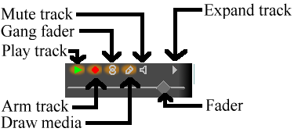
Track attributes
Supported file formats are currently:
- WAV
- FLAC
- PCM
- AIFF
- AC3 audio
7.1.1 QUICKTIME
Quicktime is not the standard for UNIX but we use it because it’s well
documented. All of the Quicktime movies on the internet are
compressed. Cinelerra doesn’t support most compressed Quicktime movies
but does support some. If it crashes when loading a Quicktime movie,
that means the format probably wasn’t supported.
NOTES ON QUICKTIME ENCODING
Here are some notes regarding making Quicktime movies in Cinelerra:
Quicktime is a wrapper for 2 codecs, a video codec and an audio codec.
The video and audio codecs are picked separately. The preferred
encoding for Quicktime output is MPEG-4 Video and MPEG-4 Audio. This
format plays in the commercial players for Windows and has good
compression quality. For better compression, use H-264 Video.
Unfortunately H-264 decoding is so slow it can’t play very large frame
sizes.
Cinelerra supports 2 nonstandard codecs: Dual MPEG-4 video and dual
H.264 video. These won’t play in anything but Cinelerra and XMovie.
They are designed for movies where the frames have been divided into 2
fields, each field displayed sequentially. The dual codecs interleave
2 video streams to improve efficiency without requiring major changes
to the player.
7.1.2 MPEG-4 AUDIO
This is the same as Quicktime with MPEG-4 Audio as the audio codec.
7.1.3 IMAGE SEQUENCES
Rendering an image sequence is not the same as rendering a single
image. When rendering an image sequence Cinelerra generates a table of
contents file for the image sequence and makes a different image file
for every timeline position. The table of contents can be loaded
instead of the individual images to get better performance. To learn
more about the different image formats supported in an image sequence,
read about still images.
7.1.4 STILL IMAGES
Rendering a single image causes the image file to be overwritten for
every timeline position. No table of contents is created. When
loaded, the image takes up one frame in length and doesn’t change the
project attributes.
Several still image formats not normally found in other programs are
described here.
7.1.4.1 OPEN EXR IMAGES
You may not know about Open EXR. This format stores floating point RGB
images. It also supports a small amount of compression. Projects
which render to EXR should be in a floating point color model to take
advantage of it See SETTING PROJECT ATTRIBUTES. Several compression
options are available for EXR.
-
PIZ Lossless wavelet compression. This is the best compression.
- ZIP Lossless gzip algorithm.
- RLE Lossless run length encoding. This is the fastest and worst
compression.
- PXR24 Lossy compression where the floating point numbers are
converted to 24 bits and compressed with gzip.
Select Use Alpha if the project colormodel has an alpha channel and
you want to retain it in the file. Otherwise the primary colors are
multiplied by the alpha channel.
7.1.4.2 RAW DIGITAL CAMERA IMAGES
RAW digital camera images are a special kind of image file which
Cinelerra only imports. These must be processed in a floating point
color space once they are on the timeline. Raw images from Canon
cameras are the only ones tested. They need to have the Linearize
effect applied to correct gamma. Because raw images take a long time
to interpolate, they are usually viewed first in a proxy file and then
touched up.
First apply the Linearize effect to a track of raw images and set it to
automatic with 0.6 gamma. Then render the timeline to a
Quicktime JPEG file. Append the Quicktime JPEG file in a new track and
disable playback of the old track. Now the gamma corrected copy of
each raw image can be previewed relatively fast in the same timeline
position as the original image.
7.1.5 AVI
AVI with assorted audio and video codecs. Because AVI is so
fragmented, your luck will vary.
7.1.6 MPEG FILES CONTAINING VIDEO
MPEG files containing video can be loaded directly into Cinelerra. If
the file is supported, a table of contents is built. If the file is
unsupported, it usually crashes or shows very short tracks.
Unfortunately, this method of loading MPEG files isn’t good enough if
you intend to use the files in a renderfarm.
To use MPEG files in a renderfarm you need to run mpeg3toc to
generate a table of contents for the file, then load the table of
contents. Mpeg3toc needs the absolute path of the MPEG file. If you
don’t use an absolute path, it assumes the MPEG file is in the same
directory that Cinelerra is run from.
MPEG streams are structured into multiple tracks. Each track can be
video or audio. Each audio track can have 1-6 channels. Cinelerra
converts each channel of audio into a track.
NOTES ON MPEG VIDEO ENCODING
MPEG video encoding is done separately from MPEG audio encoding. In
MPEG video there are 2 colormodels. The YUV 4:2:0 colormodel is
encoded by a highly optimized version of mpeg2enc with presets for
standard consumer electronics. In the process of optimizing mpeg2enc,
they got rid of YUV 4:2:2 encoding. The YUV 4:2:2 colormodel is
encoded by a less optimized version of mpeg2enc.
YUV 4:2:2 encoding was kept around because the NTSC version of DV video
loses too much quality when transferred to YUV 4:2:0. This DV video
must be transferred to YUV 4:2:2.
When encoding YUV 4:2:0, the bitrate parameter changes meaning
depending on whether the bitrate or quantization is fixed. If the
bitrate is fixed, it’s the target bitrate. If the quantization is
fixed, it’s the maximum bitrate allowed. This is a quirk of the
mpeg2enc version.
7.1.7 DVD MOVIES
DVD’s are spit into a number of programs, each identified by a unique
IFO file. If you want to load a DVD, find the corresponding
IFO file for the program of interest. Load the IFO file directly
and a table of contents will be built. Alternatively for renderfarm
usage, a table of contents can be created separately.
Run
mpeg3toc -v /cdrom/video_ts/vts_01_0.ifo dvd.toc
or something similar. Then load dvd.toc.
7.1.8 MPEG 1 AUDIO
These are .mp2 and .mp3 files. If fixed bitrate, they can be loaded
directly with no table of contents. Variable bitrate streams need to
have a table of contents created with mpeg3toc.
7.1.9 OGG THEORA/VORBIS
The OGG format is an antiquated but supposedly unpatented way of
compressing audio and video. The quality isn’t as good as H.264 or
MPEG-4 Audio. In reality, anyone with enough money and desire can find
a patent violation so the justification for OGG is questionable.
7.1.10 EDIT DECISION LIST
Edit decision lists are generated by Cinelerra for storing projects.
They end in .xml. They change project attributes when loaded.
Because edit decision lists consist of text, they can be edited in a
text editor.
7.2 LOADING FILES
All data that you work with in Cinelerra is acquired either by
recording from a device or by loading from disk. This
section describes loading.
The loading and playing of files is just as you would expect. Just go
to file->Load, select a file for loading, and hit ok. Hit
the forward play button and it should start playing, regardless of
whether a progress bar has popped up.
Another way to load files is to pass the filenames as arguments on the
command line. This creates new tracks for every file and starts the
program with all the arguments loaded.
If the file is a still image, the project’s attributes are not changed
and the first frame of the track becomes the image. If the file has
audio, Cinelerra may build an index file for it to speed up drawing.
You can edit and play the file while the index file is being built.
7.2.1 INSERTION STRATEGY
Usually three things happen when you load a file. First the existing
project is cleared from the screen, second the project’s attributes are
changed to match the file’s, and finally the new file’s tracks are
created in the timeline.
But Cinelerra lets you change what happens when you load a file.
In the file selection box there is a range of options for Insertion
strategy. Each of these options loads the file a different way.
- Replace current project

All tracks in the current project are deleted and new tracks are
created to match the source. Project attributes are only changed when
loading XML. If multiple files are selected it adds new tracks for
every file.
- Replace current project and concatenate tracks

Same as replace current project except if multiple files are selected
it concatenates the tracks of every file after the first.
- Append in new tracks

The current project is not deleted and new tracks are created for the
source.
- Concatenate to existing tracks

The current project is not deleted and new files are concatenated to
the existing tracks.
- Paste at insertion point

The file is pasted in like a normal paste operation.
- Create new resources only

The timeline is unchanged and new resources are created in the Resource
Window.
- Nested EDL

If the file is an EDL, the output of the EDL is pasted in like a media
file. Nested EDLs have 1 video track & a number of audio tracks
corresponding to the number of output channels. They allow larger
sequences composed of many smaller sequences, transitions to be applied
to the output of another EDL, & global processing on the output of an
EDL without having to manipulate each track.
The insertion strategy is a recurring option in many of Cinelerra’s
functions. In each place the options do the same thing. With these
options you can almost do all your editing by loading files.
If you load files by passing command line arguments to Cinelerra, the
files are loaded with Replace current project rules.
7.2.2 LOADING MULTIPLE FILES
In the file selection box go to the list of files. Select a file. Go
to another file and select it while holding down CTRL. This
selects one additional file. Go to another file and select it while
holding down SHIFT. This selects every intervening file. This
behavior is available in most every list box.
Select a bunch of mp3 files and Replace current project and
concatenate tracks in the insertion strategy to create a song
playlist.
7.3 LOADING THE BACKUP
There is one special XML file on disk at all times. After every
editing operation Cinelerra saves the current project to a backup in
$HOME/.bcast/backup.xml. In the event of a crash go to
file->load backup to load the backup. It is important after a
crash to reboot Cinelerra without performing any editing operations.
Loading the backup should be the first operation or you’ll overwrite
the backup.
7.4 SAVING FILES
When Cinelerra saves a file it saves an edit decision list of the
current project but doesn’t save any media. Go to File->save
as.... Select a file to overwrite or enter a new file. Cinelerra
automatically concatenates .xml to the filename if no
.xml extension is given.
The saved file contains all the project settings and locations of every
edit but instead of media it contains pointers to the original media
files on disk.
For each media file the XML file stores either an absolute path or just
the relative path. If the media is in the same directory as the XML
file a relative path is saved. If it’s in a different directory an
absolute path is saved.
In order to move XML files around without breaking the media linkages
you either need to keep the media in the same directory as XML file
forever or save the XML file in a different directory than the media
and not move the media ever again.
If you want to create an audio playlist and burn it on CD-ROM, save the
XML file in the same directory as the audio files and burn the entire
directory. This keeps the media paths relative.
XML files are useful for saving the current state before going to sleep
and saving audio playlists but they’re limited in that they’re specific
to Cinelerra. You can’t play XML files in a dedicated movie player.
Realtime effects in an XML file have to be resynthesized every time you
play it back. The XML file also requires you to maintain copies of all
the source assets on hard drives, which can take up space and cost a
lot of electricity to spin. For a more persistent storage of the
output there’s rendering.
7.5 RENDERING FILES
Rendering takes a section of the timeline, performs all the editing,
effects and compositing, and stores it in a pure movie file. You can
then delete all the source assets, play the rendered file in a movie
player, or bring it back into Cinelerra for more editing. It’s very
difficult to retouch any editing decisions in the pure movie file,
however, so keep the original assets and XML file around several days
after you render it.
All rendering operations are based on a region of the timeline to be
rendered. You need to define this region on the timeline. The
navigation section describes methods of defining regions.
See NAVIGATING THE PROJECT. The rendering functions define the
region based on a set of rules. When a region is highlighted or in/out
points are set, the affected region is rendered. When no region is
highlighted, everything after the insertion point is rendered. Merely
by positioning the insertion point at the beginning of a track and
unsetting all in/out points, the entire track is rendered.
7.5.1 SINGLE FILE RENDERING
The fastest way to get media to disk is to use the single file
rendering function.
Go to File->render to bring up the render dialog. Select the
magnifying glass to bring up a file selection dialog. This determines
the filename to write the rendered file to and the encoding parameters.
In the render dialog select a format from the File Format menu.
The format of the file determines whether you can render audio or video
or both. Select the Render audio tracks toggle to generate
audio tracks and Render video tracks to generate video tracks.
Select the wrench next to each toggle to set compression
parameters. If the file format can’t store audio or video the
compression parameters will be blank. If Render audio tracks or
Render video tracks is selected and the file format doesn’t
support it, trying to render will pop up an error.
The Create new file at each label option causes a new file to be
created when every label in the timeline is encountered. This is
useful for dividing long audio recordings into individual tracks. When
using the renderfarm, Create new file at each label causes one
renderfarm job to be created at every label instead of using the
internal load balancing algorithm to space jobs.
When Create new file at each label is selected, a new filename
is created for every output file. If the filename given in the render
dialog has a 2 digit number in it, the 2 digit number is overwritten
with a different incremental number for every output file. If no 2
digit number is given, Cinelerra automatically concatenates a number to
the end of the given filename for every output file.
In the filename /hmov/track01.wav the 01 would be
overwritten for every output file. The filename
/hmov/track.wav; however, would become /hmov/track.wav001
and so on and so forth. Filename regeneration is only used when either
renderfarm mode is active or creating new files for every label is
active.
Finally the render dialog lets you select an insertion mode. The
insertion modes are the same as with loading files. In this case if
you select insert nothing the file will be written out to disk
without changing the current project. For other insertion strategies
be sure to prepare the timeline to have the output inserted at the
right position before the rendering operation is finished.
See EDITING. Editing describes how to cause output to be inserted
at the right position.
It should be noted that even if you only have audio or only have video
rendered, a paste insertion strategy will behave like a normal
paste operation, erasing any selected region of the timeline and
pasting just the data that was rendered. If you render only audio and
have some video tracks armed, the video tracks will get truncated while
the audio output is pasted into the audio tracks.
7.5.2 BATCH RENDERING
If you want to render many projects to media files without having to
repeatedly attend to the Render dialog, batch rendering is the
function to use. In this function, you specify many EDL files to
render and the unique output files for each. Then Cinelerra loads each
EDL file and renders it automatically, without any user intervention.
Each EDL file and its output to be rendered is called a batch.
This allows a huge amount of media to be processed and greatly
increases the value of an expensive computer.
The first thing to do when preparing to do batch rendering is define
projects to be rendered. The batch renderer requires a separate EDL
file for every batch to be rendered. Set up a project and define the
region to be rendered either by highlighting it, setting in/out points
around it, or positioning the insertion point before it. Then save the
project as an EDL. Define as many projects as needed this way. The
batch renderer takes the active region from the EDL file for rendering.
With all the EDL files prepared with active regions, go to
File->batch render. This brings up the batch rendering dialog.
The interface for batch rendering is a bit more complex than for single
file rendering.
A list of batches must be defined before starting a batch rendering
operation. The table of batches appears on the bottom of the batch
render dialog and is called batches to render. Above this are
the configuration parameters for a single batch.
Set the output path, file format, Audio, Video, and
Create new file at each label parameters as if it was a single
file. These parameters apply to only one batch. In addition to the
standard rendering parameters, you must select the source EDL to use in
the batch. Do this by setting the EDL path.
If the batches to render list is empty or nothing is highlighted,
click New to create a new batch. The new batch will contain all
the parameters you just set.
Repeatedly press the New button to create more batches with the
same parameters. Highlight any batch and edit the configuration on the
top of the batch render window. The highlighted batch is always
synchronized to the information displayed.
Click and drag batches to change the order in which they’re rendered.
Hit delete to permanently remove the highlighted batch.
In the list box is a column which enables or disables the batch. This
way batches can be skipped without being deleted. Click on the
Enabled column in the list box to enable or disable a batch. If it
is checked, the batch is rendered. If it is blank, the batch is
skipped.
The other columns in the batch list are informative.
- Output The output path of the batch.
- EDL The source EDL of the batch.
- Elapsed The amount of time taken to render the batch if it is finished.
To start rendering from the first enabled batch, hit Start.
Once rendering, the main window shows the progress of the batch. Once
the batch finishes, the elapsed column in the batch list is updated and
the next batch is rendered until all the enabled batches are finished.
The currently rendering batch is always highlighted red.
To stop rendering before the batches are finished without closing the
batch render dialog, hit Stop.
To stop rendering before the batches are finished and close the batch
render dialog, hit Cancel.
To exit the batch render dialog whether or not anything is being
rendered, hit Cancel.
7.5.3 THE RENDER FARM
When bicubic interpolation and HDTV was first done on Cinelerra, the
time needed to produce the simplest output became unbearable even on
the fastest dual 1.7Ghz Xeon of the time. Renderfarm support even in
the simplest form brings HDTV times back in line with SD while making
SD faster than realtime.
While the renderfarm interface isn’t spectacular, it’s simple enough to
use inside an editing suite with less than a dozen nodes without going
through the same amount of hassle you would with a several hundred node
farm. Renderfarm is invoked transparently for all file->render
operations when it is enabled in the preferences.
Cinelerra divides the selected region of the timeline into a certain
number of jobs which are then dispatched to the different nodes
depending on the load balance. The nodes process the jobs and write
their output to individual files on the filesystem. The output files
are not concatenated. It’s important for all the nodes to have access
to the same filesystem on the same mount point for assets.
If a node can’t access an input asset it’ll display error messages to
its console but probably not die. If it can’t access an output asset
it’ll cause the rendering to abort.
It should be noted that in the render dialog, the Create new file at
each label option causes a new renderfarm job to be created at each
label instead of by the load balancer. If this option is selected when
no labels exist, only one job will be created.
A Cinelerra renderfarm is organized into a master node and any number
of slave nodes. The master node is the computer which is running the
GUI. The slave nodes are anywhere else on the network and are run from
the command line. Run a slave node from the command line with
cinelerra -d
That is the simplest configuration. Type cinelerra -h to see more
options. The default port number may be overridden by passing a port
number after the -d.
Most of the time you’ll want to bring in the rendered output and fine
tune the timing on the timeline. Also some file formats like MPEG
can’t be direct copied. Because of this, the jobs are left in
individual files.
You can load these by creating a new track and specifying
concatenate to existing tracks in the load dialog. Files which
support direct copy can be concatenated into a single file by rendering
to the same file format with renderfarm disabled. Also to get direct
copy, the track dimensions, output dimensions, and asset dimensions
must be equal.
MPEG files or files which don’t support direct copy have to be
concatenated with a command line utility. MPEG files can be
concatenated with cat.
Configuration of the renderfarm is described in the configuration
chapter See RENDERFARM. The slave nodes traditionally read and
write data to a common filesystem over a network, thus they don’t need
hard drives.
Ideally all the nodes on the renderfarm have similar CPU performance.
Cinelerra load balances on a first come first serve basis. If the last
segment is dispatched to the slowest node, all the fastest nodes may
end up waiting for the slowest node to finish while they themselves
could have rendered it faster.
7.5.4 COMMAND LINE RENDERING
The command line rendering facility consists of a way to load the
current set of batch rendering jobs and process them without a GUI.
This is useful if you’re planning on crashing X repeatedly or want to
do rendering on the other side of a low bandwidth network. You might
have access to a supercomputer in India but still be stuck in America,
exhiled you might say. A command line interface is ideal for this.
To perform rendering from the command line, first run Cinelerra in
graphical mode. Go to file->batch render. Create the batches you
intend to render in the batch window and close the window. This saves
the batches in a file. Set up the desired renderfarm attributes in
settings->preferences and exit Cinelerra. These settings are used
the next time command line rendering is used.
On the command line run
cinelerra -r
to processes the current batch jobs without a GUI. Setting up all the
parameters for this operation is hard. That’s why the command line
aborts if any output files already exist.
Other parameters exist for specifying alternative files for the
preferences and the batches. Attempting to use anything but the
defaults is very involved so it hasn’t been tested.
8 NAVIGATING THE PROJECT
The thing you want to do most of the time is get to a certain time and
place in the media. Internally the media is organized into tracks.
Each track extends across time. Navigation involves both getting to a
track and getting to a certain time in the track.
8.1 NAVIGATING THE PROGRAM WINDOW
The program window contains many features for navigation and displays
the timeline as it is structured in memory: tracks stacked vertically
and extending across time horizontall. The horizontal scroll bar
allows you to scan across time. The vertical scroll bar allows you to
scan across tracks.
Below the timeline you’ll find the zoom panel. The zoom panel contains
values for sample zoom, amplitude, track zoom, and
curve zoom. These values in addition to the scrollbars are the
main tools for positioning the timeline.
Changing the sample zoom causes the amount of time visible to
change. If your mouse has a wheel and it works in X11 go over
the tumblers and use the wheel to zoom in and out.
The amplitude only affects audio. It determines how big the
waveform is if the waveform is drawn.
The track zoom affects all tracks. It determines the height of
each track. If you change the track zoom the amplitude zoom
compensates so audio waveforms look proportional.
The curve zoom affects the curves in all the tracks. It
determines the amplitude and offset of the curves. The tumbler affects
curve amplitude but the only way to change curve offset is to use the
fit curves button.
In addition to the graphical tools, you’ll probably more often use the
keyboard to navigate. Use PAGE UP and PAGE DOWN to
scroll up and down the tracks.
Use the LEFT and RIGHT arrows to move across time in
small increments. You’ll often need to scroll beyond the end of the
timeline but scrollbars won’t let you do it. Instead use the
RIGHT arrow to scroll past the end of timeline.
Use the HOME and END keys to instantly go to the
beginning or end of the timeline. In I-beam mode, hold down
shift while pressing HOME or END to select the region of
the timeline between the insertion point and the key pressed.
Use the UP and DOWN arrows to change the sample zoom by a
power of 2.
CTRL-UP and CTRL-DOWN cause the amplitude zoom to change.
CTRL-PGUP and CTRL-PGDOWN cause the track zoom to change.
ALT-UP and ALT-DOWN cause the curve amplitude to change.
8.1.1 THE INSERTION POINT
By default you’ll see a flashing insertion point in the program window
the first time you boot it up. This is where new media is pasted onto
the timeline. It’s also the starting point of all playback
operations. When rendering, it defines the region of the timeline to
be rendered.
The insertion point is normally moved by clicking inside the timebar.
Any region of the timebar not obscured by labels and in/out points is a
hotspot for repositioning the insertion point.
The main timebar
The insertion point also can be moved by clicking in the timeline
itself, but not always. The insertion point has two modes of
operation:
- drag and drop mode
- cut and paste mode
The mode of operation is determined by selecting the arrow or the
i-beam in the buttonbar.
The editing mode buttons
If the arrow is highlighted it enables drag and drop mode. In
drag and drop mode, clicking in the timeline doesn’t reposition the
insertion point. Instead it selects an entire edit. Dragging in the
timeline repositions the edit, snapping it to other edit boundaries.
This is normally useful for reordering audio playlists and moving
effects around.
If the i-beam is highlighted it enables cut and paste mode. In
cut and paste mode clicking in the timeline repositions the insertion
point. Dragging in the timeline highlights a region. The highlighted
region becomes the playback range during the next playback operation,
the rendered range during the next render operation, and the region
affected by cut and paste operations.
Shift-clicking in the timeline extends the highlighted region.
Double-clicking in the timeline selects the entire edit the
cursor is over.
It should be noted that when moving the insertion point and selecting
regions, the positions are either aligned to frames or aligned to
samples. When editing video you’ll want to align to frames. When
editing audio you’ll want to align to samples. This is set in
settings->align cursor on frames.
If the highlighted region is the region affected by cut and paste
operations, how do I cut and paste in drag and drop mode? In
this case you need to set in/out points to define an affected region.
8.1.2 THE IN/OUT POINTS
In both editing modes you can set in/out points. The in/out points
define the affected region. In drag and drop mode they are the only
way to define an affected region. In both cut and paste mode and drag
and drop mode the highlighted area overrides the in/out points. If a
highlighted area and in/out points are set, the highlighted area is
affected by editing operations and the in/out points are ignored. If
no region is highlighted, the in/out points are used.
Normally, in/out points do not affect the playback region. Only if you
hold down CTRL while issuing a playback command do the in/out points
determine the playback region.
To set in/out points go to the timebar and position the insertion point
somewhere. Hit the in point button. Go
to a position after the in point and hit the
out point button.
Timebar with in/out points set.
Select either the in point or the out point and the insertion point
jumps to that location. After selecting an in point, if you hit the
in point button the in point will be deleted. After selecting
an out point, if you hit the out point button the out point will
be deleted.
If you select a region somewhere else while in/out points already
exist, the existing points will be repositioned when you hit the in/out
buttons.
Shift-clicking on an in/out point extends the highlighted region
to that point.
Instead of using the button bar you can use the [ and ]
keys to toggle in/out points.
The insertion point and the in/out points allow you to define an
affected region but they don’t let you jump to exact points on the
timeline very easily. For this purpose there are labels.
8.1.3 USING LABELS IN THE PROGRAM WINDOW
Labels are an easy way to set exact locations on the timeline you want
to jump to. When you position the insertion point somewhere and hit
the  label button a new label appears on the
timeline.
label button a new label appears on the
timeline.

Timebar with a label on it
No matter what the zoom settings are, clicking on the label positions
the insertion point exactly where you set it. Hitting the label button
again when a label is selected deletes it.
Shift-clicking on a label extends the highlighted region.
Double-clicking between two labels highlights the region between
the labels.
Hitting the l key has the same effect as the label button.
If you hit the label button when a region is highlighted, two labels
are toggled at each end of the highlighted region. If one end already
has a label, then the existing label is deleted and a label is created
at the opposite end.
Labels can reposition the insertion point when they are selected but
they can also be traversed with the label
traversal buttons. When a label is out of view, the label traversal
buttons reposition the timeline so the label is visible. There are
keyboard shortcuts for label traversal, too.
CTRL-LEFT repositions the insertion point on the previous label.
CTRL-RIGHT repositions the insertion point on the next label.
With label traversal you can quickly seek back and forth on the
timeline but you can also select regions.
SHIFT-CTRL-LEFT extends the highlighted region to the previous
label.
SHIFT-CTRL-RIGHT extends the highlighted region to the next label.
Manually hitting the label button or l key over and over again
to delete a series of labels can get tedious. For deleting a set of
labels, first highlight a region and second use the Edit->Clear
labels function. If in/out points exist, the labels between the
in/out points are cleared and the highlighted region ignored.
8.2 NAVIGATING THE VIEWER AND COMPOSITOR
The navigation features of the Viewer and Compositor behave very
similarly. Each has a timebar and slider below the video output. The
timebar and slider are critical for navigation.
The timebar represents the entire time covered by the program. When
you define labels and in/out points it defines those, too. Finally the
timebar defines a region known as the preview region.
The preview region is the region of the timeline which the
slider effects. The slider only covers the time covered by the preview
region. By using a preview region inside the entire program and using
the slider inside the preview region you can quickly and precisely seek
in the compositor and viewer.
When you replace the current project with a file the preview region
automatically resizes to cover the entire file. When you append data
or change the size of the current project, the preview region stays the
same size and shrinks. Therefore, you need to resize the preview
region.
Load a file and then slide around it using the compositor slider. The
insertion point in the main window follows the compositor. Move the
pointer over the compositor’s timebar until it turns into a left resize
pointer. The click and drag right. The preview region should have
changed and the slider resized proportionally.
Go to the right of the timebar until a right resize pointer appears.
Drag left so the preview region shrinks.
Go to the center of the preview region in the timebar and drag it
around to convince yourself if can be moved.
Preview region in compositor
If you go to the slider and slide it around with the preview region
shrunk, you’ll see the slider only affects the preview region. The
timebar and slider in the viewer window work exactly the same.
Labels and in/out points are fully supported in the viewer and
compositor. The only difference between the viewer and compositor is
the compositor reflects the state of the program while the viewer
reflects the state of a clip but not the program.
When you hit the label button in the compositor, the label
appears both in the compositor timebar and the program timebar.
When you select a label or in/out point in the compositor, the program
window jumps to that position.

Labels and in/out points in the viewer.
In the viewer and compositor, labels and in/out points are displayed in
the timebar. Instead of displaying just a region of the program, the
timebar displays the entire program here.
Like the Program window, the Compositor has a zoom capability. First,
the pulldown menu on the bottom of the compositor window has a number
of zoom options. When set to Auto the video is zoomed to match
the compositor window size as closely as possible. When set to any
other percentage, the video is zoomed a power of 2 and scrollbars can
be used to scroll around the output. When the video is zoomed bigger
than the window size, not only do scrollbars scan around it but
middle mouse button dragging in the video output scans around
it. This is exactly when The Gimp does.
Furthermore, the zoom toggle causes the Compositor
window to enter zoom mode. In zoom mode, clicking in the video output
zooms in while ctrl-clicking in the video output zooms out. If
you have a wheel mouse, rotating the wheel zooms in or out too.
Zooming in or out with the zoom tool does not change the rendered
output, mind you. It’s merely for scrutinizing video or fitting it in
the desktop.
8.3 NAVIGATING THE RESOURCES
The resource window is divided into two areas. One area lists folders
and another area lists folder contents. Going into the folder list and
clicking on a folder updates the contents area with the contents of
that folder.
The folder and contents can be displayed as icons or text.
Right clicking in the folder or contents area brings up a menu
containing formatting options. Select Display text to display a
text listing. Select Sort items to sort the contents of the
folder alphabetically.
8.4 USING THE TRANSPORT CONTROLS
Transport controls are just as useful in navigation as they are in
playing back footage, hence they are described here in the navigation
section. Each of the Viewer, Compositor, and Program windows has a
transport panel.

The transport panel.
The transport panel is controlled by the keyboard as well as the
graphical interface. For each of the operations it performs, the
starting position is the position of the insertion point in the Program
window and the slider in the Compositor window. The ending position is
either the end or start of the timeline or the end or start of the
selected region if there is one.
The orientation of the end or start depends on the direction of
playback. If it’s forward the end position is the end of the selected
region. If it’s backward the end position is the start of the selected
region.
The insertion point moves to track playback. When playback stops, the
insertion point stays where playback stopped. Thus, by playing back
you change the position of the insertion point.
The keyboard interface is usually the fastest and has more speeds. The
transport keys are arranged in a sideways T on the number pad.
- + Fast reverse
- 6 Normal reverse
- 5 Slow reverse
- 4 Frame reverse
- 1 Frame forward
- 2 Slow forward
- 3 Normal forward
- Enter Fast forward
- 0 Stop
- Spacebar Normal forward
Hitting any key on the keyboard twice pauses it.
When using frame advance functions the behavior may seem odd. If you
frame advance forward and then frame advance backward, the displayed
frame doesn’t change. This is because the playback position isn’t the
frame but the time between two frames. The rendered frame is the area
that the playback position crosses. When you increment the time
between two frames by one and decrement it by one, you cross the same
frame both times and so the same frame is displayed.
The transport behavior changes if you hold down CTRL when issuing any
of the transport commands. This causes the starting point to be the in
point if playing forward and the out point if playing backward. If
playing forward, the out point becomes the ending point and if playing
backward, the in point becomes the ending point. If no in/out points
are specified, the behavior falls back to using the insertion point and
track boundaries as the starting and ending points.
8.5 USING BACKGROUND RENDERING
Background rendering allows impossibly slow effects to play back in
realtime shortly after the effect is pasted in the timeline. It
continuously renders temporary output. When renderfarm is enabled,
background rendering uses the renderfarm continuously. This way, any
size video can be seen in realtime merely by creating a fast enough
network with enough nodes.
Background rendering is enabled in settings->preferences->performance.
It has one interactive function: settings->set background render. This
sets the point where background rendering begins to where the in point
is. If any video exists, a red bar appears in the time bar showing
what has been background rendered.
It’s often useful to insert an effect or a transition and then select
settings->set background render right before the effect to preview it
in full framerates.
9 EDITING
Editing comprises both the time domain and the track domain. Since the
timeline consists of a stack of tracks, you need to worry about how to
sort and create tracks in addition to what time certain media appears
on a track.
In the time domain, Cinelerra offers many ways to approach the editing
process. The three main methods are two screen editing, drag and drop
editing, and cut and paste editing.
There are several concepts Cinelerra uses when editing which apply to
all the methods. The timeline is where all editing decisions are
represented. This is a stack of tracks in the center of the main
window. It can be scrolled up, down, left and right with the
scrollbars on the right and bottom of it. It can also be scrolled up
and down with a mouse wheel.
The active region is the range of time which is affected by editing
commands on the timeline. The active region is determined first by the
presence of in/out points in the timeline. If those don’t exist the
highlighted region is used. If no highlighted region exists the
insertion point is used as the start of the active region. Some
commands treat all the space to the right of the insertion point as
active, like Render, while others treat the active length as 0 if no
end point for the active region is defined.
Finally, editing decisions never affect source material. This is
non destructive editing and it became popular with audio because it
was much faster than if you had to copy all the media affected by an
edit. Editing only affects pointers to source material, so if you want
to have a media file at the end of your editing session which
represents the editing decisions, you need to render it.
See RENDERING FILES.
Every track on the timeline has a set of attributes on
the left, the most important of which is the arm track
attribute.
9.1 THE PATCHBAY
On the left of the timeline is a region affectionately known as the
patchbay. The patchbay enables features specific to each track. All
tracks have a text area for naming the track.
All tracks have an expander  for viewing
more options and for viewing the effects on the track. Click on the
expander to expand or collapse the track. If it’s pointing sideways,
the track is collapsed. If it’s pointing down, the track is expanded.
The effects appear below the media for the track if they exist.
for viewing
more options and for viewing the effects on the track. Click on the
expander to expand or collapse the track. If it’s pointing sideways,
the track is collapsed. If it’s pointing down, the track is expanded.
The effects appear below the media for the track if they exist.
All tracks have the following row of toggles for several features.
Track attributes
If the toggle is colored, it is enabled. If the toggle is the
background color of most of the windows, it is disabled. Click on the
toggle to enable or disable the feature. Several mouse operations
speed up the configuration of several tracks at a time.
Click on an attribute and drag across adjacent tracks to copy the same
attribute to those tracks.
Hold down shift while clicking a track’s attribute to enable the
attribute in the current track and toggle the attribute in all the
other tracks.
Hold down shift while clicking an attribute. Click until all the
tracks except the selected one are disabled. Then drag the cursor over
the adjacent track to enable the attribute in the adjacent track.
The other attributes affect the output of the track.
-
Play track determines whether the track is rendered or not. If
it’s off, the track is not rendered. However, if the track is chained
to any other tracks, the other tracks perform all the effects in the
chained track, regardless of play status.
-
Arm track determines whether the track is armed or not. Only the
armed tracks are affected by editing operations. Make sure you
have enough armed destination tracks when you paste or splice material
or some tracks in the material will get left out.
In addition to restricting editing operations, the armed tracks in
combination with the active region determine where material is inserted
when loading files. If the files are loaded with one of the insertion
strategies which doesn’t delete the existing project, the armed tracks
will be used as destination tracks.
Press Tab while the cursor is anywhere over a track to toggle the
track arming status.
Press Shift-Tab while the cursor is over a track to toggle the
arming status of every other track.
-
Gang fader causes the fader to track the movement of whatever other
fader you’re adjusting. A fader is only ganged if the arm track is
also on. This is normally used to adjust audio levels on all the
tracks simultaneously. Gang also causes Nudge parameters to
synchronise across all the ganged tracks.
-
Draw media determines if picons or waveforms are drawn on the
track. By default, some file formats load with this off while other
file formats load with it on. This depends on whether the file format
takes a long time to draw on the timeline. Merely set it to on if you
want to see picons for any file format.
-
Mute track causes the output to be thrown away once the track is
completely rendered. This happens whether or not play track is
on. If the track is part of an effect chain, the output of the effect
chain track is overlayed on the final output even though it’s routed
back to another track. Mute track is used to keep the effect chain
track from overlapping the output of the source track.
-
Fader All tracks have a fader, but the units of each fader depend
on whether it’s audio or video. Click and drag the fader to fade the
track in and out. If it is ganged to other tracks of the same media
type, with the arm option enabled, the other faders should follow.
Hold down shift and drag a fader to center it on 0.
9.2 NUDGING TRACKS
Each track has a nudge textbox in its patchbay. You may have to expand
the track to see it. These are views of the patchbays when expanded.
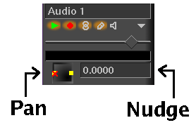
Pan and nudge for an audio track.
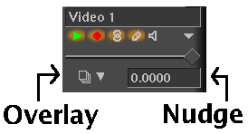
Overlay mode and nudge for a video track.
The nudge is the amount the track is shifted left or right during
playback. The track is not displayed shifted on the timeline, but it
is shifted when it’s played back. This is useful for synchronizing
audio with video, creating fake stereo, or compensating for an effect
which shifts time, all without tampering with any edits.
Merely enter in the amount of time to shift by to instantly shift the
track. Negative numbers make the track play later. Positive numbers
make the track play sooner. The nudge units are either seconds or
the native units for the track. Select the units by right clicking
on the nudge textbox and using the context sensitive menu.
Nudge settings are ganged with the Gang faders toggle and the
Arm track toggle.
Use the mouse wheel over the nudge textbox to increment and decriment
it.
9.3 PANNING TRACKS
Audio tracks have a panning box in their patchbay. It may have to be
expanded to see it. The panning box is shown here.
Pan and nudge for an audio track.
Position the pointer in the panning box and click/drag to reposition
the audio output among the speaker arrangement. The loudness of each
speaker is printed during the dragging operation. The panning box uses
a special algorithm to try to allow audio to be focused through one
speaker or branched between the nearest speakers when more than 2
speakers are used.
9.4 AUTOMATIC TRACK PANNING
Several convenience functions are provided for automatically setting
the panning to several common standards. They are listed in the
Audio menu. These functions only affect audio tracks with
recording enabled.
Audio->Map 1:1 - This maps every track to its own channel and wraps
around when all the channels are allocated. It’s most useful for
making 2 tracks with 2 channels map to stereo and for making 6 tracks
with 6 channels map to a 6 channel soundcard.
Audio->Map 5.1:2 - This maps 6 tracks to 2 channels. The project
should have 2 channels when using this function. Go to
Settings->format to set the output channels to 2. This is most
useful for downmixing 5.1 audio to stereo.
9.5 STANDARD AUDIO MAPPINGS
Although Cinelerra lets you map any audio track to any speaker, there
are standard mappings you should use to ensure the media can be played
back elsewhere. Also, most audio encoders require the audio tracks to
be mapped to standard speaker numbers or they won’t work.
In the channel position widget See SETTING PROJECT ATTRIBUTES,
the channels are numbered to correspond to the output tracks they are
rendered to. For stereo, the source of channel 1 needs to be the left
track and the source of channel 2 needs to be the right track.
For 5.1 surround sound, the sources of the 6 channels need to be in the
order of center, front left, front right, back left, back right, low
frequency effects. If the right tracks aren’t mapped to the right
speakers, most audio encoders won’t encode the right information if
they encode anything at all. The low frequency effects track
specifically can’t store high frequencies in most cases.
9.6 MANIPULATING TRACKS
Tracks in Cinelerra either contain audio or video. There is no special
designation for tracks other than the type of media they contain. When
you create a new project, it contains a certain mumber of default
tracks. You can still add or delete tracks from a number of menus.
The Tracks menu contains a number of options for dealing with
multiple tracks simultaneously. Each track itself has a popup menu
which affects one track.
Bring up the popup menu by moving over a track and right clicking. The
popup menu affects the track whether it’s armed or not.
Move up and move down moves the one track up or down in
the stack. Delete track deletes the track.
Operations in the Tracks menu affect only tracks which are
armed.
Move tracks up and Move tracks down shift all the armed
tracks up or down the stack.
Delete tracks deletes the armed tracks.
Delete last track deletes the last track, whether it’s armed or
not. Holding down the d key quickly deletes all the tracks.
Concatenate tracks is more complicated. It takes every
playable track and concatenates it to the end of the first
armed tracks. If there are two armed tracks followed by two
playable tracks, the concatenate operation puts the two playable tracks
after the two armed tracks. If there are three playable tracks
instead, two tracks are put after the armed tracks and a third track is
put on the end of the first armed track. The destination track wraps
around until all the playable tracks are concatenated.
Finally, you’ll want to create new tracks. The Audio and
Video menus each contain an option to add a track of their
specific type. In the case of audio, the new track is put on the
bottom of the timeline and the output channel of the audio track is
incremented by one. In the case of video, the new track is put on the
top of the timeline. This way, video has a natural compositing order.
New video tracks are overlayed on top of old tracks.
9.7 TWO SCREEN EDITING
This is the fastest way to construct a program out of movie files. The
idea consists of viewing a movie file in one window and viewing the
program in another window. Sections of the movie file are defined in
one window and transferred to the end of the program in the other
window.
The way to begin a two screen editing session is to load some
resources. In file->load load some movies with the insertion
mode create new resources. You want the timeline to stay
unchanged while new resources are brought in. Go to the Resource
Window and select the media folder. The newly loaded resources
should appear. Drag a resource from the media side of the window over
the Viewer window.
There should be enough armed tracks on the timeline to put the sections
of source material that you want. If there aren’t, create new tracks
or arm more tracks.
In the viewer window seek to the starting point of a clip you want to
use. Use either the slider or the transport controls.
Use the preview region to narrow down the search. Set the
starting point with the in point button.
Seek to the ending point of the clip you want to use. Set the ending
point with the out point button. The
two points should now appear on the timebar and define a clip.
There are several things you can do with the clip now.
-
Splice
 inserts the clip in the timeline, pushing
everything back. If an in point or out point exists on
the timeline it’s inserted there, otherwise it’s inserted after the
insertion point. After that, the insertion point moves to the end of
the clip. If there is no in/out point, the insertion point will be
used as the next splice location. This way you can continuously build
up the program by splicing.
inserts the clip in the timeline, pushing
everything back. If an in point or out point exists on
the timeline it’s inserted there, otherwise it’s inserted after the
insertion point. After that, the insertion point moves to the end of
the clip. If there is no in/out point, the insertion point will be
used as the next splice location. This way you can continuously build
up the program by splicing.
-
Overwrite
 overwrites the region of the
timeline with the clip. If an in point or out point
exists on the timeline it’s overwritten there, otherwise it’s
overwritten after the insertion point. If a region is highlighted or
both in and out points exist the difference between the active region
and the clip length is deleted.
overwrites the region of the
timeline with the clip. If an in point or out point
exists on the timeline it’s overwritten there, otherwise it’s
overwritten after the insertion point. If a region is highlighted or
both in and out points exist the difference between the active region
and the clip length is deleted.
-
Create a clip generates a new clip for the
resource window containing the affected region but doesn’t change the
timeline. Every clip has a title and a description. These are
optional.
-
Copy behaves the same as in cut and paste editing.
Two screen editing can be done purely by keybard shortcuts. When you
move the pointer over any button a tooltip should appear, showing what
key is bound to that button. In the Viewer window, the number pad keys
control the transport and the [ ] v keys perform in/out points
and splicing.
9.8 DRAG AND DROP EDITING
The answer is yes, you can you create a bunch of clips and drag them on
the timeline. You can also drag edits around the timeline.
Load some files using file->load. Set the insertion mode to
Create new resources. This loads the files into the Resource
Window. Create some audio and video tracks on the timeline using the
video and audio menus.
Open the Media folder in the resource window. Drag a media file
from the resource window to the timeline. If the media has video, drag
it onto a video track. If the media is pure audio, drag it onto an
audio track.
Cinelerra fills out the audio and video tracks below the dragging
cursor with data from the file. This affects what tracks you should
create initially and which track to drag the media onto. If the media
has one video track and two audio tracks, you’ll need one video track
and two audio tracks on the timeline and the media should be dragged
over the first video track. If the media has audio only you’ll need
one audio track on the timeline for every audio track in the media and
the media should be dragged over the first audio track.
When dragging, the media snaps to the start of track if the track is
empty. If there are edits on the track, the media snaps to the nearest
edit boundary.
You can also drag multiple files from the resource window. Either draw
a box around the files, use SHIFT, or use CTRL when selecting files.
When you drop the files in the timeline, they are concatenated. The
behavior of SHIFT and CTRL changes depending on if the resources are in
text or icons.
To display the resources as text or icons, right click inside the media
list. Select either display icons or display text to
change the list format.
When displaying text in the resource window SHIFT-clicking on
media files extends the number of highlighted selections.
CTRL-clicking on media files in text mode selects additional
files one at a time.
When displaying icons in the resource window SHIFT-clicking or
CTRL-clicking selects media files one at a time.
In addition to dragging media files, if you create clips and open the
clip folder you can drag clips on the timeline.
In the timeline there is further dragging functionality. To enable the
dragging functionality of the timeline, select the arrow toggle
 . Move over an edit and drag it. If more than one
track is armed, Cinelerra will drag any edits which start on the same
position as the edit the cursur is currently over. During a dragging
operation the edit snaps to the nearest boundary.
. Move over an edit and drag it. If more than one
track is armed, Cinelerra will drag any edits which start on the same
position as the edit the cursur is currently over. During a dragging
operation the edit snaps to the nearest boundary.
Dragging edits around the timeline allows you to sort music playlists,
sort movie scenes, and give better NAB demos but not much else.
9.9 CUT AND PASTE EDITING
This is the traditional method of editing in audio editors. In the
case of Cinelerra, you either need to start a second copy of Cinelerra
and copy from one copy to the other, copy from different tracks in the
same copy, or load a media file into the Viewer and copy from there.
Load some files onto the timeline. To perform cut and paste editing
select the  i-beam toggle. Select a region of the
timeline and select the
i-beam toggle. Select a region of the
timeline and select the  cut button to cut it. Move the
insertion point to another point in the timeline and select the
cut button to cut it. Move the
insertion point to another point in the timeline and select the
 paste button. Assuming no in/out points are defined on
the timeline this performs a cut and paste operation.
paste button. Assuming no in/out points are defined on
the timeline this performs a cut and paste operation.
If in/out points are defined, the insertion point and highlighted
region are overridden by the in/out points for clipboard operations.
Thus, with in/out points you can perform cut and paste in drag and drop
mode as well as cut and paste mode.
When editing audio, it is customary to cut from one part of a waveform
into the same part of another waveform. The start and stop points of
the cut are identical in each waveform and might be offset slightly,
while the wave data is different. It would be very hard to highlight
one waveform to cut it and highlight the second waveform to paste it
without changing the relative start and stop positions.
One option for simplifying this is to open a second copy of Cinelerra,
cutting and pasting to transport media between the two copies. This
way two highlighed regions can exist simultanously.
Another option is to set in/out points for the source region of the
source waveform and set labels for the destination region of the
destination waveform. Perform a cut, clear the in/out points, select
the region between the labels, and perform a paste.
A final operation in cut and paste editing is the edit->clear
operation. If a region is highlighted or in/out points exist, the
affected region is cleared by edit->clear. But if the insertion
point is over an edit boundary and the edits on each side of the edit
boundary are the same resource, the edits are combined into one edit
comprised by the resource. The start of this one edit is the start of
the first edit and the end of this one edit is the end of the second
edit. This either results in the edit expanding or shrinking.
9.10 TRIMMING
With some edits on the timeline it’s possible to do trimming. By
trimming you shrink or grow the edit boundaries by dragging them. In
either drag and drop mode or cut and paste mode, move the cursor over
an edit boundary until it changes shape. The cursor will either be an
expand left or an expand right. If the cursor is an expand left, the
dragging operation affects the beginning of the edit. If the cursor is
an expand right, the dragging operation affects the end of the edit.
When you click on an edit boundary to start dragging, the mouse button
number determines which dragging behavior is going to be followed. 3
possible behaviors are bound to mouse buttons in the interface
preferences. See INTERFACE.
The effect of each drag operation not only depends on the behavior
button but whether the beginning or end of the edit is being dragged.
When you release the mouse button, the trimming operation is performed.
In a Drag all following edits operation, the beginning of the
edit either cuts data from the edit if you move it forward or pastes
new data from before the edit if you move it backward. The end of the
edit pastes data into the edit if you move it forward or cuts data from
the end of the edit if you move it backward. All the edits thereafter
shift. Finally, if you drag the end of the edit past the start of the
edit, the edit is deleted.
In a Drag only one edit operation, the behavior is the same when
you drag the beginning or end of an edit. The only difference is none
of the other edits in the track shift. Instead, anything adjacent to
the current edit expands or shrinks to fill gaps left by the drag
operation.
In a Drag source only operation, nothing is cut or pasted. If
you move the beginning or end of the edit forward, the source reference
in the edit shifts forward. If you move the beginning or end of the
edit backward, the source reference shifts backward. Where the edit
appears in the timeline remains the same but the source shifts.
For all file formats besides still images, the extent of the trimming
operation is clamped to the source file length. Attempting to drag the
start of the edit beyond the start of the source clamps it to the
source start.
In all trimming operations, all edits which start on the same position
as the cursor when the drag operation begins are affected. Unarm
tracks to prevent edits from getting affected.
10 USING EFFECTS
It would be sufficient to perform all changes to the timeline using
editing operations, but this isn’t very extensible. Certain timeline
changes should produce a different effect in the output without
involving a unique procedure to apply each change. This is why we have
effects.
Effects fall into three categories, and each effect in a category is
applied using the same procedure.
10.1 REALTIME EFFECTS
These are layered under the track they apply to. They process the
track when the track is played back, with no permanent storage of the
output except when the project is rendered.
APPLYING REALTIME EFFECTS
All the realtime effects are listed in the resource window, divided
into two groups: audio effects and video effects. Audio effects should
be dragged from the resource window onto audio tracks. Video effects
should be dragged onto video tracks.
If there is data on the destination track, the effect is applied to the
entire track. If there is no data on the track the effect is deleted.
Finally, if a region of the track is selected the effect is pasted into
the region, regardless of whether there is data.
Some of the effects don’t process data but synthesize data. In the
case of a synthesis effect, you’ll want to select a region of the
track so the dragging operation pastes it without deleting it.
When dragging more than one effect onto a track, you’ll see the effects
layering from top to bottom, on the bottom of the track. When the
track is played back, effects are processed from top to bottom. The
output of the top effect becomes the input of the bottom effect and so
on and so forth.
In addition to dragging from the resource window, there are 2 other
methods of applying them:
- APPLYING FROM THE TRACK POPUP MENU:
Right click on a track and select Attach effect from the popup. The attach effect
dialog gives you more control than pure dragging and dropping. For one
thing, the attach effect dialog lets you attach two more types of
effects: shared effects and shared tracks. Select a plugin from the
Plugins column and hit Attach under the plugins column to attach
it. The effect is the same as if the effect was dragged from the
resource window.
- APPLYING FROM THE AUDIO AND VIDEO MENUS:
Select Audio->Attach effect... or Video->Attach effect to attach
a realtime effect to all the recordable tracks simultaneously. The
advantage with this is most of the time you want to attach the same
effect to all the audio tracks and the other two methods require
repeating the same work for every track.
The menu interface has an option called Attach single standalone and
share others. Enable this to make the first track get a standalone
effect and to have the other tracks share the standalone effect. Most
of the time, you want this to be on.
When an effect exists under a track, it most often needs to be
configured. Go to the effect and right click on it to bring up the
effect popup. In the effect popup is a show option. The show
option causes the GUI for the effect to appear under the cursor. Most
effects have GUI’s but some don’t. If the effect doesn’t have a GUI,
nothing pops up when the show option is selected. When you
tweek parameters in the effect GUI, the parameters normally effect the
entire duration of the effect.
10.1.1 REALTIME EFFECT TYPES
The two other effect types supported by the Attach Effect dialog are
recycled effects. In order to use a recycled effect, three requiremenets
must be met:
- There must be other effects in the timeline.
-
The other effects must be of the same type as the track you’re
attaching an effect to. If the track is an audio track, the effects
must be audio effects. If the track is a video track, the effects must
be video effects.
-
The insertion point or selected region must start inside the other effects.
In the case of a shared effect, these conditions must be true. In the
case of a shared track, there merely must be another track on the
timeline of the same type as the track you’re applying an effect to.
If you right clicked on a video track to attach an effect, there won’t
be anything in the shared tracks column if no other video track
exists. If you right clicked on an audio track there won’t be anything
in the shared track column if no other audio track exists.
If shared effects or shared tracks are available, they appear in the
shared effects and shared tracks columns. The
attach button under each column causes anything highlighted in
the column to be attached under the current track.
Shared effects and shared tracks allow very unique things to be done.
In the case of a shared effect, the shared effect is treated like a
copy of the original effect except in the shared effect the GUI can’t
be brought up. All configuration of the shared effect is determined by
the GUI of the original effect and only the GUI of the original effect
can be brought up.
When a shared effect is played back, it’s processed just like a normal
effect except the configuration is copied from the original effect.
Some effects detect when they are being shared, like the reverb effects
and the compressor. These effects determine what tracks are sharing
them and either mix the two tracks together or use one track to stage
some value. The reverb mixes tracks together to simulate ambience.
The compressor uses one of the sharing tracks as the trigger.
When an original track has a shared track as one of its effects,
the shared track itself is used as a realtime effect. This is more
commonly known as bouncing tracks but Cinelerra achieves the
same operation by attaching shared tracks. The fade and any effects in
the shared track are applied to the original track. Once the shared
track has processed the data, the original track performs any effects
which come below the shared track and then composites it on the output.
In addition, once the shared track has processed the output of the
original track like a realtime effect, the shared track mixes itself
into the output with it’s settings for pan, mode, and projector. Thus,
two tracks are mixing the same data on the output. Most of the time
you don’t want the shared track to mix the same data as the original
track on the output. You want it to stop right before the mixing stage
and give the data back to the original track. Do this by enabling the
 mute toggle next to each track for whom you don’t
want to mix on the output.
mute toggle next to each track for whom you don’t
want to mix on the output.
Suppose you were making video and you did want the shared track to
composite the original track’s data on the output a second time. In
the case of video, the video from the shared track would always appear
under the video from the original track, regardless of whether it was
on top of the original track. This is because shared tracks are
composited in order of their attachment. Since it’s part of the original
track it has to be composited before the original track is composited.
10.1.2 EDITING REALTIME EFFECTS
Many operations exist for manipulating effects once they are in the
timeline. Because mixing effects and media is such complex business,
the methods used in editing effects aren’t as concise as cutting and
pasting. Some of the editing happens by dragging in/out points, some
of the editing happens through popup menus, and some of it happens by
dragging effects.
Normally when you edit tracks, the effects follow the editing
decisions. If you cut from a track, the effect shrinks. If you drag
edit in/out points, the effect changes length. This behavior can be
disabled by selecting Settings->edit effects in the project
window. This decouples effects from editing operations, but what if
you just want to edit the effects?
Move the timeline cursor over the effect borders until it changes to a
resize left or resize right icon. In this state, if you drag the end
of the effect, it performs an edit just like dragging the end of a
track does.
The three editing behaviors of track trimming apply to effect trimming
and they are bound to the mouse buttons that you set in interface
preferences. See INTERFACE. When you perform a trim edit on an
effect, the effect boundary is moved by dragging on it. Unlike track
editing, the effect has no source length. You can extend the end of an
effect as much as desired without being limited.
Also unlike track editing, the starting position of the drag operation
doesn’t bind the edit decision to media. The media the effect is bound
to doesn’t follow effect edits. Other effects; however, do follow
editing decisions made on an effect. If you drag the end of an effect
which is lined up to effects on other tracks, the effects on the other
tracks will be edited while the media stays the same.
What happens if you trim the end of an effect in, leaving a lot of
unaffected time near the end of the track? When you drag an effect in
from the Resource Window you can insert the effect in the portion of
the row unoccupied by the trimming operation. Realtime effects are
organized into rows under the track. Each row can have multiple
effects.
In some cases you’ll want a trimming operation to change only one row
of effects. This can be achieved by first positioning the insertion
point on the start or end of the effect. Then press shift while
beginning the trimming operation. This causes the operation to change
only one row of effects.
In addition to trimming, you can move effects up or down. Every track
can have a stack of effects under it. By moving an effect up or down
you change the order in which effects are processed in the stack. Go
to an effect and right click to bring up the effect menu. The
Move up and Move down options move the effect up or down.
When you’re moving effects up or down, be aware that if they’re shared
as shared effects, any references will be pointing to a
different effect after the move operation.
Finally, there’s dragging of effects. Dragging effects works just like
dragging edits. You must select the arrow to enter drag and
drop mode before dragging effects. The effects snap to media
boundaries, effect boundaries, and tracks. Be aware if you drag a
reference to a shared effect, the reference will usually point to the
wrong effect afterwards.
Right click on an effect to bring up a menu for the effect. Select
attach... to change the effect or change the reference if it is
a shared effect.
10.2 RENDERED EFFECTS
Another type of effect is performed on a section of the track and the
result stored somewhere before it is played back. The result is
usually pasted into the track to replace the original data.
In 15 years, the only effect we actually ever rendered with this feature
was normalize. We’ve never rendered an effect which could be
applied on the timeline, even though this feature supports rendering
realtime effects.
This feature was implemented back when computers were too slow to play
back anything in realtime. Decent sounding reverb took a long time &
was considered major number crunching.
The rendered effects are not listed in the resource window but instead
are accessed through the Audio->Render effect and
Video->Render effect menu options. Each of these menu options
brings up a dialog for the rendered effect. Rendered effects apply to
only one type of track, either audio or video. If no tracks of the
type exist, an error pops up.
A region of the timeline to apply the effect to must be defined before
selecting Render effect.... If no in/out points and no
highlighted region exists, the entire region after the insertion point
is treated as the affected region. Otherwise, the region between the
in/out points or the highlighted region is the affected region.
Secondly, the tracks to apply the rendered affect to need to be
armed. All other tracks are ignored.
Finally, the rendered affect processes certain track attributes when it
reads its input data but not others. Transitions in the affected track
are applied. Nudge is not and effects are not. This allows the new
data to be pasted into the existing position without changing the nudge
value.
In the render effect dialog is a list of all the realtime and all the
rendered effects. The difference here is that the realtime effects are
rendered to disk and not applied under the track. Highlight an effect
in the list to designate it as the one being performed.
Define a file to render the effect to in the Select a file to
render to box. The magnifying glass allows file
selection from a list.
Select a file format which can handle the track type. The
wrench allows configuration specific to the file format.
There is also an option for creating a new file at each label. If you
have a CD rip on the timeline which you want to divide into different
files, the labels would become dividing points between the files if
this option were selected. When the timeline is divided by labels, the
effect is re-initialized at every label. Normalize operations take the
peak in the current file and not in the entire timeline.
Finally there is an insertion strategy just like in the render dialog.
It should be noted that even though the effect applies only to audio or
video, the insertion strategy applies to all tracks just like a
clipboard operation.
When you click OK in the effect dialog, it calls the GUI of the
effect. If the effect is also a realtime effect, a second GUI appears
to prompt for acceptance or rejection of the current settings. After
accepting the settings, the effect is processed.
10.3 TRANSITIONS
When one edit ends and another edit begins, the default behaviour is to
have the first edit’s output immediately become the output of the
second edit when played back. Transitions are a way for the first
edit’s output to become the second edit’s output with different
variations.
Cinelerra supports audio and video transitions, all of which are listed
in the resource window. Transitions may only apply to the matching
track type. Transitions under audio transitions can only apply
to audio tracks. Transitions under video transitions can only
apply to video tracks.
Load a video file and cut a section from the center so the edit point
is visible on the timeline. Go the resource window and click on the
Video transitions folder. Drag a transition from the transition
list onto the second video edit on the timeline. A box highlights over
where the transition will appear. Releasing it over the second edit
applies the transition between the first and second edit.
You can now scrub over the transition with the transport controls and
watch the output in the Compositor window. Scrubbing with the
insertion point doesn’t normally show transitions because the
transition durations are usually too short. The exact point in time
when the transition takes effect isn’t straightforward. It starts when
the second edit begins and lasts a certain amount of time into the
second edit. Therefore, the first asset needs to have enough data
after the edit point to fill the transition into the second edit.
Once the transition is in place, it can be edited similarly to an
effect. Move the pointer over the transition and right click to bring
up the transition menu. The show option brings up specific
parameters for the transition in question if there are any. The
length option adjusts the length of the transition in seconds.
Once these two parameters are set, they are applied to future
transitions until they are changed again. Finally, the detach
option removes the transition from the timeline.
Dragging and dropping transitions from the Resource window to the
Program window can be really slow and tiring. Fortunately, once you
drag a transition from the Resource window, the U and u
keys will paste the same transition. The U key pastes the last
video transition and the u key pastes the last audio transition
on all the recordable tracks. If the insertion point or in point is
over an edit, the beginning of the edit is covered by the transition.
It should be noted that when playing transitions from the timeline to a
hardware accelerated video device, the hardware acceleration will
usually be turned off momentarily during the transition and on after
the transition in order to render the transition. Using an
unaccelerated video device for the entire timeline normally removes the
disturbance.
10.4 LADSPA EFFECTS
LADSPA effects are supported in realtime and rendered mode for audio.
The LADSPA plugins you get from the internet vary in quality. Most
can’t be tweeked in realtime very easily and work better when
rendered. Some crash and some can only be applied to one track due to
a lack of reentrancy. Although Cinelerra implements the LADSPA
interface as accurately as possible, multiple tracks of realtime,
simultaneous processing go beyond the majority of LADSPA users. LADSPA
effects appear in the audio folder as the hammer and screwdriver, to
signify that they are Plugins for Linux Audio Developers.
LADSPA Effects are enabled merely by setting the LADSPA_PATH
environment variable to the location of your LADSPA plugins or putting
them in the /usr/lib/cinelerra directory.
10.5 EFFECT PRESETS
Save and recall all the settings for an effect by using the presets
window. Bring up the effect context menu by right clicking on the
effect on the timeline. Go to Presets... to bring up the window.
Save all the settings to a preset by entering a title in Preset
title and clicking save. Recall the settings in a preset by
highlighting it and clicking Apply. Delete a preset by highlighting
it and clicking Delete.
11 SETTING PROJECT ATTRIBUTES
When you play media files in Cinelerra, the media files have a certain
number of tracks, a certain frame size, a certain sample size, and so
on and so forth. No matter what the media file has; however, it is
still played back according to the project attributes. If an audio
file’s samplerate is different than the project attributes, it is
resampled. If a video file’s frame size is different than the project
attributes, it is composited on a black frame, either cropped or
bordered with black.
The project attributes are adjusted in Settings->Set Format and in
to a more limited extent in File->New. When you adjust project
settings in file->new a new timeline is created with no data.
Every timeline created from this point uses the same settings. When
you adjust settings in settings->format, the timeline is not
recreated with no data but every timeline created from this point uses
the same settings.
In addition to the traditional settings for sample rate, frame rate,
frame size, Cinelerra uses some unusual settings like channel
positions, color model, and aspect ratio.
11.1 AUDIO CHANNEL POSITIONS
The currently enabled audio channels and their positions in the user
interface boxes are displayed in the channel position widget.
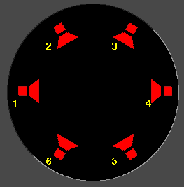
The channels are numbered. When rendered, the output from channel 1 is
rendered to the first output track in the file or the first soundcard
channel of the soundcard. Later channels are rendered to their
successively numbered output tracks.
The audio channel locations correspond to where in the panning widgets
each of the audio outputs is. The closer the panning position is to
one of the audio outputs, the more signal that speaker gets. Click on
a speaker icon and drag to change the audio channel location.
The speakers can be in any orientation. A different speaker
arrangement is stored for every number of audio channels since normally
you don’t want the same speaker arrangement for different numbers of
channels.
Channel positions is the only setting which doesn’t affect the output
necessarily. Click on a speaker icon and drag to change the position
of a channel. It is merely a convenience so when more than 2 channels
are used, the pan controls on the timeline can distinguish between
them. It has nothing to do with the actual arrangement of speakers.
But different channels can be positioned very close together to make
them have the same output.
11.2 COLOR MODEL
Color model is very important for video playback because video has the
disadvantage of being very slow. Although it isn’t noticable, audio
intermediates contain much more information than the audio on disk and
the audio which is played. Audio always uses the highest bandwidth
intermediate because it’s fast.
Video intermediates must use the least amount of data for the required
quality because it’s slow, but video intermediates still use a higher
bandwidth color model than video which is stored and video which is
played. This allows more processing to be done with less destruction
of the original data.
The video is stored on disk in one colormodel, normally compressed
using a YUV derivative. When played back, Cinelerra decompresses it
from the file format directly into the format of the output device. If
effects are processed, the decompression is into an intermediate
colormodel first and the intermediate colormodel is then converted to
the format of the output device. The selection of intermediate
colormodel determines how accurate and fast the effects are.
Cinelerra colormodels are described using a certain packing order of
components and a certain number of bits for each component. The
packing order is printed on the left and the bit allocation is printed
on the right.
-
RGB-888
This allocates 8 bits for the R, G, and B channels and no alpha. This
is normally used for uncompressed media with low dynamic range.
-
RGBA-8888
This allocates an alpha channel to the 8 bit RGB colormodel. It’s used
for overlaying multiple tracks.
-
YUV-888
This allocates 8 bits for Y, U, and V. This is used for low dynamic
range operations in which the media is compressed in the YUV color
space. Most compressed media is in YUV and this allows it to be
processed fast with the least color degradation.
-
YUVA-8888
This allocates an alpha channel to the 8 bit YUV colormodel for
transparency.
-
RGB-Float
This allocates a 32 bit float for the R, G, and B channels and no
alpha. This is used for high dynamic range processing with no
transparency.
-
RGBA-Float This adds a 32 bit float for alpha to RGB-Float. This
is used for high dynamic range processing with transparency.
In order to do effects which involve alpha channels, a colormodel with
an alpha channel must be selected. These are RGBA8888, YUVA8888, and
RGBA Float. The 4 channel colormodels are notoriously slower than 3
channel colormodels, with the slowest being RGBA Float. Some effects,
like fade, work around the need for alpha channels while other effects,
like chromakey, require an alpha channel to do anything, so it’s a good
idea to try the effect without alpha channels to see if it works before
settling on an alpha channel and slowing it down.
The YUV colormodels are usually faster than RGB colormodels when using
compressed footage. They also destroy fewer colors than RGB
colormodels. If footage stored as JPEG or MPEG is processed many times
in RGB, the colors will fade while they won’t if processed in YUV.
Years of working with high dynamic range footage have shown floating
point RGB to be the best format for high dynamic range. While 16 bit
integers were used in the past, these were too lossy and slow for the
amount of improvement.
RGB float doesn’t destroy information when used with YUV source
footage. It also supports brightness above 100%. Be aware that some
effects, like Histogram, still clip above 100% when in floating point.
11.3 ASPECT RATIO
Aspect ratio determines the shape of the video output when using the
X11 video output. The numbers in each direction can be any floating
point number. When drawn on the screen, video pixels are stretched to
match the aspect ratio.
Some file formats, like MPEG video, write the project aspect ratio to
the file.
12 COMPOSITING
A large amount of Cinelerra’s binary size is directed towards
compositing. When you remove the letterboxing from a widescreen show,
you’re compositing. Changing the resolution of a show, making a split
screen, and fading in and out among other things are all compositing
operations in Cinelerra. Cinelerra detects when it’s in a compositing
operation and plays back through the compositing engine only then.
Otherwise, it uses the fastest decoder available in the hardware.
Compositing operations are done on the timeline and in the Compositor
window. Shortcuts exist in the Resource window for changing some
compositing attributes. Once some video files are on the timeline, the
compositor window is a good place to try compositing.
12.1 THE CAMERA AND PROJECTOR
In the compositor window, the most important functions are the
camera button and the projector
button. These control operation of the camera and projector. Inside
Cinelerra’s compositing pipeline, the camera determines where in the
source video the temporary is copied from. The projector determines
where in the output the temporary is copied to. The temporary is a
frame of video in Cinelerra’s memory where all graphics processing is
done. Each track has a different temporary which is defined by the
track size. By resizing the tracks you can create splitscreens, pans,
and zooms.
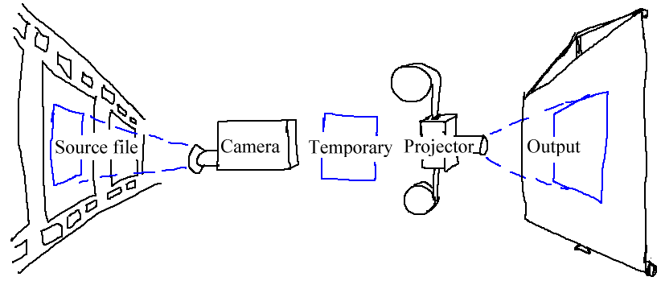
Visual representation of the compositing pipeline.
When editing the camera and projector in the compositing window, the
first track with record enabled is the track affected. Even if
the track is completely transparent, it’s still the affected track. If
multiple video tracks exist, the easiest way to select one track for
editing is to shift-click on the record icon of the track. This
solos the track.
When the projector button is enabled in the compositor window,
you’re in projector editing mode. A guide box appears in the video
window. Dragging anywhere in the video window causes the guide box to
move, hopefully along with the video. shift-dragging anywhere
in the video window causes the guide box to shrink and grow along with
the video. Once you’ve positioned the video with the projector, you’re
ready to master the camera.
Select the camera button to enable camera editing mode.
In this mode, the guide box shows where the camera position is in
relation to past and future camera positions but not where it is in
relation to the source video. Dragging the camera box in the
compositor window doesn’t move the box but instead moves the location
of the video inside the box.
For example, when you drag the camera left, the video moves right.
When you drag the camera up, the video moves down. When you shift-drag
the camera, the effect is the same as if you zoomed in or out of the
source. The intention of the camera is to produce still photo panning,
while the intention of the projector is to composite several sources in
the same scene.
In the compositing window, there is a popup menu of options for the
camera and projector. Right click over the video portion of the
compositing window to bring up the menu.
- Reset Camera causes the camera to return to the center position.
- Reset Projector causes the projector to return to the center.
The camera and projector have shortcut operations neither in the popup
menu or represented in video overlays. These are accessed in the
Tool window. Most operations in the Compositor window have a
tool window which is enabled by activating the
question mark.
In the case of the camera and projector, the tool window shows x, y,
and z coordinates. By either tumbling or entering text directly, the
camera and projector can be precisely positioned. 9 justification
types are also defined for easy access. A popular justification
operation is upper left projection after image reduction. This is used
when reducing the size of video with aspect ratio adjustment.
The translation effect allows simultaneous aspect ratio conversion and
reduction but is easier to use if the reduced video is put in the upper
left of the temporary instead of in the center. The track size is set
to the original size of the video and the camera is centered. The
output size is set to the reduced size of the video. Without any
effects, this produces just the cropped center portion of the video in
the output.
The translation effect is dropped onto the video track. The input
dimensions of the translation effect are set to the original size and
the output dimensions are set to the reduced size. To put the reduced
video in the center section that the projector shows would require
offsetting out x and out y by a complicated calculation.
Instead, we leave out x and out y at 0 and use the projector’s
tool window.
Merely by selecting  left justify and
left justify and
 top justify, the projector displays the reduced
image from the top left corner of the temporary in the center of the
output.
top justify, the projector displays the reduced
image from the top left corner of the temporary in the center of the
output.
12.2 MASKS
Masks select a region of the video for either displaying or hiding.
Masks are also used in conjunction with another effect to isolate the
effect to a certain region of the frame. A copy of one video track may
be delayed slightly and unmasked in locations where the one copy has
interference but the other copy doesn’t. Color correction may be
needed in one section of a frame but not another. A mask can be
applied to just a section of the color corrected track while the
vanilla track shows through. Removal of boom microphones, airplanes,
and housewives are other mask uses.
The order of the compositing pipeline affects what can be done with
masks. Mainly, masks are performed on the temporary after effects and
before the projector. This means multiple tracks can be bounced to a
masked track and projected with the same mask.
Our compositing pipeline graph now has a masking stage. There are 8
possible masks per track. Each mask is defined separately, although
they each perform the same operation, whether it’s addition or
subtraction.
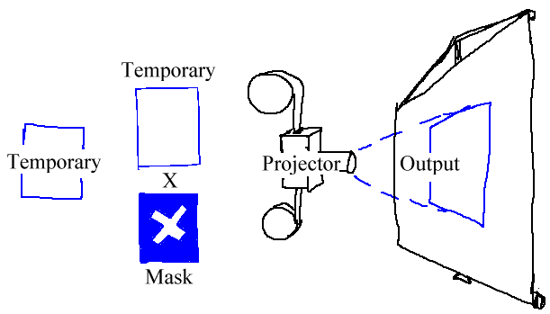
Compositing pipeline with masks
To define a mask, go into the Compositor window and enable the
mask toggle. Now go over the video and
click-drag. Click-drag again in another part of the image to create
each new point of the mask. While it isn’t the conventional bezier
curve behavior, this masking interface performs in realtime what the
effect of the mask is going to be. Creating each point of the mask
expands a rubber band curve.
Once points are defined, they can be moved by ctrl-dragging in
the vicinity of the corner. This; however, doesn’t smooth out the
curve. The in-out points of the bezier curve are accessed by
shift-dragging in the vicinity of the corner. Then
shift-dragging near the in or out point causes the point to
move.
Finally, once you have a mask, the mask can be translated in one piece
by alt-dragging the mask. Mask editing in Cinelerra is
identical to how The Gimp edits masks except in this case the effect of
the mask is always on.
The masks have many more parameters which couldn’t be represented with
video overlays. These are represented in the tool window for masks.
Selecting the question mark when the
mask toggle is highlighted brings up the mask options.
The mode of the mask determines if the mask removes data or
makes data visible. If the mode is subtractive, the mask causes video
to disappear. If the mode is additive, the mask causes video to appear
and everything outside the mask to disappear.
The value of the mask determines how extreme the addition or
subtraction is. In the subtractive mode, higher values subtract more
alpha. In the additive mode, higher values make the region in the mask
brighter while the region outside the mask is always hidden.
The mask number determines which one of the 8 possible masks we’re
editing. Each track has 8 possible masks. When you click-drag in the
compositor window, you’re only editing one of the masks. Change the
value of mask number to cause another mask to be edited. The
previous mask is still active but only the curve overlay for the
currently selected mask is visible.
When multiple masks are used, their effects are ORed together. Every
mask in a single track uses the same value and mode.
The edges of a mask are hard by default but this rarely is desired.
The feather parameter determines how many pixels to feather the
mask. This creates softer edges but takes longer to render.
Finally, there are parameters which affect one point on the current
mask instead of the whole mask. These are Delete, x, y. The
active point is defined as the last point dragged in the compositor
window. Any point can be activated merely by ctrl-clicking near
it without moving the pointer. Once a point is activated,
Delete deletes it and x, y allow repositioning by numeric
entry.
12.3 CROPPING
Cropping changes the value of the output dimensions and the projector
to reduce the visible picture area. Enable the crop
toggle and the tool window in the compositing
window to perform cropping.
This draws a rectangle over the video. Click-drag anywhere in the
video to start a new rectangle. Click-drag over any corner of the
rectangle to reposition the corner.
Alt-click in the cropping rectangle to translate the rectangle to any
position without resizing it.
The tool window allows text entry of the coordinates and executes the
cropping operation. When the rectangle is positioned, hit the do
it button in the tool window to execute the cropping operation.
12.4 SAFE REGIONS
On consumer displays the borders of the image are cut off and within
the cutoff point is a region which isn’t always square like it is in
the compositor window. The borders are intended for scratch room and
vertical blanking data. You can show where these borders are by
enabling the safe regions toggle. Keep titles inside
the inner rectangle and keep action inside the outer rectangle.
12.5 OVERLAY MODES
Every video track has an overlay mode, accessible by expanding the
track. The overlay mode is a pulldown menu on the left under the
fader. When collapsed, it displays an icon representing the current
overlay mode.
Select the expand track toggle to view all
the options for a video track if you can’t see the overlay mode. The
overlay mode of video tracks is normal by default. Select other
modes by clicking the overlay button and selecting an item from the
popup menu.
Overlay modes are processed inside the projector stage of compositing.
The different modes are summarized below.
-
Normal uses a traditional Porter-Diff equation to blend tracks with
alpha. When no alpha exists in the project color model, the new track
always replaces the output.
-
Addition In this mode, whatever is in the output is added to the
current track. The result is blended based on the current track’s
alpha onto the output.
-
Subtraction In this mode, the current track is subtracted from the
output and the result is alpha blended onto the output.
-
Multiply is the most useful operation. The current track is multiplied
by the output and the result blended onto the output. Usually a black
and white image with no alpha channel or a white title on a black image
is used as the current track. With the multiply operation, only the
output portions under the white area show.
-
Divide divides the current track by the output and the result is
blended into the output. It usually results in overloaded levels.
-
Replace does no blending and overwrites the output with the current
track.
12.6 TRACK AND OUTPUT SIZES
The size of the temporary and the size of the output in our compositing
pipeline are independant and variable. This fits into everything
covered so far. The camera’s viewport is the temporary size. Effects
are processed in the temporary and are affected by the temporary size.
Projectors are rendered to the output and are affected by the output
size. If the temporary is smaller than the output, the temporary is
bordered by blank regions in the output. If the temporary is bigger
than the output, the temporary is cropped.
The temporary size is defined as the track size. Each track has a
different size. Right click on a track to bring up the track’s menu.
Select Resize Track to resize the track to any arbitrary size.
Alternatively you can select Match output size to make the track
the same size as the output.
The output size is set in either New when creating a new project
or Settings->Format. In the Resource window there is another
way to change the output size. Right click on a video asset and select
Match project size to conform the output to the asset. When new
tracks are created, the track size always conforms to the output size
specified by these methods.
13 KEYFRAMES
When you change the fade, camera, projector, or other parameters for a
track, they stay by default the same for the entire durection of the
timeline. Setting static parameters isn’t very useful sometimes.
Normally you need to move the camera around over time or change mask
positions. Masks need to follow objects. We create dymanic changes by
defining keyframes. A keyframe is a certain point in time when the
settings for one operation change. In Cinelerra, there are keyframes
for almost every compositing parameter and effect parameter.
Whenever you adjust any parameter, the value is stored in a keyframe.
If the value is stored in a keyframe, why doesn’t it always change?
The keyframe it is stored in by default is known as the default
keyframe. The default keyframe applies to the entire duration if no
other keyframes are present. The default keyframe is not drawn
anywhere because it always exists. The only way change occurs over
time is if non-default keyframes are created.
Display keyframes for any parameter by using the view menu. A
faster way to toggle multiple keyframe types is to bring up
window->overlays. This window allows toggling of every parameter
in the view menu. When keyframes are selected, they are drawn on the
timeline over the tracks they apply to.
Keyframes come in many forms: curves, toggles, modes, and so on.
How to handle the different types of keyframes is described here.
13.1 CURVE KEYFRAMES
Many parameters are stored in rubber band curves. Go to view->fade or
view->...zoom to show curves on the timeline for those parameters.
In either arrow editing mode or i-beam editing mode, move the cursor
over the curves in the timeline until it changes shape. Then merely by
clicking and dragging on the curve you can create a keyframe at the
position.
After the keyframe is created, click drag on it again to reposition
it. When you click-drag a second keyframe on the curve, it creates a
smooth ramp.
13.2 CHANGING BEZIER & LINEAR MODE
The curve keyframes have bezier and linear modes. In linear mode, the
keyframe looks like a square and the lines emanating from it are
straight. In bezier mode, the keyframe is rounded and has 2 control
lines in addition to the rubber band curve lines.
These are keyframes in linear mode.
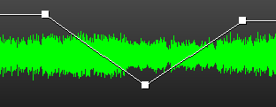
These are keyframes in bezier mode.
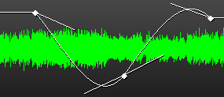
Change the mode of an existing keyframe by right clicking on it to bring
up the context menu and selecting make linear or make bezier.
Change the mode of several keyframes by highlighting the entire region of the
timeline and selecting Keyframes->change to linear or
Keyframes->change to bezier.
When keyframes are created, they can be linear or bezier by default.
Change the default mode by checking or unchecking Keyframes->create
bezier.
For bezier keyframes, ctrl-dragging on the control lines of a
keyframe changes the value of either the input control or the output
control. Without ctrl the cursor only affects the central
keyframe. This affects the sharpness of the curve. The input and
output controls can only be moved vertically.
If the control lines aren’t visible, ctrl-drag on the left or right
of the keyframe.
13.3 SNAPPING TO NEIGHBOR KEYFRAMES
shift-drag on a curve keyframe to make the keyframe snap to the
value of either the next or previous keyframe, depending on which
exists. This lets you set a constant curve value without having to copy
the next or previous keyframe.
13.4 NAVIGATING CURVE KEYFRAMES
There isn’t much room on the timeline for a wide range of curve
values. You need to zoom the curves in and out vertically to have any
variability. This is done by 2 tools: the automation fit button
 and automation zoom menu
and automation zoom menu  .
.
The automation fit button scales and offsets the vertical range so the
selected curve area appears in the timeline. If a region of the
timeline is highlighted by the cursor, only that region is scaled.
In/out points don’t affect the zoomed region. Alt-f also performs
automation fitting.
The automation zoom menu manually changes the vertical scaling of the
curves in multiples of 2. Click on its tumbler to change the zoom.
Alt-Up and Alt-Dn change the automation zoom from the keyboard.
13.5 TOGGLE KEYFRAMES
Mute is the only toggle keyframe. Mute keyframes determine where the
track is processed but not rendered to the output. Click-drag on these
curves to create a keyframe. Unlike curves, the toggle keyframe has
only two values: on or off. Ctrl and shift do nothing on toggle
keyframes.
13.6 AUTOMATIC KEYFRAMES
You may have noticed when a few fade curves are set up, moving the
insertion point around the curves causes the faders to reflect the
curve value under the insertion point. This isn’t just to look cool.
The faders themselves can set keyframes in automatic keyframe mode.
Automatic keyframe mode is usually more useful than dragging curves.
Enable automatic keyframe mode by enabling the automatic keyframe
toggle  . In automatic keyframe mode, every time
you tweek a keyframeable parameter it creates a keyframe on the
timeline. Since automatic keyframes affect many parameters, it’s best
enabled just before you need a keyframe and disabled immediately
thereafter.
. In automatic keyframe mode, every time
you tweek a keyframeable parameter it creates a keyframe on the
timeline. Since automatic keyframes affect many parameters, it’s best
enabled just before you need a keyframe and disabled immediately
thereafter.
It’s useful to go into the View menu and make the desired
parameter visible before performing a change. The location where the
automatic keyframe is generated is under the insertion point. If the
timeline is playing back during a tweek, several automatic keyframes
will be generated as you change the parameter.
When automatic keyframe mode is disabled, a similarly strange thing
happens. Adjusting a parameter adjusts the keyframe immediately
preceeding the insertion point. If two fade keyframes exist and the
insertion point is between them, changing the fader changes the first
keyframe.
There are many parameters which can only be keyframed in automatic
keyframe mode. These are parameters for which curves would take up too
much space on the track or which can’t be represented easily by a
curve.
Effects are only keyframable in automatic mode because of the number of
parameters in each individual effect.
Camera and projector translation can only be keyframed in automatic
keyframe mode while camera and projector zoom can be keyframed with
curves. It is here that we conclude the discussion of compositing,
since compositing is highly dependant on the ability to change over
time.
13.7 COMPOSITOR KEYFRAMES
Camera and projector translation is represented by two parameters: x
and y. Therefore it is cumbersome to adjust with curves. Cinelerra
solves this problem by relying on automatic keyframes. With a video
track loaded, move the insertion point to the beginning of the track
and enable automatic keyframe mode.
Move the projector slightly in the compositor window to create a
keyframe. Then go forward several seconds. Move the projector a long
distance to create another keyframe and emphasize motion. This creates
a second projector box in the compositor, with a line joining the two
boxes. The joining line is the motion path. If you create more
keyframes, more boxes are created. Once all the desired keyframes are
created, disable automatic keyframe mode.
Now when scrubbing around with the compositor window’s slider, the
video projection moves over time. At any point between two keyframes,
the motion path is read for all time before the insertion point and
green for all time after the insertion point. It’s debatable if this
is a very useful feature but it makes you feel good to know what
keyframe is going to be affected by the next projector tweek.
Click-drag when automatic keyframes are off to adjust the preceeding
keyframe. If you’re halfway between two keyframes, the first projector
box is adjusted while the second one stays the same. Furthermore, the
video doesn’t appear to move in step with the first keyframe. This is
because, halfway between two keyframes the projector translation is
interpolated. In order to set the second keyframe you’ll need to scrub
after the second keyframe.
By default the motion path is a straight line, but it can be curved
with control points. Ctrl-drag to set either the in or out
control point of the preceeding keyframe. Once again, we depart from
The Gimp because shift is already used for zoom. After the in
or out control points are extrapolated from the keyframe,
Ctrl-dragging anywhere in the video adjusts the nearest control
point. A control point can be out of view entirely yet still
controllable.
When editing the camera translation, the behavior of the camera boxes
is slightly different. Camera automation is normally used for still
photo panning. The current camera box doesn’t move during a drag, but
if multiple keyframes are set, every camera box except the current
keyframe appears to move. This is because the camera display shows
every other camera position relative to the current one.
The situation becomes more intuitive if you bend the motion path
between two keyframes and scrub between the two keyframes. The
division between red and green, the current position between the
keyframes, is always centered while the camera boxes move.
13.8 EDITING KEYFRAMES
Keyframes can be shifted around and moved between tracks on the
timeline using similar cut and paste operations to editing media. Only
the keyframes selected in the view menu are affected by keyframe
editing operations, however.
The most popular keyframe editing operation is replication of some
curve from one track to the other, to make a stereo pair. The first
step is to solo the source track’s record  patch
by shift-clicking on it. Then either set in/out points or
highlight the desired region of keyframes. Go to keyframes->copy
keyframes to copy them to the clipboard. Solo the destination track’s
record patch by shift-clicking on it and
go to keyframes->paste keyframes to paste the clipboard.
patch
by shift-clicking on it. Then either set in/out points or
highlight the desired region of keyframes. Go to keyframes->copy
keyframes to copy them to the clipboard. Solo the destination track’s
record patch by shift-clicking on it and
go to keyframes->paste keyframes to paste the clipboard.
The media editing commands are mapped to the keyframe editing commands
by using the shift key instead of just the keyboard shortcut.
This leads to the most complicated part of keyframe editing, the
default keyframe. Remember that when no keyframes are set at all,
there is still a default keyframe which stores a global parameter for
the entire duration. The default keyframe isn’t drawn because it
always exists. What if the default keyframe is a good value which you
want to transpose between other non-default keyframes? The
keyframes->copy default keyframe and keyframes->paste
default keyframe allow conversion of the default keyframe to a
non-default keyframe.
Keyframes->copy default keyframe copies the default keyframe to
the clipboard, no matter what region of the timeline is selected. The
keyframes->paste keyframes function may then be used to paste
the clipboard as a non-default keyframe.
If you’ve copied a non-default keyframe, it can be stored as the
default keyframe by calling keyframes->paste default keyframe.
After using paste default keyframe to convert a non-default keyframe
into a default keyframe, you won’t see the value of the default
keyframe reflected until all the non-default keyframes are removed.
Finally, there is a convenient way to delete keyframes besides
selecting a region and calling keyframes->clear keyframes.
Merely click-drag a keyframe before its preceeding keyframe or after
its following keyframe on the track.
13.9 KEYFRAME SPANNING
To change a single parameter in multiple keyframes without changing the
other parameters, highlight a region on the timeline and adjust the
parameter. Instead of a new keyframe being created, the existing
keyframes are modified and only the changed parameter is modified.
It doesn’t matter if auto keyframe is enabled. It
only works when the keyframe stores multiple parameters. Only mask and
effect keyframes do this. Other types of keyframes are generated as usual.
14 CAPTURING MEDIA
Ideally, all media would be stored on hard drives, CD-ROM, flash, or
DVD and loading it into Cinelerra would be a matter of loading a file.
In reality, very few sources of media can be accessed like a filesystem
but instead rely on tape transport mechanisms and dumb I/O mechanisms
to transfer the data to computers. These media types are imported into
Cinelerra through the Record dialog.
The first step in recording is to configure the input device. In
Settings->preferences are a number of recording parameters
described in configuration See RECORDING. These parameters apply to
recording no matter what the project settings are, because the
recording parameters are usually the maximum capability of the
recording hardware while project settings come and go.
Go to File->record to record a dumb I/O source. This prompts
for an output format much like rendering does. Once that’s done, the
record window and the record monitor pop up.
The record window has discrete sections. While many parameters change
depending on if the file has audio or video, the discrete sections are
always the same.
-
The output format area describes the format of the output file and the
current position within it.
-
The edit batch area lets you change parameters in the current batch.
-
The transport controls start and stop recording different ways.
-
The batch list displays all the defined batches.
-
The confirmation area lets you determine how the output files are
imported into the timeline and quit.
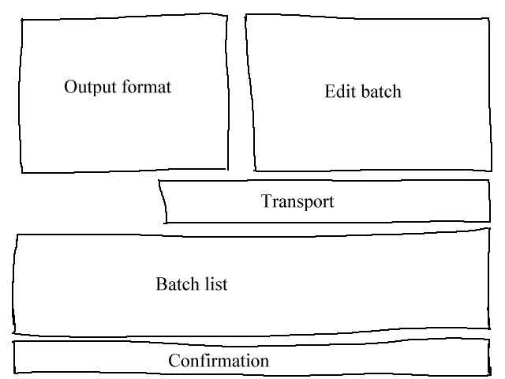
Recording window areas
Recording in Cinelerra is organized around batches. A batch
essentially defines a distinct output file for the recording. For now
you can ignore the batch concept entirely and record merely by hitting
the record button  .
.
The record button opens the current output file if it isn’t opened and
writes captured data to it. Use the stop button to stop the
recording. Recording can be resumed with the record button without
erasing the file at this point. In the case of a video file, there is
a single frame record button  which records a single
frame.
which records a single
frame.
When enough media is recorded, choose an insertion method from the
Insertion Strategy menu and hit close.
14.1 BATCHES
Now we come to the concept of batches. Batches try to make the dumb
I/O look more like a filesystem. Batches are traditionally used to
divide tape into different programs and save the different programs as
different files instead of recording straight through an entire tape.
Because of the high cost of developing frame-accurate deck control
mechanisms, the only use of batches now is recording different programs
during different times of day. This is still useful for recording TV
shows or time lapse movies as anyone who can’t afford proper appliances
knows.
The record window supports a list of batches and two recording modes:
interactive and batch recording. Interactive recording happens when
the record button is pressed. Interactive recording starts immediately
and uses the current batch to determine everything except start time.
By default, the current batch is configured to behave like tape.
Batch recording happens when the start button is pressed. In
batch recording, the start time is the time the batch starts
recording.
First, you’ll want to create some batches. Each batch has certain
parameters and methods of adjustment.
The record window has a notion of the current batch. The
current batch is not the same as the batch which is highlighted in the
batch list. The current batch text is colored red in the batch list.
The highlighted batch is merely displayed in the edit batch section for
editing.
By coloring the current batch red, any batch can be edited by
highlighting it, without changing the batch to be recorded.
All recording operations take place in the current batch. If there
are multiple batches, highlight the desired batch and hit
activate to make it the current batch. If the start
button is pressed, the current batch flashes to indicate it’s waiting
for the start time in batch mode. If the record button is
pressed, the current batch is recorded immediately in interactive mode.
In batch and interactive recording modes, when the current batch
finishes recording the next batch is activated and performed. All
future recording is done in batch mode. When the first batch finishes,
the next batch flashes until its start time is reached.
Interrupt either the batch or the interactive operation by hitting the
stop button.
Finally there is the  rewind button. In either
interactive or batch recording, the rewind button causes the current
batch to close its file. The next recording operation in the current
batch deletes the file.
rewind button. In either
interactive or batch recording, the rewind button causes the current
batch to close its file. The next recording operation in the current
batch deletes the file.
14.2 EDITING TUNER INFORMATION
Sometimes in the recording process and the configuration process,
you’ll need to define and select tuner channels to either record or
play back to. In the case of the Video4Linux and Buz recording
drivers, tuner channels define the source. When the Buz driver is also
used for playback, tuner channels define the destination.
Defining tuner channels is accomplished by pushing the  channel button. This brings up the channel editing window. In this
window you add, edit, and sort channels. Also, for certain video
drivers, you can adjust the picture quality.
channel button. This brings up the channel editing window. In this
window you add, edit, and sort channels. Also, for certain video
drivers, you can adjust the picture quality.
The add operation brings up a channel editing box. The title of
the channel appears in the channel list. The source of the channel is
the entry in the physical tuner’s frequency table corresponding to the
title.
Fine tuning in the channel edit dialog adjusts the physical frequency
slightly if the driver supports it. The norm and frequency table
together define which frequency table is selected for defining
sources. If the device supports multiple inputs, the input menu
selects these.
To sort channels, highlight the channel in the list and push move
up or move down to move it.
Once channels are defined, the source item in the record window
can be used to select channels for recording. The same channel
selecting ability also exists in the record monitor window. Be aware
channel selections in the record monitor window and the record window
are stored in the current batch.
For some drivers an option to swap fields may be visible. These
drivers don’t get the field order right every time without human
intervention. Toggle this to get the odd and even lines to record in
the right order.
15 IMPROVING PERFORMANCE
Let’s get one thing perfectly clear. Linux is not a very good
desktop. It’s a server. Most of what you’ll find on modern Linux
distributions are faceless, network-only programs strategicly designed
to counteract one Microsoft server feature or another and not to
perform very well at user interaction. There are a number of
parameters on Linux, which ordinary people can adjust to make it behave
more like a thoroughbred in desktop usage.
15.1 DISABLING SWAP SPACE
On systems with lots of memory, Cinelerra sometimes runs better without
a swap space. If you have 4 GB of RAM, you’re probably better off
without a swap space. If you have 512MB of RAM, you should keep the
swap. If you want to do recording, you should probably disable swap
space in any case. There’s a reason for this. Linux only allows half
the available memory to be used. Beyond that, it starts searching for
free pages to swap, in order to cache more disk access. In a 4 GB
system, you start waiting for page swaps after using only 2 GB.
The question then is how to make Linux run without a swap space.
Theoretically it should be a matter of running
Unfortunately, without a swap space the kswapd tasklet normally
spins at 100%. To eliminate this problem, edit linux/mm/vmscan.c.
In this file, put a line saying return 0; before it says
/*
* Kswapd main loop.
*/
Then recompile the kernel.
15.2 ENLARGING SOUND BUFFERS
In order to improve realtime performance, the audio buffers for all the
Linux sound drivers were limited from 128k to 64k. For recording audio
and video simultaneously and for most audio recording this causes
dropouts. Application of low latency and preemtible kernel patches
make it possible to record more audio recordings but it doesn’t improve
recording video with audio. This is where you need to hack the kernel.
To see if your sound buffers are suitable, run the included
soundtest program with nothing playing or recording. This
allocates the largest possible buffers and displays them. If the
TOTAL BYTES AVAILABLE is under 131072, you need to see about
getting the buffers enlarged in the driver. While many drivers differ,
we have a hack for at least one driver.
This only applies to the OSS version of the Soundblaster Live driver.
Since every sound card and every sound driver derivative has a
different implementation you’ll need to do some searching for other
sound cards. Edit linux/drivers/sound/emu10k1/audio.c
Where is says
change it to say
Where is says
for (i = 0; i < 8; i++)
for (j = 0; j < 4; j++)
change it to say
for (i = 0; i < 16; i++)
for (j = 0; j < 4; j++)
In linux/drivers/sound/emu10k1/hwaccess.h
Change
#define MAXBUFSIZE 65536
to
#define MAXBUFSIZE 262144
Finally, in linux/drivers/sound/emu10k1/cardwi.h
#define WAVEIN_MAXBUFSIZE 65536
to
#define WAVEIN_MAXBUFSIZE 262144
Then recompile the kernel modules.
15.3 FREEING MORE SHARED MEMORY
The Linux kernel only allows 32MB of shared memory to be allocated by
default. This needs to be increased to do anything useful. Run the
following command:
echo "0x7fffffff" > /proc/sys/kernel/shmmax
15.4 SPEEDING UP THE HARD DRIVE
This is a very popular command sequence among Linux gurus, which is not
done by default on Linux distributions.
hdparm -c3 -d1 -u1 -k1 /dev/hda
-c3 puts the hard drive into 32 bit I/O with sync. This normally
doesn’t work due to inept kernel support for most IDE controllers. If
you get lost interrupt or SeekComplete errors, quickly use -c0
instead of -c3 in your command.
-d1 enables DMA of course. This frees up the CPU partially during
data transfers.
-u1 allows multiple interrupts to be handled during hard drive
transactions. This frees up even more CPU time.
-k1 prevents Linux from resetting your settings in case of a
glitch.
15.5 DISABLING CRON
Linux runs some daily operations like compressing man pages. These may
be acceptable background tasks while compiling or word processing but
not while playing video. Disable these operations by editing
/etc/rc.d/init.d/anacron.
Put exit before the first line not beginning in #.
In /etc/rc.d/init.d/crond put exit before the first line not
beginning in #. Then make like Win 2000 and reboot.
You can’t use the at command anymore, but who uses that command
anyways?
15.6 REDUCING USB MOUSE SENSITIVITY
Gamers like high resolution mice, but this can be painful for precisely
positioning the mouse on a timeline or video screen. XFree86 once
allowed you to reduce PS/2 mouse sensitivity using commands like
xset m 1 1 but you’re out of luck with USB mice or KVM’s.
We have a way to reduce USB mouse sensitivity but it requires editing
the kernel source code. Even though USB mice have been supported for
years, the kernel source code for USB mice is constantly being
rewritten. These instructions were relevant for 2.6.12.3. Edit
/usr/src/linux/drivers/input/mousedev.c.
After the line saying
struct mousedev_hw_data {
put
#define DOWNSAMPLE_N 100
#define DOWNSAMPLE_D 350
int x_accum, y_accum;
Next, the section which says something like:
switch (code) {
case REL_X: mousedev->packet.dx += value; break;
case REL_Y: mousedev->packet.dy -= value; break;
case REL_WHEEL: mousedev->packet.dz -= value; break;
}
must be replaced by
switch (code) {
case REL_X:
mousedev->packet.x_accum += value * DOWNSAMPLE_N;
mousedev->packet.dx += (int)mousedev->packet.x_accum / (int)DOWNSAMPLE_D;
mousedev->packet.x_accum -= ((int)mousedev->packet.x_accum / (int)DOWNSAMPLE_D) * (int)DOWNSAMPLE_D;
break;
case REL_Y:
mousedev->packet.y_accum += value * DOWNSAMPLE_N;
mousedev->packet.dy -= (int)mousedev->packet.y_accum / (int)DOWNSAMPLE_D;
mousedev->packet.y_accum -= ((int)mousedev->packet.y_accum / (int)DOWNSAMPLE_D) * (int)DOWNSAMPLE_D;
break;
case REL_WHEEL: mousedev->packet.dz -= value; break;
}
Change the value of DOWNSAMPLE_N to change the mouse sensitivity.
15.7 ASSORTED X TWEEKS
XFree86 by default can’t display Cinelerra’s advanced pixmap rendering
very fast. The X server stalls during list box drawing. Fix this by
adding a line to your XF86Config* files.
In the Section "Device" area, add a line saying:
Option "XaaNoOffscreenPixmaps"
and restart the X server.
Screen blanking is really annoying, unless you’re fabulously rich and
can afford to leave your monitor on 24 hours a day without power saving
mode. In /etc/X11/xinit/xinitrc put
xset s off
xset s noblank
before the first if statement.
How about those windows keys which no Linux distribution even thinks to
use. You can make the window keys provide ALT functionality by editing
/etc/X11/Xmodmap. Append the following to it.
keycode 115 = Hyper_L
keycode 116 = Hyper_R
add mod4 = Hyper_L
add mod5 = Hyper_R
The actual changes to a window manager to make it recognize window keys
for ALT are complex. In FVWM at least, you can edit
/etc/X11/fvwm/system.fvwm2rc and put
Mouse 0 T A move-and-raise-or-raiselower
#Mouse 0 W M move
Mouse 0 W 4 move
Mouse 0 W 5 move
Mouse 0 F A resize-or-raiselower
Mouse 0 S A resize-or-raiselower
in place of the default section for moving and resizing. Your best
performance is going to be on FVWM. Other window managers seem to slow
down video with extra event trapping and aren’t as efficient in layout.
15.8 SPEEDING UP THE FILE SYSTEM
You’ll often store video on an expensive, gigantic disk array separate
from your boot disk. You’ll thus have to manually install an EXT
filesystem on this disk array, using the mke2fs command. By far
the fastest file system is
mke2fs -i 65536 -b 4096 my_device
tune2fs -r0 -c10000 my_device
This has no journaling, reserves as few blocks as possible for
filenames, and accesses the largest amount of data per block possible.
A slightly slower file system, which is easier to recover after power
failures is
mke2fs -j -i 65536 -b 4096 my_device
tune2fs -r0 -c10000 my_device
This adds a journal which slows down the writes but makes us immune to
power failures.
15.9 IMPROVING ZORAN VIDEO
Video recorded from the ZORAN inputs is normally unaligned or not
completely encoded on the right. This can be slightly compensated by
adjusting parameters in the driver sourcecode.
In /usr/src/linux/drivers/media/video/zr36067.c the structures
defined near line 623 affect alignment. At least for NTSC, the 2.4.20
version of the driver could be improved by changing
static struct tvnorm f60ccir601 = { 858, 720, 57, 788, 525, 480, 16 };
to
static struct tvnorm f60ccir601 = { 858, 720, 57, 788, 525, 480, 17 };
In /usr/src/linux/drivers/media/video/bt819.c more structures near
line 76 affect alignment and encoding.
For NTSC
{858 - 24, 2, 523, 1, 0x00f8, 0x0000},
could be changed to
{868 - 24, 2, 523, 1, 0x00f8, 0x0000},
Adjusting these parameters may or may not move your picture closer to
the center. More of the time, they’ll cause the driver to lock up
before capturing the first frame.
15.9.1 NEW IN 2.6.5
In the 2.6 kernels, the video subsystem was rewritten again from
scratch. To adjust the Zoran parameters go to
drivers/media/video/zoran_card.c and look for a group of lines like
static struct tvnorm f50sqpixel = { 944, 768, 83, 880, 625, 576, 16 };
static struct tvnorm f60sqpixel = { 780, 640, 51, 716, 525, 480, 12 };
static struct tvnorm f50ccir601 = { 864, 720, 75, 804, 625, 576, 18 };
static struct tvnorm f60ccir601 = { 858, 720, 57, 788, 525, 480, 16 };
static struct tvnorm f50ccir601_lml33 = { 864, 720, 75+34, 804, 625, 576, 18 };
static struct tvnorm f60ccir601_lml33 = { 858, 720, 57+34, 788, 525, 480, 16 };
/* The DC10 (57/16/50) uses VActive as HSync, so HStart must be 0 */
static struct tvnorm f50sqpixel_dc10 = { 944, 768, 0, 880, 625, 576, 0 };
static struct tvnorm f60sqpixel_dc10 = { 780, 640, 0, 716, 525, 480, 12 };
/* FIXME: I cannot swap U and V in saa7114, so i do one
* pixel left shift in zoran (75 -> 74)
* (Maxim Yevtyushkin <max@linuxmedialabs.com>) */
static struct tvnorm f50ccir601_lm33r10 = { 864, 720, 74+54, 804, 625, 576, 18 };
static struct tvnorm f60ccir601_lm33r10 = { 858, 720, 56+54, 788, 525, 480, 16 };
These seem to control the image position. At least for the LML33 the
following definition for f60ccir601_lml33 does the trick.
static struct tvnorm f60ccir601_lml33 = { 858, 720, 67+34, 788, 525, 480, 13 };
16 TROUBLESHOOTING
16.1 BUZ DRIVER CRASHES
First, Zoran capture boards must be accessed using the Buz video
driver in Preferences->Recording and Preferences->Playback.
Some performance tweeks are available in another section.
See IMPROVING PERFORMANCE.
Once tweeked, the Buz driver seems to crash if the number of recording
buffers is too high. Make sure Preferences->Recording->Frames to
buffer in device is below 10.
16.2 DRAGGING IN AND OUT POINTS DOESN’T WORK
Sometimes there will be two edits really close together. The point
selected for dragging may be next to the indended edit on an edit too
small to see at the current zoom level. Zoom in horizontally.
16.3 LOCKING UP WHEN LOADING FILES
The most common reason loading files locks up is because the codec
isn’t supported. Another reason is because Cinelerra is building
picons for the Resources window. If you load a large number of images,
it needs to decompress every single image to build a picon. Go into
settings->preferences->interface and disable Use thumbnails in
resource window to skip this process.
16.4 SYNCHRONIZATION LOST WHILE RECORDING
If the framerate of the recording is much lower than the framerate of
the source, the video will accumulate in the recording buffers over
time while the audio and video are well out of sync. Decrease the
number of frames to buffer in the device in
preferences->recording so the excess frames are dropped instead of
buffered.
16.5 APPLYING LINEARIZE FOLLOWED BY BLUR DOESN’T WORK
The linearize effect uses the pow function while the blur effect uses a
number of exp functions in the math library. For some reason, using
the pow function breaks later calls to the exp functions in the math
library. You need to apply linearize after blur to get it to work.
17 SECRETS OF CINELERRA
In this section, you’ll find ways to apply Cinelerra to common
problems. Other sections are arranged in order of the tools and what
the tools are used for. This section is arranged in order of the
problems and what tools are used to solve the problems.
17.1 DOLBY PRO LOGIC ENCODING
Dolby pro logic is an easy way to output 6 channel audio from a 2
channel soundcard with degraded but useful results. Rudimentary Dolby
pro logic encoding can be achieved with clever usage of the effects.
Create 2 audio tracks with the same audio. Apply invert audio to
one track. The signal comes out of the back speakers.
Create a single audio track with monaural audio of a different source.
Center it in the pan control. The signal comes out of the center
speaker.
Create other tracks with different signals and pan them left or right
to put signals in the front left or right speaker.
Finally, if a copy of the signal in the back speakers is desired in any
single front speaker, the signal in the back speakers must be delayed
by at least 0.05 seconds and a single new track should be created. Pan
the new track to orient the signal in the front speakers.
If the same signal is desired in all the speakers except the center
speaker, delay the back speakers by 0.5 seconds and delay either the
front left or front right by 0.2 seconds.
If you want to hear something from the subwoofer, create a new track,
select a range, drop a synthesizer effect, and set the frequency below
60 Hz. The subwoofer merely plays anything below around 60Hz.
Other tricks you can perform to separate the speakers are parametric
equalization to play only selected ranges of frequencies through
different speakers and lowpass filtering to play signals through the
subwoofer.
17.2 ANALOG TV CLEANING
Unless you live in a rich nation like China or are a terrorist, you
probably record analog TV more than you record digital TV. The picture
quality on analog TV is horrible but you can do things in Cinelerra to
make it look more like it did in the studio.
First, when capturing the video, capture it in the highest resolution
possible. For Europeans it’s 720x576 and for Americans it’s 720x480.
Don’t bother adjusting the brightness or contrast in the recording
monitor, although maxing out the color is useful. Capture it using
MJPEG or uncompressed Component Video if possible. If those are too
demanding, then capture it using JPEG. RGB should be a last resort.
Now on the timeline use Settings->Format to set a YUV colorspace.
Drop a Downsample effect on the footage. Set it for
Horizontal: 2
Horizontal offset: 0
Vertical: 2
Vertical offset: 0
red
x green
x blue
alpha
Use the camera tool to shift the picture up or down a line to remove
the most color interference from the image. This is the difference
we’re looking for:
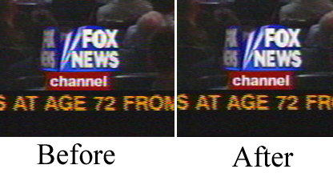
If you have vertical blanking information or crawls which constantly
change in each frame, block them out with the Mask tool. This
improves compression ratios.
This is about all you can do without destroying more data than you
would naturally lose in compression. The more invasive cleaning
techniques involve deinterlacing.
17.3 DEFEATING INTERLACING
Interlacing is done on most video sources because it costs too much to
build progressive scanning cameras and progressive scanning CRT’s.
Many a consumer has been dissapointed to spend 5 paychecks on a
camcorder and discover what horrible jagged images it produces on a
computer monitor.
As for progressive scanning camcorders, forget it. Cost factors are
probably going to keep progressive scanning cameras from ever equalling
the spatial resolution of interlaced cameras. Interlacing is here to
stay. That’s why they made deinterlacing effects in Cinelerra.
We don’t believe there has ever been a perfect deinterlacing effect.
They’re either irreversible or don’t work. Cinelerra cuts down the
middle by providing deinterlacing tools that are irreversible sometimes
and don’t work sometimes but are neither one or the other.
Line Doubling
This one is done by the Deinterlace effect when set to Odd
lines or Even lines. When applied to a track it reduces the
vertical resolution by 1/2 and gives you progressive frames with
stairstepping. This is only useful when followed by a scale effect
which reduces the image to half its size.
Line averaging
The Deinterlace effect when set to Average even lines or
Average odd lines does exactly what line doubling does except
instead of making straight copies of the lines it makes averages of the
lines. This is actually useful for all scaling.
There’s an option for adaptive line averaging which selects which lines
to line average and which lines to leave interlaced based on the
difference between the lines. It doesn’t work.
Inverse Telecine
This is the most effective deinterlacing tool when the footage is an
NTSC TV broadcast of a film. See INVERSE TELECINE.
Time base correction
The first three tools either destroy footage irreversibly or don’t work
sometimes. Time base correction is last because it’s the perfect
deinterlacing tool. It leaves the footage intact. It doesn’t reduce
resolution, perceptually at least. It doesn’t cause jittery timing.
The Frames to Fields effect converts each frame to two frames, so
it must be used on a timeline whose project frame rate is twice the
footage’s frame rate. In the first frame it puts a line averaged copy
of the even lines. In the second frame it puts a line averaged copy of
the odd lines. When played back at full framerates it gives the
illusion of progressive video with no loss of detail.
Best of all, this effect can be reversed with the Fields to frames
effect. That one combines two frames of footage back into the one
original interlaced frame of half the framerate.
Be aware that frames to fields inputs frames at half the framerate as
the project. Effects before frames to fields process at the reduced
framerate.
Unfortunately, the output of Frames to Fields can’t be compressed
as efficiently as the original because it introduces vertical twitter
and a super high framerate.
Interlaced 29.97fps footage can be made to look like film by applying
Frames to Fields and then reducing the project frame rate of the
resulting 59.94fps footage to 23.97fps. This produces no timing jitter
and the occasional odd field gives the illusion of more detail than
there would be if you just line averaged the original.
HDTV exceptions
1920x1080 HDTV is encoded a special way. If it’s a broadcast of
original HDTV film, an inverse telecine works fine. If it’s a
rebroadcast of a 720x480 source, you need to use a time base and line
doubling algorithm to deinterlace it, See 1080 TO 480.
17.4 MAKING VIDEO LOOK LIKE FILM
Video sweetening is constantly getting better. Lately the best thing
you can do for dirt cheap consumer camcorder video is to turn it into
progressive 24fps output. While you can’t really do that, you can get
pretty close for the money. Mind you, this procedure can degrade high
quality video just as easily as it improves low quality video. It
should only be used for low quality video.
-
Step 1 - Set project framerate to twice the video framerate.
-
Step 2 - Apply a Sharpen effect. Set it to sharpness: 25, no
interlacing, and horizontal only.
-
Step 3 - Drop a Frame to Fields effect on the same track. Set
Average Empty Rows on and play through the video a few times to figure
out which field is first. If the wrong field is first, the motion is
shaky. Secondly, any editing in the doubled frame rate may now screw
up the field order. We’re still figuring out the easiest way to
support warnings for field glitches but for now you need to go back to
the normal framerate to do editing or play test to make sure the fields
are right.
-
Step 4 - Render just the video to the highest quality file possible.
-
Step 5 - Import the video back to a new track. Set the project
framerate to 24. The new track should now display more filmish and
sharper images than the original footage.
This entire procedure could be implemented in one nonrealtime effect,
but the biggest problem with that is you’ll most often want to keep the
field based output and the 24fps output for posterity. A nonrealtime
effect would require all that processing just for the 24fps copy.
Still debating that one.
17.5 CLEARING OUT HAZE
Let’s face it, if you’re employed you live in Silicon Valley. As such
you probably photograph a lot of haze and never see blue sky ever.
Even if you can afford to briefly go somewhere where there is blue sky,
horizon shots usually can stand for more depth. This is what the
gradient effect is for.
Drop the gradient effect on hazy tracks. Set the following parameters:
Angle: 0
Inner radius: 0
Outer radius: 40
Inner color: blue 100% alpha
Outer color: blue 0% alpha
It’s important to set the 0% alpha color to blue even though it’s 0%
alpha. The color of the outer alpha is still interpolated with the
inner color. This is a generally applicable setting for the gradient.
Some scenes may work better with orange or brown for an evening feel.
17.6 MAKING A DVD
A single chapter DVD
Make a single chapter DVD by rendering video to an MPEG video file.
The video should be 720x480, 29.97fps. The aspect ratio should be 16x9
or 4x3.
Use the YUV 4:2:0 color model and DVD preset. Set the bitrate to the
desired bitrate. It’s not clear exactly what other parameters the MPEG
encoder uses in the DVD preset but we’ve enabled the following:
Derivative: MPEG-2
Fixed bitrate
I frame distance: 15
P frame distance: 0
Sequence start codes in every GOP
Render the audio to an AC3 audio file. Any bitrate can be used.
Dvdrtools must be downloaded to generate the actual DVD
filesystem. The actual usage of dvdrtools changes frequently but
currently it involves the mkisofs and ifogen programs. Mkisofs is
built automatically in dvdrtools but ifogen may have to be built
manually by entering the video directory and running make
ifogen. Mkisofs and ifogen must be put into /usr/bin manually.
Also, the mplex program from mjpegtools must be installed. The
mjpegtools package is built in the hvirtual distribution and the mplex
utility may be extracted from there.
Given the files audio.ac3 and video.m2v, rendered by Cinelerra, the
following commands pack them into a dvd readable by commercial
appliances.
mplex -M -f 8 -o final.mpg audio.ac3 video.m2v
mkdir -p dvd/VIDEO_TS
ifogen final.mpg -o dvd
ifogen -T -o dvd
mkisofs -dvd-video -udf -o dvd.iso dvd/
Chapters may be set with the following. The units are seconds. Version
0.3.1 ignores the 1st chapter, so it has to be specified as 0.
ifogen -o dvd --chapters=0,0021.788,0047.447,0077.043 final.mpg
Replace the chapter times.
dvd.iso can be burned directly to a DVD with the following:
dvdrecord -ignsize -dao -v dev=/dev/hdc fs=67108864 dvd.iso
The argument to dev= is the IDE device of the DVD drive. Burning DVD’s
through SCSI is currently not supported.
17.7 MAKING A RINGTONE
This is how we made ringtones for the low end Motorola V180’s and it’ll
probably work with any new phone. Go to File->Load files... and
load a sound file with Insertion strategy: Replace current
project. Go to Settings->Format change Channels to 1 and
Samplerate to 16000 or 22050.
Either highlight a region of the timeline or set in/out points to use
for the ringtone. To improve sound quality on the cell phone, you need
the maximum amplitude in as many parts of the sound as possible. Right
click on track Audio 1 and select Attach effect... Highlight the
Compressor effect and hit Attach in the attachment popup.
Make sure the insertion point or highlighted area is in the region with
the Compressor effect. Right click on track Audio 2 and select
Attach effect... Highlight Audio 1: Compressor and hit
Attach. Click the Audio1 Compressor’s magnifying glass
to bring up the compressor GUI.
Set the following parameters:
Reaction secs: -0.1
Decay secs: 0.1
Trigger Type: Total
Trigger: 0
Smooth only: No
Click Clear to clear the graph. Click anywhere in the
grid area and drag a new point to 0 Output and -50 Input. The graph
should look like this.
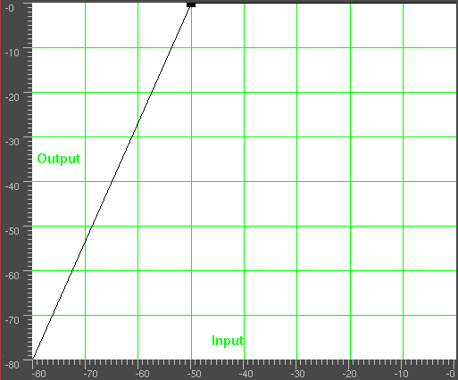
Go to File->Render. Specify the name of an mp3 file to output to.
Set the file format to MPEG Audio. Click the wrench
for Audio and set Layer to III and Kbits per second to
24 or 32. Check Render audio tracks and uncheck Render
video tracks. Hit OK to render the file.
The resulting .mp3 file must be uploaded to a web server. Then, the
phone’s web browser must download the .mp3 file directly from the URL.
There also may be a size limit on the file.
17.8 TIME STRETCHING AUDIO
It may appear that time stretching audio is a matter of selecting a
region of the audio tracks, enabling recording for the desired tracks,
going to Audio->Render Effect, and applying Time Stretch. In
actuality there are 3 audio effects for time stretching: Time
Stretch, Resample, and Asset info dialog.
Time Stretch applies a fast fourier transform to try to change the
duration without changing the pitch, but this introduces windowing
artifacts to the audio. It’s only useful for large changes in time
because obvious changes in duration make windowing artifacts less
obtrusive.
For smaller changes in duration, in the range of 5%, Resample
should be used. This changes the pitch of the audio but small enough
changes aren’t noticable. Resample doesn’t introduce any windowing
artifacts, so this is most useful for slight duration changes where the
listener isn’t supposed to know what’s going on.
Another way to change duration slightly is to go to the Resources
window, highlight the media folder, right click on an audio file,
click on Info. Adjust the sample rate in the Info dialog to
adjust the duration. This method also requires left clicking on the
right boundary of the audio tracks and dragging left or right to
correspond to the length changes.
17.9 PITCH SHIFTING AUDIO
Like the time stretching methods, there are three pitch shifting
methods: Pitch shift, Resample, and Asset info dialog.
Pitch shift is a realtime effect which can be dragged and dropped onto
recordable audio tracks. Pitch shift uses a fast fourier transform to
try to change the pitch without changing the duration, but this
introduces windowing artifacts.
Because the windowing artifacts are less obtrusive in audio which is
obvously pitch shifted, Pitch shift is mainly useful for extreme pitch
changes. For mild pitch changes, use Resample from the
Audio->Render Effect interface. Resample can change the pitch
within 5% without a noticable change in duration.
Another way to change pitch slightly is to go to the Resources
window, highlight the media folder, right click on an audio file,
click on Info. Adjust the sample rate in the Info dialog to
adjust the pitch. This method also requires left clicking on the right
boundary of the audio tracks and dragging left or right to correspond
to the length changes.
17.10 TEXT TO MOVIE
Text to movie was added when another one of those startups whose name
was an unmemorable combination of farting noises that the venture
capitalist heard, started charging money for a ridulously simple program
that converted scripts directly to movies. It was such a simple
program, we decided to add most of the functionality to Cinelerra.
The easiest way to make a movie is to copy tests/text2movie and
tests/text2movie.xml as a starting point. Load the
text2movie.xml file to see the movie.
The text2movie file acts like a normal asset, except changes to it
are immediately reflected on the timeline, without reloading. Also, the
length is infiinite. Edit the text2movie file to change the
script. If the length of the movie increases, drag the right edit
handle to extend the edit or use edit->edit length.
1 audio channel is created for every character. The frame rate, sample
rate, and frame size are fixed. Get it from the asset window.
Right click on the asset and go to Asset info... Camera angles are
fixed.
Since its only use was to show dialog between 2 people, that’s the
functionality we focused on. The character model and voice is selected
separately in the script, because that was how it was done with the fee
service. The models are defined in model files, in the Cinelerra
executable directory. Usually /opt/cinelerra/models.
There is a search path for models, starting with the directory the
script is in. You can define new models for the script, without
affecting the entire system. The model files are the exact name that
appears in the script. They define the total size of the model and the
images used in the model.
The models are 2D png images, because all the animations are baked. No
custom movement is currently supported, that would require a 3D
renderer.
Some actions are implemented. Character2 can cut off character1 if
character1’s dialog ends in ...
Inserting [pause] anywhere causes the character to pause. Useful
for adjusting the timing of dialog.
Speech synthesis is pretty lousy. Punctuation and spelling needs to be
adjusted based on the sound. The dialog is rendered on-demand, so there
is a delay when each character starts to speak. Split dialog into
shorter blocks to reduce the delay.
18 SECRETS OF CINELERRA EFFECTS
Most effects in Cinelerra can be figured out just by using them and
tweeking. Here are brief descriptions of effects which you might not
utilize fully by mere experimentation.
18.1 1080 TO 480
Most TV broadcasts are recieved with a 1920x1080 resolution but
originate from a 720x480 source at the studio. It’s a waste of space
to compress the entire 1920x1080 if the only resolvable details are
720x480. Unfortunately resizing 1920x1080 video to 720x480 isn’t as
simple as shrinking it.
At the TV station the original 720x480 footage was first converted to
fields of 720x240. Each field was then scaled up to 1920x540. The two
1920x540 fields were finally combined with interlacing to form the
1920x1080 image. This technique allows a consumer TV to display the
resampled image without extra circuitry to handle 720x480 interlacing
in a 1920x1080 image.
If you merely deinterlaced the 1920x1080 images, you would end up with
resolution of 720x240. The 1080 to 480 effect properly extracts
two 1920x540 size fields from the image, resizes them separately, and
combines them again to restore a 1920x480 interlaced image. The
scale effect must then be applied to reduce the horizontal size to
960 or 720 depending on the original aspect ratio.
The tracks to which 1080 to 480 is applied need to be at 1920x1080
resolution. The project settings in settings->format should be at
least 720x480 resolution.
The effect doesn’t know if the first row in the 1920x1080 image belongs
to the first row of the 720x480 original. You have to specify what the
first row is in the effect configuration.
The output of this effect is a small image in the middle of the
original 1920x1080 frame. Use the projector to center the output image
in the playback.
Finally, once you have 720x480 interlaced video you can either apply
frames to fields of inverse telecine to further recover original
progressive frames.
18.2 CHROMA KEY
This effect erases pixels which match the selected color. They are
replaced with black if there is no alpha channel and transparency if
there is an alpha channel. The selection of color model is important
to determine the behavior.
Chroma key uses either the lightness or the hue to determine what is
erased. Use value singles out only the lightness to determine
transparency. Select a center color to erase using the Color
button. Alternatively a color can be picked directly from the output
frame by first using the color picker in the compositor window and
then selecting the Use color picker button. This sets the chroma
key color to the current color picker color.
Be aware that the output of the chroma key is fed back to the
compositor, so selecting a color again from the compositor will use the
output of the chroma key effect. The chroma key should be disabled
when selecting colors with the color picker.
If the lightness or hue is within a certain threshold it’s erased.
Increasing the threshold determines the range of colors to be erased.
It’s not a simple on/off switch, however. As the color approaches the
edge of the threshold, it gradually gets erased if the slope is high or
is rapidly erased if the slope is low. The slope as defined here is
the number of extra values flanking the threshold required to go from
opaque to transparent.
Normally threshold is very low when using a high slope. The two
parameters tend to be exclusive because slope fills in extra threshold.
The slope tries to soften the edges of the chroma key but it doesn’t
work well for compressed sources. A popular softening technique is to
use a maximum slope and chain a blur effect below the chroma key effect
to blur just the alpha.
18.3 COMPRESSOR
Contrary to computer science experience, the audio compressor does not
reduce the amount of data required to store the audio. The audio
compressor reduces the dynamic range of the audio. In Cinelerra the
compressor actually performs the function of an expander and
compressor.
The compressor works by calculating the maximum sound level within a
certain time period of the current position. The maximum sound level
is taken as the input sound level. For every input sound level there
is an output sound level specified by the user. The gain at the
current position is adjusted so the maximum sound level in the time
range is the user specified value.
The compressor has a graph which correlates every input sound level to
an output level. The horizontal direction is the input sound level in
dB. The vertical direction is the ouptut sound level in dB. The user
specifies output sound levels by creating points on the graph. Click
in the graph to create a point. If 2 points exist, drag one point
across another point to delete it. The most recent point selected has
its vales displayed in textboxes for more precise adjustment.
To make the compressor reduce the dynamic range of the audio, make all
the output values greater than the input values except 0 db. To make
the compressor expand the dynamic range of the audio, make all the
output values except 0 db less than the input values. The algorithm
currently limits all sound levels above 0 db to 0 db so to get an
overloaded effect put a gain effect before the compressor to reduce all
the levels and follow it with another gain effect to amplify all the
levels back over 0 db.
Reaction secs: This determines where in relation to the current
position the maximum sound level is taken and how fast the gain is
adjusted to reach that peak. It’s notated in seconds. If it’s
negative the compressor reads ahead of the current position to get the
future peak. The gain is ramped to that peak over one reaction time.
This allows it to hit the desired output level exactly when the input
peak occurs at the current position.
If the reaction time is positive the compressor scans only the current
position for the gain and ramps gain over one reaction time to hit the
desired output level. It hits the output level exactly one reaction
time after detecting the input peak.
Decay secs: If the peak is higher than the current level, the
compressor ramps the gain up to the peak value. Then if a future peak
is less than the current peak it ramps the gain down. The time taken
to ramp the gain down can be greater than the time taken to ramp the
gain up. This ramping down time is the decay seconds.
Trigger type: The compressor is a multichannel effect. Several
tracks can share one compressor. How the signal from many tracks is
interpreted is determined by the trigger type.
The Trigger trigger type uses the value supplied in the Trigger
textbox as the number of the track to use as input for the compressor.
This allows a track which isn’t even heard to determine the loudness of
the other tracks.
The Maximum trigger takes the loudest track and uses it as the
input for the compressor.
The Total trigger type adds the signals from all the tracks and
uses the total as the input for the compressor. This is the most
natural sounding compression and is ideal when multiple tracks are
averaged into single speakers.
Trigger: The compressor is a multichannel effect. Several tracks
can share one compressor. Normally only one track is scanned for the
input peak. This track is specified by the Trigger. By sharing
several tracks and playing with the trigger value, you can make a sine
wave on one track follow the amplitude of a drum on another track for
example.
Smooth only: For visualizing what the compressor is doing to the
soundlevel, this option causes it to replace the soundwave with just
the current peak value. It makes it very easy to see how reaction
secs affects the detected peak values.
18.4 DECIMATE
This effect drops frames from a track which are most similar in order
to reduce the frame rate. This is usually applied to a DVD to convert
the 29.97 fps video to the 23.97 fps film rate but this decimate effect
can take any input rate and convert it to any lower output rate.
The output rate of decimate is the project frame rate. The input
rate is set in the decimate user interface. To convert 29.97fps
progressive video to 23.97fps film, apply a decimate effect to the
track. Set the decimate input rate to 29.97 and the project rate to
23.97.
Be aware every effect layered before decimate processes video at the
decimate input rate and every effect layered after decimate processes
video at the project frame rate. Computationally intensive effects
should come below decimate.
18.5 DEINTERLACE
The deinterlace effect has evolved over the years to deinterlacing and
a whole lot more. In fact two of the deinterlacing methods, Inverse
Telecine and Frames to Fields, are separate effects. The
deinterlace effect offers several variations of line replication to
eliminate comb artifacts in interlaced video. It also has some line
swapping tools to fix improperly captured video or make the result of a
reverse effect display fields in the right order.
18.6 DIFFERENCE KEY
The differency key creates transparency in areas which are similar
between 2 frames. The Difference key effect must be applied to 2
tracks. One track contains the action in front of a constant
background and another track contains the background with nothing in
front of it. Apply the difference key to the track with the action and
apply a shared copy of it to the track with the background. The track
with the background should be muted and underneath the track with the
action and the colormodel should have an alpha channel.
Pixels which are different between the background and action track are
treated as opaque. Pixels which are similar are treated as
transparent. Change threshold in the differency key window to make
more pixels which aren’t the same color transparent. Change slope
to change the rate at which the transparency tapers off as pixels get
more different.
The slope as defined here is the number of extra values flanking the
threshold required to go from opaque to transparent. A high slope is
more useful with a low threshold because slope fills in extra
threshold.
Use value causes the intensity of pixels to be compared instead of
the color.
Applying a blur to the top track with just the alpha channel blurred
can soften the transparency border.
18.7 FIELDS TO FRAMES
This effects reads frames at twice the project framerate, combining 2
input frames into a single interlaced output frame. Effects preceeding
fields to frames process frames at twice the project frame rate.
Each input frame is called a field.
Fields to frames needs to know what field corresponds to what lines
in the output frame. The easiest way to figure it out is to try both
options in the window. If the input fields are the result of a line
doubling process like frames to fields, the wrong setting results
in blurrier output. If the input fields are the result of a standards
conversion process like 1080 to 480, the wrong setting won’t make
any difference.
The debobber which converts 720x480 interlaced into 1920x1080
interlaced or 1280x720 progressive seems to degrade the vertical
resolution to the point that it can’t be recovered.
18.8 FREEZE FRAME
In its simplest form, highlight a region of the track to freeze, drop
the freeze frame effect on the highlighted region, and the lowest
numbered frame in the affected area will play throughout the entire
region.
Freezeframe has an enabled option which can be keyframed. Regions
of a freeze frame effect which are enabled repeat the lowest numbered
frame since the last keyframe. This has unique possibilities.
If a freeze frame effect has a keyframe in the middle of it set to
enabled, the frame in the middle is repeated in the entire effect.
If a freeze frame effect has several keyframes, each set to
enabled, every time a keyframe is encountered the frame under it
becomes the frozen one.
If a freeze frame effect alternates between enabled and
disabled, each time an enabled keyframe is encountered the
frame under it is replicated until the next disabled keyframe. The
disabled regions play through.
18.9 HISTOGRAM
This shows the number of occurances of each color on a histogram plot.
It is always performed in floating point RGB regardless of
the project colorspace. The histogram has two sets of transfer
parameters: the input transfer and the output transfer.
4 histograms are possible in the histogram viewer. The red, green,
blue histograms show the input histograms for red, green, blue and
multiply them by an input transfer to get the output red, green, blue.
Then the output red, green, blue is scaled by an output transfer. The
scaled red, green, blue is converted into a value and plotted on the
value histogram. The value histogram thus changes depending on the
settings for red, green, blue. The value transfers are applied
uniformly to R, G, B after their color transfers are applied.
Select which transfer to view by selecting one of the channels on the
top of the histogram.
The input transfer is defined by a graph overlaid on the histogram.
The horizontal direction corresponds to every possible input color.
The vertical direction corresponds to the output color for every input
color. Video entering the histogram is first plotted on the histogram
plot, then it is translated so output values now equal the output
values for each input value on the input graph.
The input graph is edited by adding and removing any number of points.
Click and drag anywhere in the input graph to create a point and move
it. Click on an existing point to make it active and move it. The
active point is always indicated by being filled in. The active
point’s input and output color are given in text boxes on top of the
window. The input and output color of the point can be changed through
these text boxes.
Points can be deleted by first selecting a point and then dragging it
to the other side of an adjacent point. They can also be deleted by
selecting them and hitting delete.
After the input transfer, the image is processed by the output
transfer. The output transfer is simply a minimum and maximum to scale
the input colors to. Input values of 100% are scaled down to the
output’s maximum. Input values of 0% are scaled up to the output
minimum.
Input values below 0 are always clamped to 0 and input values above
100% are always clamped to 100%. Click and drag on the output
gradient’s triangles to change it. It also has textboxes to enter
values into.
Enable the automatic toggle to have the histogram calculate an
automatic input transfer for the red, green, blue but not the value.
It does this by scaling the middle 99% of the pixels to take 100% of
the histogram width. The number of pixels permitted to pass through is
set by the Threshold textbox. A threshold of 0.99 scales the input
so 99% of the pixels pass through. Smaller thresholds permit fewer
pixels to pass through and make the output look more contrasty.
Automatic input transfer is calculated for the R, G, and B channels but
not the value.
PLOT HISTOGRAM
SPLIT OUTPUT
18.10 INVERSE TELECINE
This is the most effective deinterlacing tool when the footage is a
video transfer of a film. Here the film was converted from 24fps to
60fps. Then the 60fps was downsampled to 30fps by extracting odd and
even lines and interlacing the lines. The IVTC effect is primarily a
way to convert interlaced video to progressive video. It undoes three
patterns of interlacing.
A AB BC CD D
AB CD CD DE EF
Automatic
The first two options are fixed patterns and affected by the pattern
offset and odd field first parameters. The last option creates
several combinations of lines for each frame and picks the most
progressive combination. It’s a brute force algorithm.
This technique doesn’t rely on a pattern like other techniques and is
less destructive but the timing is going to be jittery because of the
lack of a frame rate reduction. In order to smooth out the timing, you
need to follow inverse telecine with a decimate effect.
18.11 INTERPOLATE VIDEO
The interpolate video effect tries to create the illusion of a higher
frame rate from source footage of very low framerates by averaging
frames over time. It averages two input frames for each output frame.
The input frames are at different times, resulting in a dissolve for
all output frames between the input frames. There are two ways of
specifying the input frames. You can specify an input frame rate which
is lower than the project frame rate. This causes input frames to be
taken at even intervals,
You can also specify keyframe locations as the positions of the input
frames. In this mode the output frame rate is used as the input frame
rate and you just create keyframes wherever you want to specify an
input frame.
18.12 LENS
The lens affect stretches or shrinks to convert lens distorted images to
rectilinear images. The most common use is converting fish eye lenses
to rectilinear lenses. It is also useful for star tracking.
R, G, B, A Field of view: These determine how much the image is
stretched in each channel.
Lock: This causes changes to 1 channel to affect all the channels.
This is normally the desired behavior.
Aspect Ratio: This changes the amount of stretching done in the X
axis vs the Y axis. To crop less data from stretched images, this
allows more stretching to be done on 1 axis without creating black
borders in the other axis.
Radius: This determines the size of the stretched region. While
adjusting the field of view, black borders may appear. Adjust the
radius to shrink or expand the output so black borders are out of
frame.
Center X, Y: The center of the stretched region. This is only
useful if the image was previously translated by the software so the
center of the lens is now off center.
Draw center: This is a visual aid when adjusting the Center X, Y
but doesn’t affect the results.
Mode: The type of stretching algorithm.
- Sphere shrink: This is for making an image look like it’s mapped to a sphere.
- Sphere expand: This is for unmapping an image mapped to a sphere and
flattening it.
- Rectilinear Stretch: This is for flattening a fish eye lens.
- Rectilinear Shrink: This is for making something flat look like it
was taken by a fish eye lens.
18.13 LINEARIZE
Raw camera images store colors in a logarithmic scale. The blacks in
these images are nearly 0 and the whites are supposed to be infinity.
The graphics card and most video codecs store colors in a linear scale
but Cinelerra keeps raw camera images in their original logarithmic
scale when it renders them. This is necessary because the raw image
parser can’t always decode the proper gamma values for the images. It
also does its processing in 16 bit integers, which takes away a lot of
information.
The linearize effect converts the logarithmic colors to linear colors
through a gamma value and a maximum value. The gamma value determines
how steep the output curve is and the maximum value is where 1.0 in the
output corresponds to maximum brightness in the input.
The linearize effect has 2 more parameters to simplify gamma
correction. The automatic option causes it to calculate max
from the histogram of the image. Use this when making a preview of a
long list of images since it changes for every image.
The use color picker option uses the value currently in the color
picker to set the max value. Note that every time you pick a color
from the compositor window, you need to hit use color picker to
apply the new value.
18.14 LIVE AUDIO
This effect reads audio directly from the soundcard input. It replaces
any audio on the track so it’s normally applied to an empty track.
To use Live Audio, highlight a horizontal region of an audio track or
define in and out points. Then drop the Live Audio effect into it.
Create extra tracks and attach shared copies of the first Live Audio
effect to the other tracks to have extra channels recorded.
Live Audio uses the sound driver selected in
Settings->Preferences->Playback->Audio Out for recording, but
unlike recording it uses the playback buffer size as the recording
buffer size and it uses the project sample rate as the sampling
rate.
These settings are critical since some sound drivers can’t record in
the same sized buffer they play back in. Live audio has been most
reliable when ALSA is the recording driver and the playback fragment
size is 2048.
Drop other effects after Live Audio to process soundcard input in
realtime.
Now the bad news. With live audio there is no readahead so effects
like compressor will either delay if they have readahead enabled or
playback will underrun.
Another problem is sometimes the recording clock on the soundcard is
slightly slower than the playback clock. The recording eventually
falls behind and playback sounds choppy.
Finally, live audio doesn’t work in reverse.
18.15 LIVE VIDEO
This effect reads video directly from the capture card input. It
replaces any video on the track so it’s normally applied to an empty
track. The configuration for the capture card is taken from the
recording preferences. Go to Settings->Preferences->Recording to
set up the capture card.
Go to the Video In section where it says Record driver. It
must be set to either Video4Linux2 or IEC 61883. Other video
drivers haven’t been tested with Live Video and probably won’t work.
For live video, the selection for File Format and Video needs
to be set to a format the timeline can use. The file format must be
Quicktime for Linux and video recording must be enabled for it.
Click on the wrench to set the video compression.
The video compression depends on the recording driver. For the
Video4Linux2 recording driver, the compression must be Motion
JPEG A. For the IEC 61883 driver, the compression must be
DV. This gets the driver to generate output in a colormodel that
the timeline can use.
Some cards provide color and channel settings. Live video takes the
color settings from the values set in the Video In window. Go to
File->Record to bring up the recording interface and the Video In
window. Values set in the Video in window are used by Live
Video. Any channels the capture card supports need to be configured
in the Video in interface since the same channels are used by the
Live Video effect.
With the video recording configured, highlight a horizontal region of a
video track or define in and out points. Then drop the Live Video
effect into it. Drop other effects after Live Video to process the
live video in realtime. For best results, you should use OpenGL and a
video card which supports GL shading language. Go to
Settings->Preferences->Playback->Video Out to enable the OpenGL
driver.
Only one Live Video effect can exist at any time on the timeline. It
can’t be shared by more than one track.
18.16 LOOP
Sections of audio or video can be looped by dropping a loop effect
on them. Contrary to the the settings->loop playback option, the
loop effects can be rendered where the settings->loop playback
option can not be. The loop effects are also convenient for short
regions.
The loop effects have one option: the number of frames or
samples to loop. This specifies the length of the region to loop
starting from either the beginning of the effect or the latest
keyframe. The region is replicated for the entire effect.
Every time a keyframe is set in a loop effect, the keyframe becomes the
beginning of the region to loop. Setting several keyframes in
succession causes several regions to loop. Setting a single keyframe
causes the region after the keyframe to be looped throughout the
effect, no matter where the keyframe is. The end of an effect can be
looped from the beginning by setting the keyframe near the end.
18.17 MOTION
The motion tracker is almost a complete application in itself. The
motion tracker tracks two types of motion: translation and rotation.
It can track both simultaneously or one only. It can do 1/4 pixel
tracking or single pixel tracking. It can stabilize motion or cause
one track to follow the motion of another track.
Although the motion tracker is applied as a realtime effect, it usually
must be rendered to see useful results. The effect takes a long time
to precisely detect motion.
The motion tracker works by using one region of the frame as the region
to track. It compares this region between 2 frames to calculate the
motion. This region can be defined anywhere on the screen. Once the
motion between 2 frames has been calculated, a number of things can be
done with that motion vector. It can be scaled by a user value and
clamped to a maximum range. It can be thrown away or accumulated with
all the motion vectors leading up to the current position.
To save time the motion result can be saved for later reuse, recalled
from a previous calculation, or discarded.
The motion tracker has a notion of 2 tracks, the master layer and the
target layer. The master layer is where the comparison between 2
frames takes place. The target layer is where motion is applied either
to track or compensate for the motion in the master layer.
The intricacies of motion tracking are enough to sustain entire
companies and build careers around. The motion tracker in Cinelerra
isn’t as sophisticated as some world class motion trackers but it’s
enough to sweeten some camcorder footage.
Here is a brief description of the motion tracking parameters:
- Track translation: Enables translation operations.
The motion tracker tracks X and Y motion in the master layer and
adjusts X and Y motion in the target layer.
-
Translation block size: For the translation operations, a block is
compared to a number of neighboring blocks to find the one with the
least difference. The size of the block to search for is given by this
parameter.
-
Translation search radius: The size of the area to scan for the
translation block.
-
Translation search steps: Ideally the search operation would
compare the translation block with every other pixel in the
translation search radius. To speed this operation up, a subset of
the total positions is searched. Then the search area is narrowed and
rescanned by the same number of search steps until the motion is known
to 1/4 pixel accuracy.
-
Block X, Y: These coordinates determine the center of the
translation block based on percentages of the width and height of the
image. The center of the block should be part of the image which is
visible at all times.
-
Maximum absolute offset: In track previous frame and previous
frame same block modes, the motion detected between every frame is
accumulated to form an absolute motion vector for the entire sequence.
The amount of motion detected by the motion tracker is unlimited if this
is 100. If it’s under 100 the amount of motion is limited to that
percentage of the image size. The value must be smaller for larger
translation block sizes so there is enough area under the block to
sense motion with.
-
Settling speed In track previous frame and previous frame
same block modes, the motion detected between every frame is
accumulated to form an absolute motion vector for the entire sequence.
To keep the absolute motion from exceeding limits, it can be
automatically reset over time by the settling speed. If the settling
speed is 100 the absolute vector resets to 0 after every frame. If the
settling speed is less than 100 the absolute vector is reduced slightly
before the next frame is added.
-
Track rotation: Enables rotation operations. The motion tracker
tracks rotation in the master layer and adjusts rotation in the target
layer.
-
Rotation block size: For rotation operations a single block is
compared to equally sized blocks, each rotated by a different amount.
This is the size of the rotation block.
-
Rotation search radius: This is the maximum angle of rotation from
the starting frame the rotation scanner can detect. The rotation scan
is from this angle counterclockwise to this angle clockwise. Thus the
rotation search radius is half the total range scanned.
-
Rotation search steps: Ideally every possible angle would be tested
to get the rotation. To speed up the rotation search, the rotation
search radius is divided into a finite number of angles and only those
angles compared to the starting frame. Then the search radius is
narrowed and an equal number of angles is compared in the smaller
radius until the highest possible accuracy is achieved.
Normally you need one search step for every degree scanned. Since the
rotation scanner scans the rotation search radius in two directions,
you need two steps for every degree in the search radius to search the
complete range.
-
Draw vectors: When translation is enabled, 2 boxes are drawn on the
frame. One box represents the translation block. Another box outside
the translation block represents the extent of the translation search
radius. In the center of these boxes is an arrow showing the
translation between the 2 master frames.
When rotation is enabled a single box the size of the rotation block is
drawn rotated by the amount of rotation detected.
-
Track single frame: When this option is used the motion between a
single starting frame and the frame currently under the insertion point
is calculated. The starting frame is specified in the Frame number
blank. The motion calculated this way is taken as the absolute motion
vector. The absolute motion vector for each frame replaces the
absolute motion vector for the previous frame. Settling speed has no
effect on it since it doesn’t contain any previous motion vectors.
Playback can start anywhere on the timeline since there is no
dependance on previous results.
-
Track previous frame: Causes only the motion between the previous
frame and the current frame to be calculated. This is added to an
absolute motion vector to get the new motion from the start of the
sequence to the current position. After every frame processed this
way, the block position is shifted to always cover the same region of
the image. Playback must be started from the start of the motion
effect in order to accumulate all the necessary motion vectors.
-
Previous frame same block: This is useful for stabilizing jerky
camcorder footage. In this mode the motion between the previous frame
and the current frame is calculated. Instead of adjusting the block
position to reflect the new location of the image, like Track Previous
Frame does, the block position is unchanged between each frame. Thus a
new region is compared for each frame.
-
Master layer: This determines the track which supplies the starting
frame and ending frame for the motion calculation. If it’s Bottom
the bottom track of all the tracks sharing this effect is the master
layer. The top track of all the tracks is the target layer.
-
Calculation: This determines whether to calculate the motion at all
and whether to save it to disk. If it’s Don’t Calculate the motion
calculation is skipped. If it’s Recalculate the motion calculation
is performed every time each frame is rendered. If it’s Save the
motion calculation is always performed but a copy is also saved. If
it’s Load, the motion calculation is loaded from a previous save
calculation. If there is no previous save calculation on disk, a new
motion calculation is performed.
-
Action: Once the motion vector is known this determines whether to
move the target layer opposing the motion vector or following the
motion vector. If it’s Do Nothing the target layer is untouched.
If it’s Track... the target layer is moved by the same amount as
the master layer. This is useful for matching titles to objects in the
frame. If it’s Stabilize... the target layer is moved opposite to
the motion vector. This is useful for stabilizing an object in the
frame. The motion operations can be accurate to single pixels or
subpixels by changing the action setting.
18.17.1 SECRETS OF MOTION TRACKING
Since it is a very slow effect, there is a method to applying the
motion tracker to get the most out of it. First disable playback for
the track to do motion tracking on. Then drop the effect on a region
of video with some motion to track. Then rewind the insertion point to
the start of the region. Set Action -> Do Nothing. Set
Calculation -> Don’t calculate. Enable Draw vectors. Then
enable playback of the track to see the motion tracking areas.
Enable which of translation motion or rotation motion vectors
you want to track. By watching the compositor window and adjusting the
Block x,y settings, center the block on the part of the image you
want to track. Then set search radius, block size, and block
coordinates for translation and rotation.
Once this is configured, set the calculation to Save coords and do
test runs through the sequence to see if the motion tracker works and
to save the motion vectors. Once this is done, disable playback for
the track, disable Draw vectors, set the motion action to perform
on the target layer and change the calculation to Load coords.
Finally enable playback for the track.
When using a single starting frame to calculate the motion of a
sequence, the starting frame should be a single frame with the least
motion to any of the other frames. This is rarely frame 0. Usually
it’s a frame near the middle of the sequence. This way the search
radius need only reach halfway to the full extent of the motion in the
sequence.
If the motion tracker is used on a render farm, Save coords and
previous frame mode won’t work. The results of the save coords
operation are saved to the hard drives on the render nodes, not the
master node. Future rendering operations on these nodes will process
different frames and read the wrong coordinates from the node
filesystems. The fact that render nodes only visualize a portion of
the timeline also prevents previous frame from working since it
depends on calculating an absolute motion vector starting on frame 0.
18.17.2 2 PASS MOTION TRACKING
The method described above is 2 pass motion tracking. One pass is used
just to calculate the motion vectors. A second pass is used to apply
the motion vectors to the footage. This is faster than a single pass
because errors in the motion vector calculation can be discovered
quickly.
This also allows the motion tracking to use a less demanding colormodel
like RGB888 in the scanning step and a more demanding colormodel like
RGB Float in the action step. The scanning step takes much longer than
action.
This suffers the disadvantage of not being practical for extremely long
sequences where some error is acceptable and the picture quality is
lousy to begin with, like stabilizing camcorder footage.
The slower method is to calculate the motion vectors and apply them
simultaneously. This method can use one track as the motion vector
calculation track and another track as the target track for motion
vector actions. This is useful for long sequences where some error is
acceptable.
18.17.3 USING BLUR TO IMPROVE MOTION TRACKING
With extremely noisy or interlaced footage, applying a blur effect
before the motion tracking can improve accuracy. Either save the
motion vectors in a tracking pass and disable the blur for the
action pass or apply the blur just to the master layer.
18.17.4 USING HISTOGRAM TO IMPROVE MOTION TRACKING
A histogram is almost always applied before motion tracking to clamp
out noise in the darker pixels. Either save the motion vectors in a
tracking pass and disable the histogram for the action pass or
apply the histogram just to the master layer.
18.17.5 INTERPOLATING MOTION BETWEEN FRAMES
The motion tracker can simulate higher frame rates than the media frame
rate by interpolating the motion. Interpolation is enabled with the
maximum absolute offset and settling speed options.
First, go to Settings->Format in the main window and set the
video frame rate to a number higher than the media frame rate.
In the Motion window, select a tracking option which accumulates
motion. This is either Track previous frame or Previous frame
same block. These cause the maximum absolute offset and
settling speed options to take effect.
maximum absolute offset must be set to the maximum motion to be
accumulated as a percentage of the video size. A value of 50 limits the
motion to 50% of the video size. 50 works well. The value must be
smaller for larger translation block sizes so there is enough area
under the block to sense motion with.
settling speed must be set to the rate at which the accumulated
motion resets to 0 over time. The reset happens whether or not any
motion was detected, so when the project frame rate is higher than the
media frame rate, the frames between media frames regress towards the
center. For interpolated motion, the settling speed value should be
small, so the movement is smooth. 3 works well.
18.17.6 FILLING IN THE BLACK AREAS
Stabilization always creates black borders in the track resolution. One
solution is to shrink the project resolution so the borders are always
cropped off the output. Another solution is to apply a Time Average
effect after stabilization.
Configure Time Average the following way:
- Frame count: 1
- Accumulate sequence again: No
- Replace: Yes
- Threshold: 1
- Border: 4
This makes new frames replace only the pixels in the previous frames
where there is new data. The black areas in new frames don’t replace
previous data so the previous data shows through and fills them in.
18.18 MOTION 2 POINT
The 2 point motion tracker is the same as using 2 of the translation
motion trackers to track 2 points. It doesn’t have a rotation tracker.
Instead, it uses the angle between the 2 translation points to
determine rotation. The 2 points can be enabled separately.
If 1 point is enabled, only translation is tracked.
If 2 points are enabled, translation is tracked by point 1 and rotation
is tracked by point 2. Stabilization is performed with point 1 as the center.
The other parameters for the 2 point tracker are the same as the single
point tracker. In addition, the 2 point tracker supports TRANSLATION
SEARCH OFFSET.
TRANSLATION SEARCH OFFSET forces the motion search to look in a
region other than directly next to the translation block position. The
translation search offset is added to the new search result, giving
contiguous motion results throughout any changes in translation search area.
This is useful if the camera position changed in the middle of a
sequence of images but the subject stayed the same. Offset the
translation search area when the camera position changes and the
detected motion stays contiguous through the entire sequence.
2 point tracking works best if the points don’t change shape between
frames. It is more prone to rotation errors than single point motion
tracking if the points change shape. 2 point tracking is mainly used
for tracking stars.
Use the smallest search blocks possible since larger blocks are harder
to compare when they’re rotated.
18.19 REFRAMERT
ReframeRT changes number of frames in a sequence of video directly from
the timeline. It has 2 modes, selected by the 2 toggles in the GUI.
Stretch mode multiplies the current frame number of its output by
the scale factor to arrive at the frame to read from its input. If its
current output frame is #55 and the scale factor is 2, frame #110 is
read from its input. The stretch mode has the effect of changing the
length of output video by the inverse of the scale factor. If the
scale factor is greater than 1, the output will end before the end of
the sequence on the timeline. If it’s less than 1, the output will end
after the end of the sequence on the timeline. The ReframeRT effect
must be lengthened to the necessary length to accomodate the scale
factor. Change the length of the effect by clicking on the endpoint of
the effect and dragging.
Although stretch mode changes the number of the frame read from its
input, it doesn’t change the frame rate of the input. Effects before
ReframeRT assume the same frame rate as ReframeRT.
Downsample mode doesn’t change the length of the output sequence.
It multiplies the frame rate of the output by the scale factor to
arrive at a frame rate rate to read the input. This has the effect of
replicating the input frames so that they only change at the scaled
frame rate when sent to the output. It doesn’t change the length of
the sequence. If the scale factor is 0.5 and the output frame rate is
30 fps, only 15 frames will be shown per second and the input will be
read at 15 fps. Downsample is only useful for scalefactors below 1,
hence the name downsample.
Downsample mode changes the frame rate of the input as well as the
number of the frame to read, so effects before ReframeRT see the frame
rate * the scale factor as their frame rate. If the scale factor is 2
and the output frame rate is 30, the input frame rate will be 60 and
the input frame number will by doubled. This won’t normally do
anything but some input effects may behave differently at the higher
frame rate.
18.20 REFRAME
This does exactly the same thing as ReframeRT in Stretch mode.
It multiplies the output frame number by the scale factor to arrive at
the input frame number and changes the length of the sequence. Unlike
ReframeRT, this must run from the Video menu and render its output.
Be aware Reframe doesn’t write the scaled frame rate as the frame
rate of the rendered file. It produces a file of scaled length and
equal frame rate as the project. The new length is 1/scale factor as
big as the original sequence.
18.21 RESAMPLE
This multiplies the number of each output sample by a scale factor to
arrive at the number of the input sample. The output file’s sample
rate is set to the project sample rate but its length is changed to
reflect the scaled number of samples. It also filters the resampled
audio to remove aliasing.
If the scale factor is 2, every 2 input samples will be reduced to 1
output sample and the output file will have half as many samples as the
input sequence. If it’s 0.5, every 0.5 input samples will be stretched
to 1 output sample and the output file will have twice as many samples
as the input sequence.
18.22 REVERSE VIDEO/AUDIO
Media can be reversed on the timeline in realtime. This isn’t to be
confused with using the reverse playback on the transport. The reverse
effects reverse the region covered by the effect regardless of the
transport direction. Apply reverse audio to an audio track and
play it backwards. The sound plays forward.
The region to be reversed is first determined by what part of the track
the effect is under and second by the locations of keyframes in the
effect. The reverse effects have an enabled option which allows
you to set keyframes. This allows may possibilities.
Every enabled keyframe is treated as the start of a new reversed
region and the end of a previous reversed region. Several enabled
keyframes in succession yield several regions reversed independant of
each other. An enabled keyframe followed by a disabled
keyframe yields one reversed region followed by a forward region.
Finally, be aware when reversing audio that the waveform on the
timeline doesn’t reflect the actual reversed output.
18.23 SWAP FRAMES
This is normally used on interlaced video which has been converted to
fields. One set of lines becomes one frame and the other set of lines
becomes the next frame. Now the frame rate is double and is showing
fields of the original video sequentially. The fields may be out of
order, which is what SWAP FRAMES can correct.
18.24 THRESHOLD
Threshold converts the image to pure luminance. Then luminance values
below and above the threshold range are converted to black and
luminance values inside the threshold range are converted to white.
The threshold window shows a histogram of luminance values for the
current frame. Click dragging inside the histogram creates a range to
convert to white. Shift-clicking extends one border of this range.
Values for the threshold range can also be specified in the text boxes.
This effect is basically a primitive luminance key. A second track
above the track with the threshold effect can be multiplied, resulting
in only the parts of the second track within the threshold being
displayed.
18.25 TIME AVERAGE
Time average is one effect which has many uses besides creating nifty
trail patterns of moving objects. It’s main use is reducing noise in
still images. Merely point a video camera at a stationary subject for
30 frames, capture the frames, and average them using TIME AVERAGE and
you’ll have a super high quality print. In floating point colormodels, time
average can increase the dynamic range of lousy cameras.
Inside the time average effect is an accumulation buffer and a
divisor. A number of frames are accumulated in the accumulation buffer
and divided by the divisor to get the average.
Because the time average can consume enourmous amounts of memory, it is
best applied by first disabling playback for the track, dropping the
time average in it, configuring time average for the desired number of
frames, and re-enabling playback for the track.
Frames count: This determines the number of frames to be accumulated
in the accumulation buffer. For extremely large integrations it’s
easier to edit the EDL in a text editor and put in the number of frames.
Accumulate sequence again: If an effect before the time average is
adjusted the time average normally doesn’t reread the accumulation
buffer to get the change. This forces it to reread the accumulation
buffer when any other effects change.
Average: This causes the accumulation buffer to be divided before
being output. The result is the average of all the frames.
Accumulate: This outputs the accumulation buffer without dividing
it. The result is the sum of all the frames.
Accumulate only:
In order to accumulate only the specified number of frames, the time
average retains all the previous frames in memory and subtracts them out
as it plays forward. Accumulate only: causes the history buffer to
not be used in averaging and accumulating. Without the history
buffer, frames are added endlessly without ever being subtracted. It’s
the same as an infinitely long accumulation buffer. The only difference
is for Average mode, the output is still divided by the Frame
count. Accumulate only is used where the number of frames in the
accumulation would be too big to fit in memory.
Replace: This causes the accumulation buffer to be replaced by only
pixels which aren’t transparent. This allows black borders from motion
tracking to be filled in.
Threshold: The value a pixel must be before it replaces the previous
pixel. If alpha channels are enabled, the alpha is the value compared.
If there is no alpha channel, the brightness is the value compared.
Border: The number of pixels on the border of the image to never
replace. This hides errors in the replacement operation from the
output, since errors occur at the transition between the replaced area
and the ignored area.
Greater: Pixels are replaced if their value is greater than the
previous pixel. Use this to create star trails in stacks of many night
sky photos or paint many copies of an object from its motion if it is
lighter than the background.
Less: Pixels are replaced if their value is less than the previous
pixel. Use this to paint copies of an object from its motion if it is
darker than the background.
18.26 TITLER
While it is possible to add text to movies by importing still images
from The Gimp and compositing them, the Titler allows you to add text
from within Cinelerra.
The titler has standard options for font, size, and style. The
best font is a generic, normal font like Arial in a large size.
The titler also has options you’ll only find in moving pictures. The
Justify operation justifies the text relative to the entire frame.
Once justified, the X and Y offset is applied. This allows text to
be justified while at the same time letting you push it within the
title safe region.
The motion type scrolls the text in any of the four directions.
When using this, the text may dissappear. Move the insertion point
along the timeline until the text is far enough along the animation to
reappear. The text scrolls on and scrolls off.
Setting loop causes the text to scroll completely off and repeat.
Without loop the text scrolls off and never reappears.
The speed of the animation is determined by speed Set it higher to
speed up the animation.
Drop shadow draws a black copy of the text to the bottom right of
the original text. Useful when drawing text over changing video to
keep the border always visible.
In addition to the scrolling, Fade in/Fade out are a second type of
animation. If the fade seconds are 0, no fading is done.
Outline draws an outline on the characters if it’s greater than 0.
Set the outline size by changing the number. Set the outline color with
the OUTLINE COLOR button. If no outline is visible, make sure the
alpha in OUTLINE COLOR is nonzero. To get pure outline characters,
set COLOR alpha to 0.
COLOR picks the color to draw the text in. Usually white is the
only practical color.
OUTLINE COLOR picks the color to draw the text outline in.
Stamp timecode replaces the text with the current position on the
timeline in seconds and frames.
SECRETS OF THE TITLER
18.26.1 ADDING FONTS TO THE TITLER
The X Window system originally didn’t have a suitable font renderer for
video. It also is restricted to the current bit depth. It doesn’t
have a convenient way to know which fonts work with the suitable font
renderer in the desired bit depth. The easiest way we’ve found to
support fonts in the titler is to have a directory for them at
/usr/lib/cinelerra/fonts.
The titler supports mainly TTF, true type fonts. It supports
others but TTF are the most reliable. To add true type fonts, copy the
.TTF files to the /usr/lib/cinelerra/fonts directory. In that
directory run ttmkfdir && mv fonts.scale fonts.dir and restart
Cinelerra. The new fonts should appear. The usage of ttmkfdir changes
frequently so this technique might not work.
18.26.2 THE TITLE-SAFE REGION
If the video is displayed on a consumer TV, the outer border is going
to be cropped by 5% on each side. Moreover, text which is too close to
the edge looks sloppy. Make sure when adding titles to have the
title-safe tool active in the compositor window.
The text shouldn’t cross the inner rectangle.
18.26.3 MAKING TITLES LOOK GOOD
No-one else is going to tell you this, but to make good looking titles,
ignore most of the features of the titler. The best settings are:
- Font: Arial
- Italic: off
- Motion: No motion
- Bold: on or off
- Fade in: 0
- Fade out: 0
- Color: white
- Outline color: black
- Drop Shadow or outline: use either to improve contrast but not both
Don’t waste the audience’s time with fading & crawls. Use crawls only
if there’s too much text to fit on the screen. The title should be
legible enough to take the least amount of time to read. You’re
supposed to show the story, not write it. If they wanted to read a
story, they would be reading a book instead of watching video.
18.27 VIDEO SCOPE
The video scope plots two views of the image. One view plots the
intensity of each pixel against horizontal position. They call this
the WAVEFORM. Another view translates hue to angle and saturation to
radius for each pixel. They call this the VECTORSCOPE.
The vectorscope is actually very useful for determining if an image is
saturated. When adjusting saturation, it’s important to watch the
vectorscope to make sure pixels don’t extend past the 100 radius.
The waveform allows you to make sure image data extends from complete
black to complete white while adjusting the brightness/contrast.
Some thought is being given to having a video scope for recording.
Unfortunately, this would require a lot of variations of the video
scope for all the different video drivers.
19 PLUGIN AUTHORING
The plugin API in Cinelerra dates back to 1997, before the LADSPA and
before VST became popular. It’s fundamentally the same as it was in
1997, with minor modifications to handle keyframes and GUI feedback.
The GUI is not abstracted from the programmer. This allows the
programmer to use whatever toolkit they want and allows more
flexibility in appearance but it costs more.
There are several types of plugins, each with a common method of
implementation and specific changes for that particular type. The
easiest way to implement a plugin is to take the simplest existing one
out of the group and rename the symbols.
19.1 INTRODUCING THE PULL METHOD
Originally plugins were designed with the push method. The push method
is intuitive and simple. A source pushes data to a plugin, the plugin
does math operations on it, and the plugin pushes it to a destination.
For 6 years this was the way all realtime plugins were driven
internally but it didn’t allow you to reduce the rate of playback in
realtime. While plugins can still be designed as if they’re pushing
data, this is not the way they’re processed internally anymore.
The latest evolution in Cinelerra’s plugin design is the pull method.
The rendering pipeline starts at the final output and the final steps
in the rendering pipeline are reading the data from disk. Every step
in the rendering chain involves requesting data from the previous
step. When the rendering pipleline eventually requests data from a
plugin chain, each plugin requests data from the plugin before it.
This is less intuitive than the push method but is much more powerful.
Realtime plugins written using the pull method can change the rate data
is presented to the viewer and the direction of playback. The pull
method allows plugins to take in data at a higher rate than they send
it out.
To get the power of rate independance, the pull method requires plugins
to know more about the data than they needed to under the push method.
Plugins need to know what rate the project is at, what rate their
output is supposed to be at and what rate their input is supposed to be
at. These different data rates have to be correlated for a plugin to
configure itself properly.
Keyframes for a plugin are stored relative to the project frame rate.
Queries from a plugin for for the current playback position are given
relative to the project frame rate. If the plugin’s output was
requested to be at twice the project frame rate, the positions need to
be converted to the project rate for keyframes to match up. Two
classes of data rates were created to handle this problem.
Rate conversions are done in terms of the project rate and the
requested rate. The project rate is identical for all plugins. It
is determined by the settings->format window. The requested rate
is determined by the downstream plugin requesting data from the current
plugin. The requested rate is arbitrary. Exactly how to use these
rates is described below.
19.2 COMMON PLUGIN FUNCTIONS
All plugins inherit from a derivative of PluginClient. This
PluginClient derivative implements most of the required methods in
PluginClient, but users must still define methods for PluginClient.
The most commonly used methods are predefined in macros to reduce the
typing yet still allow flexibility.
The files they include depend on the plugin type. Audio plugins
include pluginaclient.h and video plugins include
pluginvclient.h. They inherit PluginAClient and
PluginVClient respectively.
Cinelerra instantiates all plugins at least twice when they are used in
a movie. Once instance is the GUI. The other instance is the signal
processor. User input, through a complicated sequence, is propogated
from the GUI instance to the signal processor instance. If the signal
processor wants to alter the GUI, it propogates data back to the GUI
instance. There are utility functions for doing all this.
All plugins define at least three objects:
-
Processing object - Contains pointers to all the other objects and
performs the signal processing. This object contains a number of
queries to identify itself and is the object you register to register
the plugin.
-
User interface object - This is a subclass of
PluginClientWindow. It shows data on the screen and collects
parameters from the user.
The window has pointers to a number of widgets, a few initialization
methods, and a back pointer to the plugin’s processing object. The GUI
uses Cinelerra’s toolkit. The plugin abstraction layer handles creating
a thread for the GUI.
-
Configuration object - This stores the user parameters and always
needs interpolation, copying, and comparison functions. Macros for the
plugin client automatically call configuration methods to interpolate
keyframes.
19.2.1 THE PROCESSING OBJECT
Load up a simple plugin like gain to see what this object looks like.
The processing object should inherit from the intended PluginClient
derivative. Its constructor should take a PluginServer argument.
MyPlugin(PluginServer *server);
In the implementation, the plugin must contain a registration line with
the name of the processing object like
REGISTER_PLUGIN(MyPlugin)
Another function which is useful but not mandatory is
It should return 1 if one instance of the plugin handles multiple
tracks simultaneously or 0 if one instance of the plugin only handles
one track. The default is 0 if it is omitted.
Multichannel plugins in their processing function should refer to a
function called PluginClient::get_total_buffers() to determine the
number of channels.
To simplify the implementation of realtime plugins, a macro for
commonly used members has been created for the class header, taking the
configuration object and user interface thread object as arguments.
The macro definitions apply mainly to realtime plugins and are not
useful in nonrealtime plugins. Fortunately, nonrealtime plugins are
simpler.
PLUGIN_CLASS_MEMBERS(config_name, thread_name)
The commonly used members in PLUGIN_CLASS_MEMBERS are described below.
- int load_configuration();
Loads the configuration based on surrounding keyframes and current
position. The class definition for load_configuration should contain
LOAD_CONFIGURATION_MACRO(plugin_class, config_class)
to implement the default behavior for load_configuration. This stores
whatever the current configuration is inside the plugin’s configuration
object and returns 1 if the new configuration differs from the previous
configuration. The return value of load_configuration is used by
another commonly used function, update_gui to determine if the GUI really needs to be updated.
The plugin’s configuration object is always called config inside
PLUGIN_CLASS_MEMBERS.
- VFrame* new_picon();
Creates a picon for display in the resource window. Use
#include "picon_png.h"
NEW_PICON_MACRO(plugin_class)
to implement new_picon. In addition, the user should create a
picon_png.h header file from a PNG image using pngtoh.
pngtoh is compiled in the guicast/ARCH directory.
The source PNG image should be called picon.png and can be any format
supported by PNG.
- char* plugin_title();
Returns a text string identifying the plugin in the resource window.
The string has to be unique.
- void update_gui();
Should first load the configuration, test for a return of 1, and then
redraw the GUI with the new parameters. All the plugins using GuiCast
have a format like
void MyPlugin::update_gui()
{
if(thread)
{
if(load_configuration())
{
thread->window->lock_window();
// update widgets here
thread->window->unlock_window();
}
}
}
to handle concurrency and conditions of no GUI.
Important functions the processing object must define are the
functions which load and save configuration data from keyframes. These
functions are called by the macros so all you need to worry about is
accessing the keyframe data.
void save_data(KeyFrame *keyframe);
void read_data(KeyFrame *keyframe);
The read data functions are only used in realtime plugins. The read
data functions translate the plugin configuration between the KeyFrame
argument and the configuration object for the plugin. The keyframes
are stored on the timeline and can change for every project.
Use an object called FileXML to do the translation and some
specific commands to get the data out of the KeyFrame argument. See
any existing plugin to see the usage of KeyFrame and FileXML.
int load_defaults();
int save_defaults();
The load defaults functions are used in realtime and non-realtime
plugins. The load defaults functions translate the plugin
configuration between a BC_Hash object and the plugin’s
configuration. The BC_Hash object stores configurations in a discrete
file on disk for each plugin but doesn’t isolate different
configurations for different projects.
The function overriding load_defaults also needs to call defaults
= new BC_Hash(path); with the configuration path. See any existing
plugin to see the usage of BC_Hash. The function overriding
save_defaults does not create defaults.
Other standard members may be defined in the processing object,
depending on the plugin type.
19.2.2 THE CONFIGURATION OBJECT
The configuration object is critical for GUI updates, signal
processing, and default settings in realtime plugins. Be aware it is
not used in nonrealtime plugins. The configuration object inherits
from nothing and has no dependancies. It’s merely a class containing
three functions and variables specific to the plugin’s parameters.
Usually the configuration object starts with the name of the plugin
followed by Config.
class MyPluginConfig
{
public:
MyPluginConfig();
Following the name of the configuration class, we put in three
required functions and the configuration variables.
int equivalent(MyPluginConfig &that);
void copy_from(MyPluginConfig &that);
void interpolate(MyPluginConfig &prev,
MyPluginConfig &next,
int64_t prev_position,
int64_t next_position,
int64_t current_position);
float parameter1;
float parameter2;
int parameter3;
};
Now you must define the three functions. Equivalent is called by
LOAD_CONFIGURATION_MACRO to determine if the local configuration
parameters are identical to the configuration parameters in the
arguement. If equivalent returns 0, the LOAD_CONFIGURATION_MACRO
causes the GUI to redraw. If equivalent returns 1, the
LOAD_CONFIGURATION_MACRO doesn’t redraw the GUI.
Then there’s copy_from which transfers the configuration values
from the argument to the local variables. This is once again used in
LOAD_CONFIGURATION_MACRO to store configurations in temporaries. Once
LOAD_CONFIGURATION_MACRO has replicated the configuration, it loads a
second configuration. Then it interpolates the two configurations to
get the current configuration. The interpolation function performs the
interpolation and stores the result in the local variables.
Normally the interpolate function calculates a previous and next
fraction, using the arguments.
void MyPluginConfig::interpolate(MyPluginConfig &prev,
MyPluginConfig &next,
int64_t prev_position,
int64_t next_position,
int64_t current_position)
{
double next_scale = (double)(current_position - prev_position) / (next_position - prev_position);
double prev_scale = (double)(next_position - current_position) / (next_position - prev_position);
Then the fractions are applied to the previous and next configuration
variables to yield the current values.
this->parameter1 = (float)(prev.parameter1 * prev_scale + next.parameter1 * next_scale);
this->parameter2 = (float)(prev.parameter2 * prev_scale + next.parameter2 * next_scale);
this->parameter3 = (int)(prev.parameter3 * prev_scale + next.parameter3 * next_scale);
}
Alternatively you can copy the values from the previous configuration
argument if no interpolation is desired.
This usage of the configuration object is the same in audio and video
plugins. In video playback, the interpolation function is called for
every frame, yielding smooth interpolation. In audio playback, the
interpolation function is called only once for every console fragment
and once every time the insertion point moves. This is good enough for
updating the GUI while selecting regions on the timeline but it may not
be accurate enough for really smooth rendering of the effect.
For really smooth rendering of audio, you can still use
load_configuration when updating the GUI. For process_buffer; however,
ignore load_configuration and write your own interpolation routine
which loads all the keyframes in a console fragment and interpolates
every sample. This would be really slow and hard to debug, yielding
improvement which may not be audible. Then of course, every country
has its own wierdos.
An easier way to get smoother interpolation is to reduce the console
fragment to 1 sample. This would have to be rendered and played back
with the console fragment back over 2048 of course. The Linux sound
drivers can’t play fragments of 1 sample.
19.2.3 THE USER INTERFACE OBJECT
The user interface object is derived from PluginClientWindow. The
user must call NEW_WINDOW_MACRO in the processing object to create
the PluginClientWindow. This system is used in realtime plugins but
not in nonrealtime plugins.
Nonrealtime plugins create and destroy their own GUI in their
get_parameters function and there’s no need for a
PluginClientWindow subclass.
Now the window class must be declared in the plugin header. It’s
easiest to implement the window by copying an existing plugin and
renaming the symbols. The following is an outline of what happens.
The plugin header must declare the window’s constructor using the
appropriate arguments.
#include "guicast.h"
MyWindow::MyWindow(MyPlugin *plugin)
: PluginClientWindow(plugin,
440,
500,
440,
500,
0)
{
This becomes a window on the screen with the size given by the arguments
to PluginClientWindow.
It needs two methods
and a back pointer to the plugin
The create_objects member puts widgets in the window according to
GuiCast’s syntax. A pointer to each widget which you want to
synchronize to a configuration parameter is stored in the window class.
These are updated in the update_gui function you earlier defined for
the plugin. The widgets are usually derivatives of a GuiCast widget and
they override functions in GuiCast to handle events. Finally
create_objects calls
to make the window appear all at once.
Every widget in the GUI needs to detect when its value changes. In
GuiCast the handle_event method is called whenever the value
changes. In handle_event, the widget then needs to call
plugin->send_configure_change() to propogate the change to any
copies of the plugin which are processing data.
19.3 REALTIME PLUGINS
Realtime plugins should use PLUGIN_CLASS_MEMBERS to define the basic
set of members in their headers. All realtime plugins must define an
member returning 1. This causes a number of methods to be called
during live playback and the plugin to be usable on the timeline.
Realtime plugins must override a member called
This function takes different arguments depending on if the plugin
handles video or audio. See an existing plugin to find out which usage
applies.
The main features of the process_buffer function are a buffer to store
the output, the starting position of the output, and the requested
output rate. For audio, there’s also a size argument for the number of
samples.
The starting position of the output buffer is the lowest numbered
sample on the timeline if playback is forward and the highest numbered
sample on the timeline if playback is reverse. The direction of
playback is determined by one of the plugin queries described below.
The position and size arguments are all relative to the frame rate and
sample rate passed to process_buffer. This is the requested data rate
and may not be the same as the project data rate.
The process_realtime function should start by calling
load_configuration. The LOAD_CONFIGURATION_MACRO returns 1 if the
configuration changed.
After determining the plugin’s configuration, input media has to be
loaded for processing. Call
read_frame(VFrame *buffer,
int channel,
int64_t start_position,
double frame_rate)
or
read_samples(double *buffer,
int channel,
int sample_rate,
int64_t start_position,
int64_t len)
to request input data from the object which comes before this plugin.
The read function needs a buffer to store the input data in. This can
either be a temporary you create in the plugin or the output buffer
supplied to process_buffer if you don’t need a temporary.
It also needs a set of position arguments to determine when you want to
read the data from. The start position, rate, and len passed to a read
function need not be the same as the values recieved by the
process_buffer function. This way plugins can read data at a different
rate than they output data.
The channel argument is only meaningful if this is a multichannel
plugin. They need to read data for each track in the
get_total_buffers() value and process all the tracks. Single channel
plugins should pass 0 for channel.
Additional members are implemented to maintain configuration in
realtime plugins. Some of these are also needed in nonrealtime
plugins.
- void read_data(KeyFrame *keyframe);
Loads data from a keyframe into the plugin’s configuration. Inside the
keyframe is an XML string. It’s most easily parsed by creating a
FileXML object. See an existing plugin to see how the read_data
function is implemented.
Read data loads data out of the XML object and stores values in the
plugin’s configuration object. Since configuration objects vary from
plugin to plugin, these functions can’t be automated.
- void save_data(KeyFrame *keyframe);
Saves data from the plugin’s configuration to a keyframe. Inside the
keyframe you’ll put an XML string which is normally created by a
FileXML object. See an existing plugin to see how the save_data
function is implemented.
Save data saves data from the plugin’s configuration object into the
XML object.
- int load_defaults();
Another way the plugin gets parameters is from a defaults file. The
load and save defaults routines use a BC_Hash object to parse the
defaults file. The defaults object is created in load_defaults and
destroyed in the plugin’s destructor. See an existing plugin to see
how the BC_Hash object is used.
- int save_defaults();
Saves the configuration in the defaults object.
19.4 NONREALTIME PLUGINS
Some references for non-realtime plugins are Normalize for audio
and Reframe for video.
Like realtime plugins, load_defaults and save_defaults must be
implemented. In nonrealtime plugins, these are not just used for
default parameters but to transfer values from the user interface to
the signal processor. There doesn’t need to be a configuration class
in nonrealtime plugins.
Unlike realtime plugins, the LOAD_CONFIGURATION_MACRO can’t be used in
the plugin header. Instead, the following methods must be defined.
The nonrealtime plugin should contain a pointer to a defaults object.
It should also have a pointer to a MainProgressBar.
MainProgressBar *progress;
The progress pointer allows nonrealtime plugins to display their
progress in Cinelerra’s main window.
The constructor for a nonrealtime plugin can’t use
PLUGIN_CONSTRUCTOR_MACRO but must call load_defaults directly.
The destructor, likewise, must call save_defaults and delete
defaults directly instead of PLUGIN_DESTRUCTOR_MACRO.
- VFrame* new_picon();
char* plugin_title();
The usage of these is the same as realtime plugins.
- int is_realtime();
This function must return 0 to indicate a nonrealtime plugin.
-
int get_parameters();
Here, the user should create a GUI, wait for the user to hit an OK
button or a cancel button, and store the parameters in plugin
variables. This routine must return 0 for success and 1 for failure.
This way the user can cancel the effect from the GUI.
Unlike the realtime plugin, this GUI need not run asynchronously of the
plugin. It should block the get_parameters function until the user
selects OK or Cancel.
- int load_defaults();
This should set the defaults variable to a new Defaults object
and load parameters from the defaults object into plugin variables.
- int save_defaults();
This should save plugin variables to the defaults object. It should not
create the defaults object.
- int start_loop();
If get_parameters returned 0 for success, this is called once to
give the plugin a chance to initialize processing. The plugin should
instantiate the progress object with a line like
progress = start_progress("MyPlugin progress...",
PluginClient::get_total_len());
The usage of start_progress depends on whether the plugin is
multichannel or single channel. If it’s multichannel you always call
start_progress. If it’s single channel, you first need to know whether
the progress bar has already started in another instance of the plugin.
If PluginClient::interactive is 1, you need to start the progress
bar. If it’s 0, the progress bar has already been started.
The PluginClient defines get_total_len() and get_source_start()
to describe the timeline range to be processed. The units are either
samples or frames and in the project rate.
- int process_loop
This is called repeatedly until the timeline range is processed. It
has either a samples or frames buffer for output and a reference to
write_length to store the number of samples processed. If this is an
audio plugin, the user needs to call get_buffer_size() to know how
many samples the output buffer can hold.
The plugin must use read_samples or read_frame to read the
input. These functions are a bit different for a non realtime plugin
than they are for a realtime plugin.
They take a buffer and a position relative to the start of the
timeline, in the timeline’s rate. Then you must process it and put the
output in the buffer argument to process_loop. write_length should
contain the number of samples generated if it’s audio.
Finally, process_loop must test PluginClient::interactive and
update the progress bar if it’s 1.
progress->update(total_written);
returns 1 or 0 if the progress bar was cancelled. If it’s 1,
process_loop should return 1 to indicate a cancellation. In addition
to progress bar cancellation, process_loop should return 1 when the
entire timeline range is processed.
- int stop_loop();
This is called after process_loop processes its last buffer.
If PluginClient::is_interactive is 1, this should call
stop_progress in the progress bar pointer and delete the pointer.
Then it should delete any objects it created for processing in
start_loop.
19.5 AUDIO PLUGINS
The simplest audio plugin is Gain. The processing object should
include pluginaclient.h and inherit from PluginAClient. Realtime audio plugins need to
define
int process_buffer(int64_t size,
double **buffer,
int64_t start_position,
int sample_rate);
if it’s multichannel or
int process_buffer(int64_t size,
double *buffer,
int64_t start_position,
int sample_rate);
if it’s single channel. These should return 0 on success and 1 on
failure. In the future, the return value may abort failed rendering.
The processing function needs to request input samples with
int read_samples(double *buffer,
int channel,
int sample_rate,
int64_t start_position,
int64_t len);
It always returns 0. The user may specify any desired sample rate and
start position.
Nonrealtime audio plugins need to define
int process_loop(double *buffer, int64_t &write_length);
for single channel or
int process_loop(double **buffers, int64_t &write_length);
for multi channel. Non realtime plugins use a different set of
read_samples functions to request input data. These are fixed to the
project sample rate.
19.6 VIDEO PLUGINS
The simplest video plugin is Flip. The processing object should
include pluginvclient.h and inherit from PluginVClient.
Realtime video plugins need to define
int process_buffer(VFrame **frame,
int64_t start_position,
double frame_rate);
if it’s multichannel or
int process_buffer(VFrame *frame,
int64_t start_position,
double frame_rate);
if it’s single channel.
The nonrealtime video plugins need to define
int process_loop(VFrame *buffer);
for single channel or
int process_loop(VFrame **buffers);
for multi channel. The amount of frames generated in a single
process_loop is always assumed to be 1, hence the lack of a
write_length argument. Returning 0 causes the rendering to continue.
Returning 1 causes the rendering to abort.
A set of read_frame functions exist for requesting input frames in
non-realtime video plugins. These are fixed to the project frame rate.
19.7 TRANSITION PLUGINS
The simplest video transition is wipe and the simplest audio
transition is crossfade. These use a subset of the default class
members of realtime plugins, but so far no analogue to
PLUGIN_CLASS_MEMBERS has been done for transitions.
The processing object for audio transitions still inherits from
PluginAClient and for video transitions it still inherits from
PluginVClient.
Transitions may or may not have a GUI. If they have a GUI, they must
also manage a thread like realtime plugins. Do this with the same
PLUGIN_THREAD_OBJECT and PLUGIN_THREAD_HEADER macros as realtime
plugins. Since there is only one keyframe in a transition, you don’t
need to worry about updating the GUI from the processing object like
you do in a realtime plugin.
If the transition has a GUI, you can use PLUGIN_CONSTRUCTOR_MACRO and
PLUGIN_DESTRUCTOR_MACRO to initialize the processing object. You’ll
also need a BC_Hash object and a Thread object for these macros.
Since the GUI is optional, overwrite a function called uses_gui()
to signifiy whether or not the transition has a GUI. Return 1 if it
does and 0 if it doesn’t.
Transitions need a load_defaults and save_defaults function so
the first time they’re dropped on the timeline they’ll have useful
settings.
A read_data and save_data function takes over after insertion
to access data specific to each instance of the transition.
The most important difference between transitions and realtime plugins
is the addition of an is_transition method to the processing
object. is_transition should return 1 to signify the plugin is a
transition.
Transitions process data in a process_realtime function.
int process_realtime(VFrame *input,
VFrame *output);
int process_realtime(int64_t size,
double *input_ptr,
double *output_ptr);
The input argument to process_realtime is the data for the next edit.
The output argument to process_realtime is the data for the previous
edit.
Routines exist for determining where you are relative to the
transition’s start and end.
- PluginClient::get_source_position() - returns the current
position since the start of the transition of the lowest sample in the
buffers.
- PluginClient::get_total_len() - returns the integer length of
the transition. The units are either samples or frames, in the data
rate requested by the first plugin.
Users should divide the source position by total length to get the
fraction of the transition the current process_realtime function is
at.
Transitions run in the data rate requested by the first plugin in the
track. This may be different than the project data rate. Since
process_realtime lacks a rate argument, use get_framerate() or
get_samplerate to get the requested rate.
19.8 PLUGIN GUI’S WHICH UPDATE DURING PLAYBACK
Effects like Histogram and VideoScope need to update the GUI
during playback to display information about the signal. This is
achieved with the send_render_gui and render_gui methods.
Normally in process_buffer, when the processing object wants to update
the GUI it should call send_render_gui. This should only be called
in process_buffer. Send_render_gui goes through a search and
eventually calls render_gui in the GUI instance of the plugin.
Render_gui should have a sequence like
void MyPlugin::render_gui(void *data)
{
if(thread)
{
thread->window->lock_window();
// update GUI here
thread->window->unlock_window();
}
}
Send_render_gui and render_gui use one argument, a void pointer to
transfer information from the processing object to the GUI. The user
should typecast this pointer into something useful.
19.9 PLUGIN QUERIES
There are several useful queries in PluginClient which can be accessed
from the processing object. Some of them have different meaning in
realtime and non-realtime mode. They all give information about the
operating system or the project which can be used to improve the
quality of the processing.
19.9.1 SYSTEM QUERIES
-
get_interpolation_type() returns the type of interpolation the user
wants for all scaling operations. This is a macro from
overlayframe.inc. It can be applied to any call to the
OverlayFrame object.
-
get_project_smp() Gives the number of CPU’s on the system minus 1.
If it’s a uniprocessor it’s 0. If it’s a dual processor, it’s 1. This
number should be used to gain parallelism.
-
get_total_buffers() Gives the number of tracks a multichannel
plugin needs to process.
19.9.2 TIMING QUERIES
There are two rates for media a realtime plugin has to be aware of: the
project rate and the requested rate. Functions are provided for
getting the project and requested rate. In addition, doing time
dependant effects requires using several functions which tell where you
are in the effect.
-
get_project_framerate() Gives the frames per second of the video as
defined by the project settings.
-
get_project_samplerate() Gives the samples per second of the audio as
defined by the project settings.
-
get_framerate() Gives the frames per second requested by the plugin
after this one. This is the requested frame rate and is the same as
the frame_rate argument to process_buffer.
-
get_samplerate() Gives the samples per second requested by the plugin
after this one. This is the requested sample rate and is the same as
the sample_rate argument to process_buffer.
-
get_total_len() Gives the number of samples or frames in the
range covered by the effect, relative to the requested data rate.
-
get_source_start() For realtime plugins it gives the lowest sample
or frame in the effect range in the requested data rate. For
nonrealtime plugins it’s the start of the range of the timeline to
process.
-
get_source_position() For realtime plugins it’s the lowest numbered
sample in the requested region to process if playing forward and the
highest numbered sample in the region if playing backward. For video
it’s the start of the frame if playing forward and the end of the frame
if playing in reverse. The position is relative to the start of the
EDL and in the requested data rate.
For transitions this is always the lowest numbered sample of the region
to process relative to the start of the transition.
-
get_direction() Gives the direction of the current playback
operation. This is a macro defined in transportque.inc. This is
useful for calling read functions since the read functions position
themselves at the start or end of the region to read, depending on the
playback operation.
-
local_to_edl()
-
edl_to_local()
These convert between the requested data rate and the project data
rate. They are used to convert keyframe positions into numbers which
can be interpolated at the requested data rate. The conversion is
automatically based on frame rate or sample rate depending on the type
of plugin.
- get_prev_keyframe(int64_t position, int is_local)
- get_next_keyframe(int64_t position, int is_local)
These give the nearest keyframe before or after the position given.
The macro defined version of load_configuration automatically retrieves
the right keyframes but you may want to do this on your own.
The position argument can be either in the project rate or the
requested rate. Set is_local to 1 if it’s in the requested rate and 0
if it’s in the project rate.
In each keyframe, another position value tells the keyframe’s position
relative to the start of the timeline and in the project rate.
The only way to get smooth interpolation between keyframes is to
convert the positions in the keyframe objects to the requested rate.
Do this by using edl_to_local on the keyframe positions.
19.10 USING OPENGL
Realtime video plugins support OpenGL. Using OpenGL to do plugin
routines can speed up playback greatly since it does most of the work
in hardware. Unfortunately, every OpenGL routine needs a software
counterpart for rendering, doubling the amount of software to
maintain. Fortunately, having an OpenGL routine means the software
version doesn’t need to be as optimized as it did when software was the
only way.
As always, the best way to design a first OpenGL plugin is to copy an
existing one and alter it. The Brightness plugin is a simple
OpenGL plugin to copy. There are 3 main points in OpenGL rendering and
1 point for optimizing OpenGL rendering.
19.10.1 GETTING OPENGL DATA
The first problem is getting OpenGL-enabled plugins to interact with
software-only plugins. To solve this, all the information required to
do OpenGL playback is stored in the VFrame object which is passed to
process_buffer. To support 3D, the VFrame contains a PBuffer and a
texture, in addition to VFrame’s original rows.
In OpenGL mode, VFrame has 3 states corresponding to the location of
its video data. The opengl state is recovered by calling
get_opengl_state and is set by calling set_opengl_state. The
states are:
-
VFrame::RAM - This means the video data is stored in the
traditional row pointers. It must be loaded into a texture before
being drawn using OpenGL routines.
- VFrame::TEXTURE - The video data is stored in texture
memory. It’s ready to be drawn using OpenGL routines.
- VFrame::SCREEN - The video data is stored in a frame buffer
in the graphics card. For plugins, the frame buffer is always a
PBuffer. The image on the frame buffer can’t be replicated again
unless it is read back into the texture and the opengl state is reset
to TEXTURE. The frame buffer is limited to 8 bits per channel. If an
OpenGL effect is used in a floating point project, it only retains 8
bits.
In the plugin’s process_buffer routine, there is normally a call to
read_frame to get data from the previous plugin in the chain.
read_frame takes a new parameter called use_opengl.
The plugin passes 1 to use_opengl if it intends to handle the data
using OpenGL. It passes 0 to use_opengl if it can only handle the
data using software. The value of use_opengl is passed up the
chain to ensure a plugin which only does software only gets the data in
the row pointers. If use_opengl is 0, the opengl state in VFrame
is RAM.
The plugin must not only know if it is software-only but if its output
must be software only. Call get_use_opengl to determine if the
output can be handled by OpenGL. If get_use_opengl returns 0, the
plugin must pass 0 for use_opengl in read_frame and do its
processing in software. If get_use_opengl is 1, the plugin can
decide based on its implementation whether to use OpenGL.
The main problem with OpenGL is that all the gl... calls need to be run
from the same thread. To work around this, the plugin interface has
routines for running OpenGL in a common thread.
run_opengl transfers control to the common OpenGL thread. This is
normally called by the plugin in process_buffer after it calls
read_frame and only if get_use_opengl is 1.
Through a series of indirections, run_opengl eventually transfers
control to a virtual function called handle_opengl.
handle_opengl must be overridden with a function to perform all the
OpenGL routines. The contents of handle_opengl must be enclosed in
#ifdef HAVE_GL ... #endif to allow it to be compiled on systems
with no graphics support, like render nodes. The return value of
handle_opengl is passed back from run_opengl.
read_frame can’t be called from inside handle_opengl. This
would create a recursive lockup because it would cause other objects to
call run_opengl.
Once inside handle_opengl, the plugin has full usage of all the
OpenGL features. VFrame provides some functions to automate common
OpenGL sequences.
The VFrame argument to process_buffer is always available through
the get_output(int layer) function. If the plugin is multichannel,
the layer argument retrieves a specific layer of the output buffers.
The PBuffer of the output buffer is where the OpenGL output must go if
any processing is done.
19.10.2 DRAWING USING OPENGL
The sequence of commands to draw on the output PBuffer stars with
getting the video in a memory area where it can be recalled for
drawing:
get_output()->to_texture();
get_output()->enable_opengl();
to_texture transfers the OpenGL data from wherever it is to the
output’s texture memory and sets the output state to TEXTURE.
enable_opengl makes the OpenGL context relative to the output’s
PBuffer.
The next step is to draw the texture with some processing on the
PBuffer. The normal sequence of commands to draw a texture is:
get_output()->init_screen();
get_output()->bind_texture(0);
get_output()->draw_texture();
VFrame::init_screen sets the OpenGL frustum and parameters to known
values.
VFrame::bind_texture(int texture_unit) binds the texture to the given
texture unit and enables it.
VFrame::draw_texture() calls the vertex functions to draw the
texture normalized to the size of the PBuffer. Copy this if you want
custom vertices.
The last step in the handle_opengl routine, after the texture has been
drawn on the PBuffer, is to set the output’s opengl state to SCREEN
with a call to VFrame::set_opengl_state. The plugin should not
read back the frame buffer into a texture or row pointers if it has no
further processing. Plugins should only leave the output in the
texture or RAM if its location results from normal processing. They
should set the opengl state to RAM or TEXTURE if they do.
Colormodels in OpenGL
The colormodel exposed to OpenGL routines is always floating point since
that is what OpenGL uses, but it may be YUV or RGB depending on the
project settings. If it’s YUV, the U & V are offset by 0.5 just like in
software. Passing YUV colormodels to plugins was necessary for speed.
The other option was to convert YUV to RGB in the first step that needed
OpenGL. Every effect and rendering step would have needed a YUV to RGB
routine. With the YUV retained, only the final compositing step needs a
YUV to RGB routine.
The OpenGL mode differentiates between alpha & flat colormodels even
though OpenGL always has an alpha channel. For RGB colormodels, you
must multiply the alpha component by the RGB & set the alpha component
to 1 whenever the colormodel has no alpha to ensure consistency with the
software mode.
Rout = Rin * Ain
Gout = Gin * Ain
Bout = Bin * Ain
Aout = 1
For YUV colormodels, you must multiply the alpha using the following
formula.
Yout = Yin * Ain
Uout = Uin * Ain + 0.5 * (1 - Ain)
Vout = Vin * Ain + 0.5 * (1 - Ain)
Aout = 1
19.10.3 USING SHADERS
Very few effects can do anything useful with just a straight drawing of
the texture on the PBuffer. It’s also not easy to figure out exactly
what math is being used by the different OpenGL blending macros.
Normally you’ll use shaders. The shader is a C program which runs on
the graphics card. Since the graphics card is optimized for graphics,
it can be much faster than running it on the CPU.
Shaders are written in OpenGL Shading Language. The shader source code
is contained in a string. The normal sequence for using a shader comes
after a call to enable_opengl.
char *shader_source = "...";
unsigned char shader_id = VFrame::make_shader(0, shader_source, 0);
glUseProgram(shader_id);
// Set uniform variables using glUniform commands
The compilation and linking step for shaders is encapsulated by the
VFrame::make_shader command. It returns a shader_id which can be
passed to OpenGL functions. The first and last arguments must always
by 0. And arbitrary number of source strings may be put between the
0’s. The source strings are concatenated by make_shader into one huge
shader source. If multiple main functions are in the sources, the main
functions are renamed and run in order.
There are a number of useful macros for shaders in playback3d.h. All
the shaders so far have been fragment shaders. After the shader is
initialized, draw the texture starting from init_screen. The
shader program must be disabled with another call to
glUseProgram(0) and 0 as the argument.
The shader_id and source code is stored in memory as long as Cinelerra
runs. Future calls to make_shader with the same source code run much
faster.
19.10.4 AGGREGATING PLUGINS
Further speed improvements may be obtained by combining OpenGL routines
from two plugins into a single handle_opengl function. This is done
when Frame to Fields and RGB to 601 are attached in order.
Aggregations of more than two plugins are possible but very hard to get
working. Aggregation is useful for OpenGL because each plugin must
copy the video from a texture to a PBuffer. In software there was no
copy operation.
In aggregation, one plugin processes everything from the other plugins
and the other plugins fall through. The fall through plugins must copy
their parameters to the output buffer so they can be detected by the
processing plugin.
The VFrame used as the output buffer contains a parameter table for
parameter passing between plugins and it’s accessed with
get_output()->get_params(). Parameters are set and retrieved in
the table with calls to update and get just like with defaults.
The fall through plugins must determine if the processor plugin is
attached with calls to next_effect_is and prev_effect_is.
These take the name of the processor plugin as a string argument and
return 1 if the next or previous plugin is the processor plugin. If
either returns 1, the fall through plugin must still call read_frame to
propogate the data but return after that.
The processor plugin must call next_effect_is and
prev_effect_is to determine if it’s aggregated with a fall through
plugin. If it is, it must perform the operations of the fall through
plugin in its OpenGL routine. The parameters for the the fall through
plugin should be available by get_output()->get_params() if the
fall through plugin set them.
20 KEYBOARD SHORTCUTS
Alex Ferrer started summarizing most of the keyboard shortcuts. Most
of the keys work without any modifier like shift or ctrl. Most windows
can be closed with a Ctrl-w. Most operations can be cancelled with
ESC and accepted with Enter.
20.1 PROGRAM WINDOW
20.1.1 Editing Media
z Undo
Shift Z Re-Do
x Cut
c Copy
v Paste
Del Clear
Shift Spc Paste Silence
m Mute region
a Select all
shift + click When done over an edit causes the highlighted selection to extend to the cursor position.
When done over the boundary of an effect causes the trim operation to apply to one effect.
20.1.2 Editing Labels & In/Out Points
[ Toggle In point
] Toggle Out point
l Toggle label at current position
Ctrl <- Go to Previous Label
Ctrl -> Go to Next Label
20.1.3 Navigation
Right arrow Move right*
Left arrow Move left*
Up arrow Zoom out*
Down arrow Zoom in*
Ctrl Up Expand waveform amplitude
Ctrl Dn Shrink waveform amplitude
Alt Up Expand curve amplitude
Alt Dn Shrink curve amplitude
f Fit time displayed to selection
Alt f Fit curve amplitude to highlighted section of curves
Alt Left Move left one edit
Alt Right Move right one edit
Page Up Move up*
Page Dn Move down*
Ctrl Page Up Expand track height
Ctrl Page Dn Shrink track height
Home Go to beginning of timeline*
End Go to end of timeline*
* You may have to click on the timeline to deactivate any text boxes or
tumblers before these work.
20.1.4 File operations
n New project
o Load Files
s Save Project
r Record
Shift R Render
q Quit
Shift P Preferences
Shift B Batch Render
Shift F Set Format
20.1.5 Key Frame Editing
Shift X Cut keyframes
Shift C Copy keyframes
Shift V Paste keyframes
Shift Del Clear keyframes
Alt c Copy default keyframe
Alt v Paste default keyframe
20.1.6 Track Manipulation
t Add Audio Track
u Insert default Audio Transition
Shift T Add Video Track
Shift U Insert Default Video Transition
d Delete last Track
Shift L Loop playback
Tab Toggle single track arming status
Shift-Tab Toggle every other track's arming status
20.1.7 What’s drawn on the timeline
1 Show titles
2 Show transitions
3 Fade keyframes
4 Mute keyframes
5 Mode keyframes
6 Pan keyframes
7 Camera keyframes
8 Projector keyframes
9 Plugin keyframes
0 Mask keyframes
- Camera Zoom
= Projector Zoom
20.2 VIEWER & COMPOSITOR WINDOWS
x Cut
c Copy
v Paste
v Splice
b Overwrite
[ Toggle In point
] Toggle Out point
l Toggle label at current position
Ctrl <- Go to Previous Label
Ctrl -> Go to Next Label
Home Go to beginning
End Go to end
z Undo
Shift Z Re-Do
+ Zoom in
- Zoom out
20.3 PLAYBACK TRANSPORT
Transport controls work in any window which has a playback transport. They are
accessed through the number pad with num lock disabled.
4 Frame back 5 Reverse Slow 6 Reverse + Reverse Fast
1 Frame Forward 2 Forward Slow 3 Play Enter Fast Forward
0 Stop
[ Space bar ] is normal Play, Hitting any key twice is Pause.
Hitting any transport control with CTRL down causes only the region
between the in/out points to be played, if in/out points are defined.
20.4 RECORD WINDOW
Space Start and pause recording of the current batch
l Toggle label at current position.